Autoencoder (AE), Variational Autoencoder (VAE) and Generative Adversarial Network (GAN)¶
Antonio Fonseca
GeoComput & ML
May 25th, 2021
Packages to be installed:
conda install -c conda-forge umap-learn
pip install phate
conda install -c conda-forge imageio
[1]:
import numpy as np
import codecs
import copy
import json
import scipy.io
from scipy.spatial.distance import cdist, pdist, squareform
from scipy.linalg import eigh
import matplotlib.pyplot as plt
from sklearn.cluster import KMeans
import random
from sklearn import manifold
import phate
import umap
import pandas as pd
import scprep
from torch.nn import functional as F
import pandas as pd
from sklearn.metrics import r2_score
from sklearn.preprocessing import MinMaxScaler
import seaborn as sns
import torch
from torch.utils.data import Dataset, DataLoader
from torch.utils.data.sampler import SubsetRandomSampler,RandomSampler
from torchvision import datasets, transforms
from torch.nn.functional import softmax
from torch import optim, nn
import torchvision
import torchvision.transforms as transforms
import torchvision.datasets as datasets
import time
device = torch.device("cuda" if torch.cuda.is_available() else "cpu")
print(device)
cpu
[2]:
# Loading the dataset and create dataloaders
mnist_train = datasets.MNIST(root = 'data', train=True, download=True, transform = transforms.ToTensor())
mnist_test = datasets.MNIST(root = 'data', train=False, download=True, transform = transforms.ToTensor())
Implementing an Autoencoder¶
Now that you have a basic neural network set up, we’ll go through the steps of training an autoencoder that can compress the input down to 2 dimensions, and then (attempt to) reconstruct the original image. This will be similar to your previous network with one hidden layer, but with many more. - Fill in the Autoencoder class with a stack of layers of the following shape: 784-1000-500-250-2-250- 500-1000-784 You can make use of the nn.Linear function to automatically manage the creation of weight and bias parameters. Between each layer, use a tanh activation. - Change the activation function going to the middle (2-dim) layer to linear (keeping the rest as tanh). - Use the sigmoid activation function on the output of the last hidden layer. - Adapt your training function for the autoencoder. Use the same batch size and number of steps (128 and 5000), but use the ADAM optimizer instead of Gradient Descent. Use Mean Squared Error for your reconstruction loss. - After training your model, plot the 2 dimensional embeddings of 1000 digits, colored by the image labels. - Produce side-by-side plots of one original and reconstructed sample of each digit (0 - 9). You can use the save_image function from torchvision.utils. - Now for something fun: locate the embeddings of two distinct images, and interpolate between them to produce some intermediate point in the latent space. Visualize this point in the 2D embedding. Then, run your decoder on this fabricated “embedding” to see if it the output looks anything like a handwritten digit. You might try interpolating between and within several different classes.
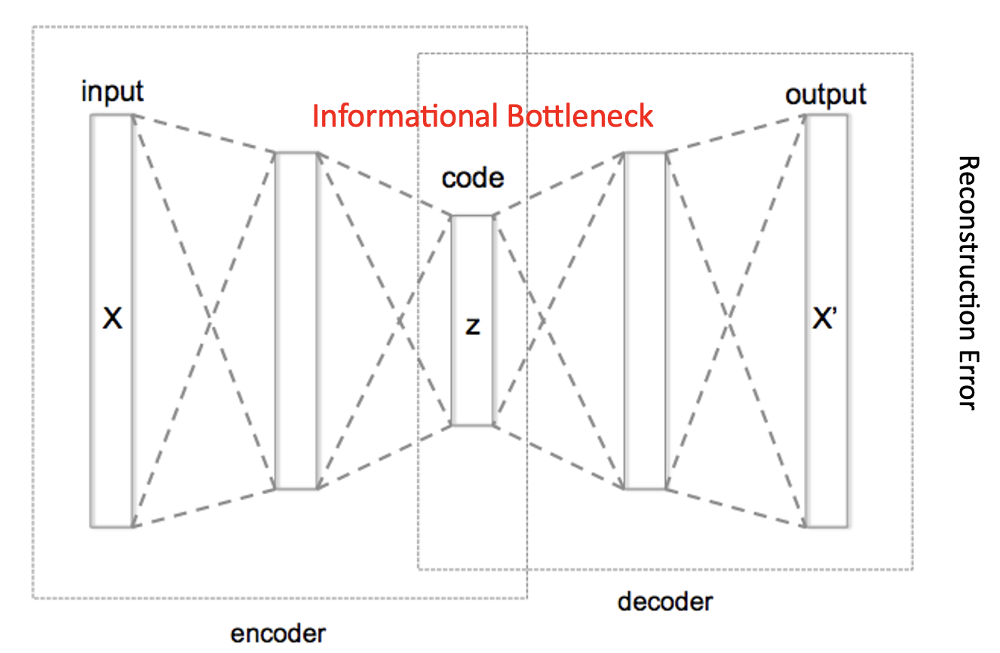
Section 1¶
[3]:
class Autoencoder(nn.Module):
def __init__(self):
super(Autoencoder, self).__init__()
self.enc_lin1 = nn.Linear(784, 1000)
self.enc_lin2 = nn.Linear(1000, 500)
self.enc_lin3 = nn.Linear(500, 250)
self.enc_lin4 = nn.Linear(250, 2)
self.dec_lin1 = nn.Linear(2, 250)
self.dec_lin2 = nn.Linear(250, 500)
self.dec_lin3 = nn.Linear(500, 1000)
self.dec_lin4 = nn.Linear(1000, 784)
self.tanh = nn.Tanh()
def encode(self, x):
x = self.enc_lin1(x)
x = self.tanh(x)
x = self.enc_lin2(x)
x = self.tanh(x)
x = self.enc_lin3(x)
x = self.tanh(x)
x = self.enc_lin4(x)
z = self.tanh(x)
# ... additional layers, plus possible nonlinearities.
return z
def decode(self, z):
# ditto, but in reverse
x = self.dec_lin1(z)
x = self.tanh(x)
x = self.dec_lin2(x)
x = self.tanh(x)
x = self.dec_lin3(x)
x = self.tanh(x)
x = self.dec_lin4(x)
x = self.tanh(x)
return x
def forward(self, x):
z = self.encode(x)
return self.decode(z), z
[4]:
batch_size = 128
test_loader = torch.utils.data.DataLoader(mnist_test,
batch_size=batch_size,
shuffle=False)
train_loader = torch.utils.data.DataLoader(mnist_train,
batch_size=batch_size,
shuffle=True)
[5]:
## Second routine for training and evaluation (using the )
# Training and Evaluation routines
import time
def train(model,loss_fn, optimizer, train_loader, test_loader, num_epochs=None, verbose=False):
"""
This is a standard training loop, which leaves some parts to be filled in.
INPUT:
:param model: an untrained pytorch model
:param loss_fn: e.g. Cross Entropy loss of Mean Squared Error.
:param optimizer: the model optimizer, initialized with a learning rate.
:param training_set: The training data, in a dataloader for easy iteration.
:param test_loader: The testing data, in a dataloader for easy iteration.
"""
print('optimizer: {}'.format(optimizer))
if num_epochs is None:
num_epochs = 100 # obviously, this is too many. I don't know what this author was thinking.
print('n. of epochs: {}'.format(num_epochs))
for epoch in range(num_epochs+1):
start = time.time()
# loop through each data point in the training set
for data, targets in train_loader:
# run the model on the data
model_input = data.view(data.size(0),-1).to(device)# TODO: Turn the 28 by 28 image tensors into a 784 dimensional tensor.
if verbose: print('model_input.shape: {}'.format(model_input.shape))
# Clear gradients w.r.t. parameters
optimizer.zero_grad()
out, _ = model(model_input) # The second output is the latent representation
if verbose:
print('targets.shape: {}'.format(targets.shape))
print('out.shape: {}'.format(out.shape))
# Calculate the loss
targets = targets # add an extra dimension to keep CrossEntropy happy.
if verbose: print('targets.shape: {}'.format(targets.shape))
loss = loss_fn(out,model_input)
if verbose: print('loss: {}'.format(loss))
# Find the gradients of our loss via backpropogation
loss.backward()
# Adjust accordingly with the optimizer
optimizer.step()
# Give status reports every 100 epochs
if epoch % 10==0:
print(f" EPOCH {epoch}. Progress: {epoch/num_epochs*100}%. ")
print(" Train loss: {:.4f}. Test loss: {:.4f}. Time: {:.4f}".format(evaluate(model,train_loader,verbose), evaluate(model,test_loader,verbose), (time.time() - start))) #TODO: implement the evaluate function to provide performance statistics during training.
def evaluate(model, evaluation_set, verbose=False):
"""
Evaluates the given model on the given dataset.
Returns the percentage of correct classifications out of total classifications.
"""
with torch.no_grad(): # this disables backpropogation, which makes the model run much more quickly.
correct = 0
total = 0
loss_all=0
for data, targets in evaluation_set:
# run the model on the data
model_input = data.view(data.size(0),-1).to(device)# TODO: Turn the 28 by 28 image tensors into a 784 dimensional tensor.
if verbose:
print('model_input.shape: {}'.format(model_input.shape))
print('targets.shape: {}'.format(targets.shape))
out,_ = model(model_input)
loss = loss_fn(out,model_input)
if verbose: print('out[:5]: {}'.format(out[:5]))
loss_all+=loss.item()
loss = loss_all/len(evaluation_set)
return loss
Autoencoding MNIST¶
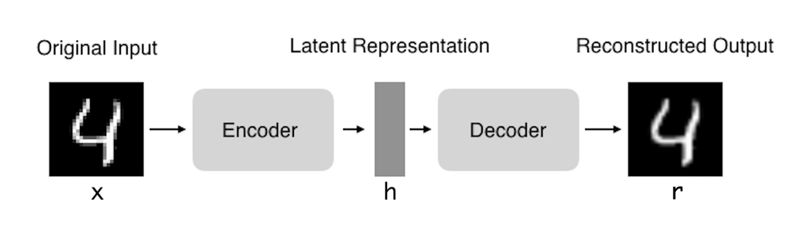
[6]:
# hid_dim_range = [128,256,512]
lr_range = [0.01,0.005,0.001]
print('Autoencoder - with non-linearity (tanh)')
for lr in lr_range:
if 'model' in globals():
print('Deleting previous model')
del model
model = Autoencoder().to(device)
ADAM = torch.optim.Adam(model.parameters(), lr = lr) # This is absurdly high.
loss_fn = nn.MSELoss().to(device)
train(model,loss_fn, ADAM, train_loader, test_loader,verbose=False)
Autoencoder - with non-linearity (tanh)
optimizer: Adam (
Parameter Group 0
amsgrad: False
betas: (0.9, 0.999)
eps: 1e-08
lr: 0.01
weight_decay: 0
)
n. of epochs: 100
EPOCH 0. Progress: 0.0%.
Train loss: 1.0428. Test loss: 1.0423. Time: 10.0248
EPOCH 10. Progress: 10.0%.
Train loss: 0.8899. Test loss: 0.8877. Time: 9.6755
EPOCH 20. Progress: 20.0%.
Train loss: 0.8899. Test loss: 0.8877. Time: 9.5361
EPOCH 30. Progress: 30.0%.
Train loss: 0.8899. Test loss: 0.8877. Time: 9.4851
EPOCH 40. Progress: 40.0%.
Train loss: 0.8899. Test loss: 0.8877. Time: 9.6068
EPOCH 50. Progress: 50.0%.
Train loss: 0.8899. Test loss: 0.8877. Time: 9.5639
EPOCH 60. Progress: 60.0%.
Train loss: 0.8899. Test loss: 0.8877. Time: 9.5320
EPOCH 70. Progress: 70.0%.
Train loss: 0.8899. Test loss: 0.8877. Time: 9.5468
EPOCH 80. Progress: 80.0%.
Train loss: 0.8899. Test loss: 0.8877. Time: 9.5872
EPOCH 90. Progress: 90.0%.
Train loss: 0.8899. Test loss: 0.8877. Time: 9.5837
EPOCH 100. Progress: 100.0%.
Train loss: 0.8899. Test loss: 0.8877. Time: 9.5013
Deleting previous model
optimizer: Adam (
Parameter Group 0
amsgrad: False
betas: (0.9, 0.999)
eps: 1e-08
lr: 0.005
weight_decay: 0
)
n. of epochs: 100
EPOCH 0. Progress: 0.0%.
Train loss: 1.1027. Test loss: 1.1086. Time: 9.4835
EPOCH 10. Progress: 10.0%.
Train loss: 1.1190. Test loss: 1.1250. Time: 9.5613
EPOCH 20. Progress: 20.0%.
Train loss: 1.1304. Test loss: 1.1366. Time: 9.3534
EPOCH 30. Progress: 30.0%.
Train loss: 1.1336. Test loss: 1.1397. Time: 9.6452
EPOCH 40. Progress: 40.0%.
Train loss: 1.1353. Test loss: 1.1414. Time: 9.4842
EPOCH 50. Progress: 50.0%.
Train loss: 1.1349. Test loss: 1.1411. Time: 9.4263
EPOCH 60. Progress: 60.0%.
Train loss: 1.1353. Test loss: 1.1414. Time: 9.5138
EPOCH 70. Progress: 70.0%.
Train loss: 1.1367. Test loss: 1.1428. Time: 9.5135
EPOCH 80. Progress: 80.0%.
Train loss: 1.1367. Test loss: 1.1428. Time: 9.5350
EPOCH 90. Progress: 90.0%.
Train loss: 1.1363. Test loss: 1.1425. Time: 9.4734
EPOCH 100. Progress: 100.0%.
Train loss: 1.1361. Test loss: 1.1422. Time: 9.5480
Deleting previous model
optimizer: Adam (
Parameter Group 0
amsgrad: False
betas: (0.9, 0.999)
eps: 1e-08
lr: 0.001
weight_decay: 0
)
n. of epochs: 100
EPOCH 0. Progress: 0.0%.
Train loss: 0.0505. Test loss: 0.0503. Time: 9.5554
EPOCH 10. Progress: 10.0%.
Train loss: 0.0406. Test loss: 0.0405. Time: 9.4873
EPOCH 20. Progress: 20.0%.
Train loss: 0.0389. Test loss: 0.0389. Time: 9.5403
EPOCH 30. Progress: 30.0%.
Train loss: 0.0377. Test loss: 0.0378. Time: 9.2778
EPOCH 40. Progress: 40.0%.
Train loss: 0.0368. Test loss: 0.0370. Time: 9.5494
EPOCH 50. Progress: 50.0%.
Train loss: 0.0368. Test loss: 0.0369. Time: 9.5141
EPOCH 60. Progress: 60.0%.
Train loss: 0.0363. Test loss: 0.0366. Time: 9.5806
EPOCH 70. Progress: 70.0%.
Train loss: 0.0359. Test loss: 0.0362. Time: 9.5740
EPOCH 80. Progress: 80.0%.
Train loss: 0.0356. Test loss: 0.0359. Time: 9.5521
EPOCH 90. Progress: 90.0%.
Train loss: 0.0359. Test loss: 0.0362. Time: 9.4949
EPOCH 100. Progress: 100.0%.
Train loss: 0.0356. Test loss: 0.0359. Time: 9.5257
[6]:
# Training for longer with the lr that gave best result
lr_range = [0.001]
print('Autoencoder - with non-linearity (tanh)')
for lr in lr_range:
if 'model' in globals():
print('Deleting previous model')
del model
model = Autoencoder().to(device)
ADAM = torch.optim.Adam(model.parameters(), lr = lr)
loss_fn = nn.MSELoss().to(device)
train(model,loss_fn, ADAM, train_loader, test_loader,num_epochs=500,verbose=False)
# # Save the trained model
# torch.save(model.state_dict(), './models/model_AE.pt')
Autoencoder - with non-linearity (tanh)
optimizer: Adam (
Parameter Group 0
amsgrad: False
betas: (0.9, 0.999)
eps: 1e-08
lr: 0.001
weight_decay: 0
)
n. of epochs: 500
EPOCH 0. Progress: 0.0%.
Train loss: 0.0498. Test loss: 0.0500. Time: 9.8799
EPOCH 10. Progress: 2.0%.
Train loss: 0.0413. Test loss: 0.0415. Time: 9.5658
EPOCH 20. Progress: 4.0%.
Train loss: 0.0390. Test loss: 0.0392. Time: 9.5774
EPOCH 30. Progress: 6.0%.
Train loss: 0.0380. Test loss: 0.0381. Time: 9.5850
EPOCH 40. Progress: 8.0%.
Train loss: 0.0371. Test loss: 0.0373. Time: 9.5798
EPOCH 50. Progress: 10.0%.
Train loss: 0.0368. Test loss: 0.0369. Time: 9.5161
EPOCH 60. Progress: 12.0%.
Train loss: 0.0363. Test loss: 0.0365. Time: 9.6184
EPOCH 70. Progress: 14.000000000000002%.
Train loss: 0.0359. Test loss: 0.0361. Time: 9.4047
EPOCH 80. Progress: 16.0%.
Train loss: 0.0357. Test loss: 0.0359. Time: 9.5648
EPOCH 90. Progress: 18.0%.
Train loss: 0.0356. Test loss: 0.0359. Time: 9.5302
EPOCH 100. Progress: 20.0%.
Train loss: 0.0355. Test loss: 0.0358. Time: 9.5004
EPOCH 110. Progress: 22.0%.
Train loss: 0.0354. Test loss: 0.0358. Time: 9.4044
EPOCH 120. Progress: 24.0%.
Train loss: 0.0356. Test loss: 0.0359. Time: 9.4904
EPOCH 130. Progress: 26.0%.
Train loss: 0.0350. Test loss: 0.0354. Time: 9.5713
EPOCH 140. Progress: 28.000000000000004%.
Train loss: 0.0350. Test loss: 0.0354. Time: 9.5394
EPOCH 150. Progress: 30.0%.
Train loss: 0.0350. Test loss: 0.0354. Time: 9.5370
EPOCH 160. Progress: 32.0%.
Train loss: 0.0354. Test loss: 0.0357. Time: 9.5828
EPOCH 170. Progress: 34.0%.
Train loss: 0.0347. Test loss: 0.0352. Time: 9.2973
EPOCH 180. Progress: 36.0%.
Train loss: 0.0346. Test loss: 0.0349. Time: 9.5753
EPOCH 190. Progress: 38.0%.
Train loss: 0.0352. Test loss: 0.0356. Time: 9.4743
EPOCH 200. Progress: 40.0%.
Train loss: 0.0349. Test loss: 0.0353. Time: 9.5419
EPOCH 210. Progress: 42.0%.
Train loss: 0.0345. Test loss: 0.0349. Time: 9.5709
EPOCH 220. Progress: 44.0%.
Train loss: 0.0345. Test loss: 0.0349. Time: 9.5569
EPOCH 230. Progress: 46.0%.
Train loss: 0.0343. Test loss: 0.0348. Time: 9.2725
EPOCH 240. Progress: 48.0%.
Train loss: 0.0343. Test loss: 0.0348. Time: 9.4752
EPOCH 250. Progress: 50.0%.
Train loss: 0.0348. Test loss: 0.0352. Time: 9.5952
EPOCH 260. Progress: 52.0%.
Train loss: 0.0342. Test loss: 0.0348. Time: 9.5204
EPOCH 270. Progress: 54.0%.
Train loss: 0.0342. Test loss: 0.0348. Time: 9.4831
EPOCH 280. Progress: 56.00000000000001%.
Train loss: 0.0341. Test loss: 0.0346. Time: 9.4748
EPOCH 290. Progress: 57.99999999999999%.
Train loss: 0.0340. Test loss: 0.0347. Time: 9.5644
EPOCH 300. Progress: 60.0%.
Train loss: 0.0343. Test loss: 0.0348. Time: 9.2511
EPOCH 310. Progress: 62.0%.
Train loss: 0.0340. Test loss: 0.0345. Time: 9.5455
EPOCH 320. Progress: 64.0%.
Train loss: 0.0339. Test loss: 0.0345. Time: 9.5771
EPOCH 330. Progress: 66.0%.
Train loss: 0.0339. Test loss: 0.0345. Time: 9.5510
EPOCH 340. Progress: 68.0%.
Train loss: 0.0343. Test loss: 0.0350. Time: 9.5394
EPOCH 350. Progress: 70.0%.
Train loss: 0.0342. Test loss: 0.0348. Time: 9.4558
EPOCH 360. Progress: 72.0%.
Train loss: 0.0341. Test loss: 0.0347. Time: 9.4981
EPOCH 370. Progress: 74.0%.
Train loss: 0.0337. Test loss: 0.0343. Time: 9.4733
EPOCH 380. Progress: 76.0%.
Train loss: 0.0338. Test loss: 0.0344. Time: 9.5276
EPOCH 390. Progress: 78.0%.
Train loss: 0.0340. Test loss: 0.0345. Time: 9.6180
EPOCH 400. Progress: 80.0%.
Train loss: 0.0339. Test loss: 0.0344. Time: 9.6086
EPOCH 410. Progress: 82.0%.
Train loss: 0.0337. Test loss: 0.0344. Time: 9.5417
EPOCH 420. Progress: 84.0%.
Train loss: 0.0336. Test loss: 0.0342. Time: 9.4374
EPOCH 430. Progress: 86.0%.
Train loss: 0.0336. Test loss: 0.0343. Time: 9.5644
EPOCH 440. Progress: 88.0%.
Train loss: 0.0336. Test loss: 0.0343. Time: 9.5794
EPOCH 450. Progress: 90.0%.
Train loss: 0.0334. Test loss: 0.0340. Time: 9.5730
EPOCH 460. Progress: 92.0%.
Train loss: 0.0337. Test loss: 0.0343. Time: 9.5895
EPOCH 470. Progress: 94.0%.
Train loss: 0.0336. Test loss: 0.0343. Time: 9.5377
EPOCH 480. Progress: 96.0%.
Train loss: 0.0335. Test loss: 0.0342. Time: 9.4630
EPOCH 490. Progress: 98.0%.
Train loss: 0.0340. Test loss: 0.0347. Time: 9.5456
EPOCH 500. Progress: 100.0%.
Train loss: 0.0337. Test loss: 0.0344. Time: 9.7685
[7]:
# Load the model
model_AE = Autoencoder().to(device)
model_AE.load_state_dict(torch.load('./models/model_AE.pt',map_location=torch.device(device)))
[7]:
<All keys matched successfully>
[8]:
## Plot the embedding of 1000 digits
# Test
large_batch = torch.utils.data.DataLoader(mnist_train,
batch_size=1000,
shuffle=False)
with torch.no_grad():
data, targets = next(iter(large_batch))
print('targets.shape: {}'.format(targets.shape))
print('np.unique(targets): {}'.format(np.unique(targets)))
model_input = data.view(data.size(0),-1).to(device)# TODO: Turn the 28 by 28 image tensors into a 784 dimensional tensor.
out, latentVar = model_AE(model_input)
print('latentVar.shape: {}'.format(latentVar.shape))
latentVar = latentVar.cpu().numpy()
targets = targets.numpy()
fig,ax = plt.subplots(1,1,figsize=(10,10))
plt.scatter(latentVar[:,0],latentVar[:,1],c=targets[:])
plt.colorbar(ticks=range(10))
n_points=50
for x,y,i in zip(latentVar[:n_points,0],latentVar[:n_points,1],range(n_points)):
label = targets[i]
plt.annotate(label, # this is the text
(x,y), # this is the point to label
textcoords="offset points", # how to position the text
xytext=(0,0), # distance from text to points (x,y)
ha='center') # horizontal alignment can be left, right or center
targets.shape: torch.Size([1000])
np.unique(targets): [0 1 2 3 4 5 6 7 8 9]
latentVar.shape: torch.Size([1000, 2])
[9]:
with torch.no_grad():
data, targets = next(iter(large_batch))
model_input = data.view(data.size(0),-1).to(device)
out, latentVar = model_AE(model_input)
latentVar = latentVar.cpu().numpy()
targets = targets.numpy()
model_input = model_input.cpu().numpy()
out = out.cpu().numpy()
fig,ax = plt.subplots(10,2,figsize=(3,10))
ax = ax.ravel()
count=0
for idx1 in range(10):
for idx2 in range(len(targets)): #Looking for the digit among the labels
if idx1==targets[idx2]:
ax[count].imshow(model_input[idx2].reshape(28,28))
ax[count].set_xticks([])
ax[count].set_yticks([])
count+=1
ax[count].imshow(out[idx2].reshape(28,28))
ax[count].set_xticks([])
ax[count].set_yticks([])
count+=1
break
fig.tight_layout()
[10]:
# Interpolate between two images of different classes
with torch.no_grad():
data, targets = next(iter(large_batch))
print('targets.shape: {}'.format(targets.shape))
print('np.unique(targets): {}'.format(np.unique(targets)))
model_input = data.view(data.size(0),-1).to(device)# TODO: Turn the 28 by 28 image tensors into a 784 dimensional tensor.
out, latentVar = model_AE(model_input)
print('latentVar.shape: {}'.format(latentVar.shape))
latentVar = latentVar.cpu().numpy()
targets = targets.numpy()
fig,ax = plt.subplots(1,1,figsize=(10,10))
plt.scatter(latentVar[:,0],latentVar[:,1],c=targets[:])
print('targets[:20]: {}'.format(targets[:20]))
print('latentVar[:20]: {}'.format(latentVar[:20]))
plt.colorbar(ticks=range(10))
n_points=50
for x,y,i in zip(latentVar[:n_points,0],latentVar[:n_points,1],range(n_points)):
label = targets[i]
plt.annotate(label, # this is the text
(x,y), # this is the point to label
textcoords="offset points", # how to position the text
xytext=(0,0), # distance from text to points (x,y)
ha='center') # horizontal alignment can be left, right or center
# Get the first two points of latentVar
x0,y0 = latentVar[0,0],latentVar[0,1]
x1,y1 = latentVar[1,0],latentVar[1,1]
xvals = np.array(np.linspace(x0, x1, 10))
yvals = np.array(np.linspace(y0, y1, 10))
print('x0,y0: {},{}'.format(x0,y0))
print('x1,y1: {},{}'.format(x1,y1))
print('xvals: {}'.format(xvals))
print('yvals: {}'.format(yvals))
plt.plot(xvals[:],yvals[:],c='r',marker='*')
targets.shape: torch.Size([1000])
np.unique(targets): [0 1 2 3 4 5 6 7 8 9]
latentVar.shape: torch.Size([1000, 2])
targets[:20]: [5 0 4 1 9 2 1 3 1 4 3 5 3 6 1 7 2 8 6 9]
latentVar[:20]: [[ 0.20221455 -0.6054991 ]
[ 0.8239314 -0.72916347]
[ 0.11328156 0.92810714]
[-0.7525427 -0.9826892 ]
[-0.5522593 0.19914472]
[ 0.6784188 0.01163787]
[-0.8704568 -0.46279663]
[ 0.0295923 -0.4888633 ]
[-0.9643847 -0.57120174]
[-0.04333551 0.6172684 ]
[ 0.11311392 -0.3921932 ]
[ 0.33123577 -0.9982074 ]
[-0.06723223 -0.314809 ]
[ 0.45514876 -0.17654106]
[-0.97248226 -0.63170075]
[-0.56841725 0.92171985]
[ 0.65297705 0.21242166]
[-0.50694126 -0.8574053 ]
[ 0.2849127 -0.20937435]
[-0.43654057 0.49491724]]
x0,y0: 0.2022145539522171,-0.6054990887641907
x1,y1: 0.8239313960075378,-0.7291634678840637
xvals: [0.20221455 0.2712942 0.34037385 0.4094535 0.47853315 0.5476128
0.61669245 0.6857721 0.75485175 0.8239314 ]
yvals: [-0.60549909 -0.61923958 -0.63298006 -0.64672055 -0.66046104 -0.67420152
-0.68794201 -0.70168249 -0.71542298 -0.72916347]
[11]:
class AE_decoder(nn.Module):
def __init__(self):
super(AE_decoder, self).__init__()
self.dec_lin1 = model_AE.dec_lin1
self.dec_lin2 = model_AE.dec_lin2
self.dec_lin3 = model_AE.dec_lin3
self.dec_lin4 = model_AE.dec_lin4
self.tanh = nn.Tanh()
def forward(self,z):
# ditto, but in reverse
print('z: {}'.format(z))
print('z.shape: {}'.format(z.shape))
x = self.dec_lin1(z)
x = self.tanh(x)
x = self.dec_lin2(x)
x = self.tanh(x)
x = self.dec_lin3(x)
x = self.tanh(x)
x = self.dec_lin4(x)
x = self.tanh(x)
return x
[12]:
# Decode the interpolated points across classes
with torch.no_grad():
fig,ax = plt.subplots(1,10,figsize=(20,3))
ax = ax.ravel()
count=0
for (x,y) in zip(xvals,yvals):
model_input = np.array([x,y])
model_input = torch.from_numpy(model_input).float()
print('model_input: {}'.format(model_input))
model = AE_decoder()
out = model(model_input.to(device))
out = out.cpu().numpy()
ax[count].imshow(out.reshape(28,28))
ax[count].set_xticks([])
ax[count].set_yticks([])
count+=1
fig.tight_layout()
model_input: tensor([ 0.2022, -0.6055])
z: tensor([ 0.2022, -0.6055])
z.shape: torch.Size([2])
model_input: tensor([ 0.2713, -0.6192])
z: tensor([ 0.2713, -0.6192])
z.shape: torch.Size([2])
model_input: tensor([ 0.3404, -0.6330])
z: tensor([ 0.3404, -0.6330])
z.shape: torch.Size([2])
model_input: tensor([ 0.4095, -0.6467])
z: tensor([ 0.4095, -0.6467])
z.shape: torch.Size([2])
model_input: tensor([ 0.4785, -0.6605])
z: tensor([ 0.4785, -0.6605])
z.shape: torch.Size([2])
model_input: tensor([ 0.5476, -0.6742])
z: tensor([ 0.5476, -0.6742])
z.shape: torch.Size([2])
model_input: tensor([ 0.6167, -0.6879])
z: tensor([ 0.6167, -0.6879])
z.shape: torch.Size([2])
model_input: tensor([ 0.6858, -0.7017])
z: tensor([ 0.6858, -0.7017])
z.shape: torch.Size([2])
model_input: tensor([ 0.7549, -0.7154])
z: tensor([ 0.7549, -0.7154])
z.shape: torch.Size([2])
model_input: tensor([ 0.8239, -0.7292])
z: tensor([ 0.8239, -0.7292])
z.shape: torch.Size([2])
[13]:
# Interpolate between two images of the same class
with torch.no_grad():
data, targets = next(iter(large_batch))
print('targets.shape: {}'.format(targets.shape))
print('np.unique(targets): {}'.format(np.unique(targets)))
model_input = data.view(data.size(0),-1).to(device)# TODO: Turn the 28 by 28 image tensors into a 784 dimensional tensor.
out, latentVar = model_AE(model_input)
print('latentVar.shape: {}'.format(latentVar.shape))
latentVar = latentVar.cpu().numpy()
targets = targets.numpy()
idx_ = np.where(targets==6)[0] # Get two '6'.
print(idx_[:2])
fig,ax = plt.subplots(1,1,figsize=(10,10))
plt.scatter(latentVar[:,0],latentVar[:,1],c=targets[:])
print('targets[:20]: {}'.format(targets[:20]))
print('latentVar[:20]: {}'.format(latentVar[:20]))
plt.colorbar(ticks=range(10))
n_points=50
for x,y,i in zip(latentVar[:n_points,0],latentVar[:n_points,1],range(n_points)):
label = targets[i]
plt.annotate(label, # this is the text
(x,y), # this is the point to label
textcoords="offset points", # how to position the text
xytext=(0,0), # distance from text to points (x,y)
ha='center') # horizontal alignment can be left, right or center
# Get the first two points of latentVar
x0,y0 = latentVar[idx_[0],0],latentVar[idx_[0],1]
x1,y1 = latentVar[idx_[1],0],latentVar[idx_[1],1]
xvals = np.array(np.linspace(x0, x1, 10))
yvals = np.array(np.linspace(y0, y1, 10))
print('x0,y0: {},{}'.format(x0,y0))
print('x1,y1: {},{}'.format(x1,y1))
print('xvals: {}'.format(xvals))
print('yvals: {}'.format(yvals))
plt.plot(xvals[:],yvals[:],c='r',marker='*')
targets.shape: torch.Size([1000])
np.unique(targets): [0 1 2 3 4 5 6 7 8 9]
latentVar.shape: torch.Size([1000, 2])
[13 18]
targets[:20]: [5 0 4 1 9 2 1 3 1 4 3 5 3 6 1 7 2 8 6 9]
latentVar[:20]: [[ 0.20221455 -0.6054991 ]
[ 0.8239314 -0.72916347]
[ 0.11328156 0.92810714]
[-0.7525427 -0.9826892 ]
[-0.5522593 0.19914472]
[ 0.6784188 0.01163787]
[-0.8704568 -0.46279663]
[ 0.0295923 -0.4888633 ]
[-0.9643847 -0.57120174]
[-0.04333551 0.6172684 ]
[ 0.11311392 -0.3921932 ]
[ 0.33123577 -0.9982074 ]
[-0.06723223 -0.314809 ]
[ 0.45514876 -0.17654106]
[-0.97248226 -0.63170075]
[-0.56841725 0.92171985]
[ 0.65297705 0.21242166]
[-0.50694126 -0.8574053 ]
[ 0.2849127 -0.20937435]
[-0.43654057 0.49491724]]
x0,y0: 0.45514875650405884,-0.1765410602092743
x1,y1: 0.28491270542144775,-0.2093743532896042
xvals: [0.45514876 0.43623364 0.41731852 0.39840341 0.37948829 0.36057317
0.34165806 0.32274294 0.30382782 0.28491271]
yvals: [-0.17654106 -0.1801892 -0.18383735 -0.18748549 -0.19113363 -0.19478178
-0.19842992 -0.20207807 -0.20572621 -0.20937435]
[14]:
with torch.no_grad():
fig,ax = plt.subplots(1,10,figsize=(20,3))
ax = ax.ravel()
count=0
for (x,y) in zip(xvals,yvals):
model_input = np.array([x,y])
model_input = torch.from_numpy(model_input).float()
print('model_input: {}'.format(model_input))
model = AE_decoder()
out = model(model_input.to(device))
out = out.cpu().numpy()
ax[count].imshow(out.reshape(28,28))
ax[count].set_xticks([])
ax[count].set_yticks([])
count+=1
fig.tight_layout()
model_input: tensor([ 0.4551, -0.1765])
z: tensor([ 0.4551, -0.1765])
z.shape: torch.Size([2])
model_input: tensor([ 0.4362, -0.1802])
z: tensor([ 0.4362, -0.1802])
z.shape: torch.Size([2])
model_input: tensor([ 0.4173, -0.1838])
z: tensor([ 0.4173, -0.1838])
z.shape: torch.Size([2])
model_input: tensor([ 0.3984, -0.1875])
z: tensor([ 0.3984, -0.1875])
z.shape: torch.Size([2])
model_input: tensor([ 0.3795, -0.1911])
z: tensor([ 0.3795, -0.1911])
z.shape: torch.Size([2])
model_input: tensor([ 0.3606, -0.1948])
z: tensor([ 0.3606, -0.1948])
z.shape: torch.Size([2])
model_input: tensor([ 0.3417, -0.1984])
z: tensor([ 0.3417, -0.1984])
z.shape: torch.Size([2])
model_input: tensor([ 0.3227, -0.2021])
z: tensor([ 0.3227, -0.2021])
z.shape: torch.Size([2])
model_input: tensor([ 0.3038, -0.2057])
z: tensor([ 0.3038, -0.2057])
z.shape: torch.Size([2])
model_input: tensor([ 0.2849, -0.2094])
z: tensor([ 0.2849, -0.2094])
z.shape: torch.Size([2])
[15]:
# Autoencoder - with linear activation in middle layer and non-linearity (tanh) everywhere else
class Autoencoder(nn.Module):
def __init__(self):
super(Autoencoder, self).__init__()
self.enc_lin1 = nn.Linear(784, 1000)
self.enc_lin2 = nn.Linear(1000, 500)
self.enc_lin3 = nn.Linear(500, 250)
self.enc_lin4 = nn.Linear(250, 2)
self.dec_lin1 = nn.Linear(2, 250)
self.dec_lin2 = nn.Linear(250, 500)
self.dec_lin3 = nn.Linear(500, 1000)
self.dec_lin4 = nn.Linear(1000, 784)
self.tanh = nn.Tanh()
def encode(self, x):
x = self.enc_lin1(x)
x = self.tanh(x)
x = self.enc_lin2(x)
x = self.tanh(x)
x = self.enc_lin3(x)
x = self.tanh(x)
x = self.enc_lin4(x)
z = x
return z
def decode(self, z):
# ditto, but in reverse
x = self.dec_lin1(z)
x = self.tanh(x)
x = self.dec_lin2(x)
x = self.tanh(x)
x = self.dec_lin3(x)
x = self.tanh(x)
x = self.dec_lin4(x)
x = self.tanh(x)
return x
def forward(self, x):
z = self.encode(x)
return self.decode(z), z
[17]:
lr_range = [0.01,0.005,0.001]
print('Autoencoder - with linear activation in middle layer and non-linearity (tanh) everywhere else')
for lr in lr_range:
if 'model' in globals():
print('Deleting previous model')
del model
model = Autoencoder().to(device)
ADAM = torch.optim.Adam(model.parameters(), lr = lr)
loss_fn = nn.MSELoss().to(device)
train(model,loss_fn, ADAM, train_loader, test_loader,verbose=False)
Autoencoder - with linear activation in middle layer and non-linearity (tanh) everywhere else
Deleting previous model
optimizer: Adam (
Parameter Group 0
amsgrad: False
betas: (0.9, 0.999)
eps: 1e-08
lr: 0.01
weight_decay: 0
)
n. of epochs: 100
EPOCH 0. Progress: 0.0%.
Train loss: 0.8617. Test loss: 0.8591. Time: 9.4712
EPOCH 10. Progress: 10.0%.
Train loss: 0.8617. Test loss: 0.8591. Time: 9.4638
EPOCH 20. Progress: 20.0%.
Train loss: 0.8617. Test loss: 0.8591. Time: 9.5027
EPOCH 30. Progress: 30.0%.
Train loss: 0.8617. Test loss: 0.8591. Time: 9.4711
EPOCH 40. Progress: 40.0%.
Train loss: 0.8617. Test loss: 0.8591. Time: 9.4828
EPOCH 50. Progress: 50.0%.
Train loss: 0.8617. Test loss: 0.8591. Time: 9.4912
EPOCH 60. Progress: 60.0%.
Train loss: 0.8617. Test loss: 0.8591. Time: 9.5242
EPOCH 70. Progress: 70.0%.
Train loss: 0.8617. Test loss: 0.8591. Time: 9.4808
EPOCH 80. Progress: 80.0%.
Train loss: 0.8617. Test loss: 0.8591. Time: 9.5575
EPOCH 90. Progress: 90.0%.
Train loss: 0.8617. Test loss: 0.8591. Time: 9.3911
EPOCH 100. Progress: 100.0%.
Train loss: 0.8617. Test loss: 0.8591. Time: 9.4259
Deleting previous model
optimizer: Adam (
Parameter Group 0
amsgrad: False
betas: (0.9, 0.999)
eps: 1e-08
lr: 0.005
weight_decay: 0
)
n. of epochs: 100
EPOCH 0. Progress: 0.0%.
Train loss: 0.7290. Test loss: 0.7264. Time: 9.5176
EPOCH 10. Progress: 10.0%.
Train loss: 0.7941. Test loss: 0.7924. Time: 9.3252
EPOCH 20. Progress: 20.0%.
Train loss: 0.8117. Test loss: 0.8105. Time: 9.4485
EPOCH 30. Progress: 30.0%.
Train loss: 0.8164. Test loss: 0.8154. Time: 9.5031
EPOCH 40. Progress: 40.0%.
Train loss: 0.8180. Test loss: 0.8169. Time: 9.5295
EPOCH 50. Progress: 50.0%.
Train loss: 0.8197. Test loss: 0.8186. Time: 9.2573
EPOCH 60. Progress: 60.0%.
Train loss: 0.8220. Test loss: 0.8209. Time: 9.4746
EPOCH 70. Progress: 70.0%.
Train loss: 0.8244. Test loss: 0.8232. Time: 9.2388
EPOCH 80. Progress: 80.0%.
Train loss: 0.8251. Test loss: 0.8240. Time: 9.5341
EPOCH 90. Progress: 90.0%.
Train loss: 0.8253. Test loss: 0.8241. Time: 9.5734
EPOCH 100. Progress: 100.0%.
Train loss: 0.8251. Test loss: 0.8240. Time: 9.5021
Deleting previous model
optimizer: Adam (
Parameter Group 0
amsgrad: False
betas: (0.9, 0.999)
eps: 1e-08
lr: 0.001
weight_decay: 0
)
n. of epochs: 100
EPOCH 0. Progress: 0.0%.
Train loss: 0.0465. Test loss: 0.0464. Time: 9.5317
EPOCH 10. Progress: 10.0%.
Train loss: 0.0375. Test loss: 0.0377. Time: 9.4616
EPOCH 20. Progress: 20.0%.
Train loss: 0.0356. Test loss: 0.0360. Time: 9.4783
EPOCH 30. Progress: 30.0%.
Train loss: 0.0352. Test loss: 0.0357. Time: 9.5708
EPOCH 40. Progress: 40.0%.
Train loss: 0.0347. Test loss: 0.0351. Time: 9.5585
EPOCH 50. Progress: 50.0%.
Train loss: 0.0341. Test loss: 0.0348. Time: 9.5080
EPOCH 60. Progress: 60.0%.
Train loss: 0.0339. Test loss: 0.0347. Time: 9.5499
EPOCH 70. Progress: 70.0%.
Train loss: 0.0335. Test loss: 0.0343. Time: 9.4573
EPOCH 80. Progress: 80.0%.
Train loss: 0.0336. Test loss: 0.0346. Time: 9.5612
EPOCH 90. Progress: 90.0%.
Train loss: 0.0332. Test loss: 0.0341. Time: 9.4910
EPOCH 100. Progress: 100.0%.
Train loss: 0.0331. Test loss: 0.0340. Time: 9.5090
[18]:
# Training for longer with the lr that gave best result
lr_range = [0.001]
print('Autoencoder - with linear activation in middle layer and non-linearity (tanh) everywhere else')
# for hid_dim in hid_dim_range:
for lr in lr_range:
if 'model' in globals():
print('Deleting previous model')
del model
model = Autoencoder().to(device)
ADAM = torch.optim.Adam(model.parameters(), lr = lr)
# initialize the loss function. You don't want to use this one, so change it accordingly
loss_fn = nn.MSELoss().to(device)
train(model,loss_fn, ADAM, train_loader, test_loader,num_epochs=500,verbose=False)
# # Save the trained model
# torch.save(model.state_dict(), './models/model_AE_linear.pt')
Autoencoder - with linear activation in middle layer and non-linearity (tanh) everywhere else
Deleting previous model
optimizer: Adam (
Parameter Group 0
amsgrad: False
betas: (0.9, 0.999)
eps: 1e-08
lr: 0.001
weight_decay: 0
)
n. of epochs: 500
EPOCH 0. Progress: 0.0%.
Train loss: 0.0462. Test loss: 0.0461. Time: 9.2585
EPOCH 10. Progress: 2.0%.
Train loss: 0.0375. Test loss: 0.0376. Time: 9.4987
EPOCH 20. Progress: 4.0%.
Train loss: 0.0358. Test loss: 0.0362. Time: 9.7496
EPOCH 30. Progress: 6.0%.
Train loss: 0.0355. Test loss: 0.0358. Time: 9.4185
EPOCH 40. Progress: 8.0%.
Train loss: 0.0346. Test loss: 0.0352. Time: 9.5354
EPOCH 50. Progress: 10.0%.
Train loss: 0.0342. Test loss: 0.0346. Time: 9.4688
EPOCH 60. Progress: 12.0%.
Train loss: 0.0341. Test loss: 0.0346. Time: 9.3935
EPOCH 70. Progress: 14.000000000000002%.
Train loss: 0.0340. Test loss: 0.0346. Time: 9.5204
EPOCH 80. Progress: 16.0%.
Train loss: 0.0337. Test loss: 0.0343. Time: 9.5370
EPOCH 90. Progress: 18.0%.
Train loss: 0.0334. Test loss: 0.0341. Time: 9.5833
EPOCH 100. Progress: 20.0%.
Train loss: 0.0335. Test loss: 0.0342. Time: 9.4750
EPOCH 110. Progress: 22.0%.
Train loss: 0.0332. Test loss: 0.0340. Time: 9.5390
EPOCH 120. Progress: 24.0%.
Train loss: 0.0330. Test loss: 0.0338. Time: 9.5864
EPOCH 130. Progress: 26.0%.
Train loss: 0.0328. Test loss: 0.0336. Time: 9.5849
EPOCH 140. Progress: 28.000000000000004%.
Train loss: 0.0328. Test loss: 0.0336. Time: 9.5257
EPOCH 150. Progress: 30.0%.
Train loss: 0.0327. Test loss: 0.0335. Time: 9.4052
EPOCH 160. Progress: 32.0%.
Train loss: 0.0325. Test loss: 0.0334. Time: 9.5780
EPOCH 170. Progress: 34.0%.
Train loss: 0.0324. Test loss: 0.0333. Time: 9.5659
EPOCH 180. Progress: 36.0%.
Train loss: 0.0325. Test loss: 0.0332. Time: 9.4000
EPOCH 190. Progress: 38.0%.
Train loss: 0.0324. Test loss: 0.0334. Time: 9.5419
EPOCH 200. Progress: 40.0%.
Train loss: 0.0326. Test loss: 0.0335. Time: 9.6191
EPOCH 210. Progress: 42.0%.
Train loss: 0.0322. Test loss: 0.0331. Time: 9.5465
EPOCH 220. Progress: 44.0%.
Train loss: 0.0323. Test loss: 0.0333. Time: 9.5437
EPOCH 230. Progress: 46.0%.
Train loss: 0.0325. Test loss: 0.0335. Time: 9.5047
EPOCH 240. Progress: 48.0%.
Train loss: 0.0324. Test loss: 0.0332. Time: 9.5270
EPOCH 250. Progress: 50.0%.
Train loss: 0.0322. Test loss: 0.0332. Time: 9.2672
EPOCH 260. Progress: 52.0%.
Train loss: 0.0320. Test loss: 0.0331. Time: 9.4788
EPOCH 270. Progress: 54.0%.
Train loss: 0.0320. Test loss: 0.0331. Time: 9.3130
EPOCH 280. Progress: 56.00000000000001%.
Train loss: 0.0322. Test loss: 0.0331. Time: 9.5173
EPOCH 290. Progress: 57.99999999999999%.
Train loss: 0.0319. Test loss: 0.0329. Time: 9.4054
EPOCH 300. Progress: 60.0%.
Train loss: 0.0318. Test loss: 0.0329. Time: 9.2717
EPOCH 310. Progress: 62.0%.
Train loss: 0.0319. Test loss: 0.0330. Time: 9.4390
EPOCH 320. Progress: 64.0%.
Train loss: 0.0319. Test loss: 0.0330. Time: 9.6270
EPOCH 330. Progress: 66.0%.
Train loss: 0.0319. Test loss: 0.0329. Time: 9.4734
EPOCH 340. Progress: 68.0%.
Train loss: 0.0318. Test loss: 0.0329. Time: 9.5367
EPOCH 350. Progress: 70.0%.
Train loss: 0.0318. Test loss: 0.0329. Time: 9.4834
EPOCH 360. Progress: 72.0%.
Train loss: 0.0318. Test loss: 0.0329. Time: 9.5595
EPOCH 370. Progress: 74.0%.
Train loss: 0.0319. Test loss: 0.0331. Time: 9.5697
EPOCH 380. Progress: 76.0%.
Train loss: 0.0314. Test loss: 0.0325. Time: 9.2790
EPOCH 390. Progress: 78.0%.
Train loss: 0.0317. Test loss: 0.0328. Time: 9.5473
EPOCH 400. Progress: 80.0%.
Train loss: 0.0316. Test loss: 0.0328. Time: 9.4116
EPOCH 410. Progress: 82.0%.
Train loss: 0.0317. Test loss: 0.0329. Time: 9.2364
EPOCH 420. Progress: 84.0%.
Train loss: 0.0317. Test loss: 0.0329. Time: 9.5650
EPOCH 430. Progress: 86.0%.
Train loss: 0.0316. Test loss: 0.0328. Time: 9.4485
EPOCH 440. Progress: 88.0%.
Train loss: 0.0314. Test loss: 0.0326. Time: 9.6630
EPOCH 450. Progress: 90.0%.
Train loss: 0.0316. Test loss: 0.0328. Time: 9.5375
EPOCH 460. Progress: 92.0%.
Train loss: 0.0316. Test loss: 0.0328. Time: 9.2494
EPOCH 470. Progress: 94.0%.
Train loss: 0.0312. Test loss: 0.0325. Time: 9.5075
EPOCH 480. Progress: 96.0%.
Train loss: 0.0315. Test loss: 0.0327. Time: 9.5423
EPOCH 490. Progress: 98.0%.
Train loss: 0.0317. Test loss: 0.0327. Time: 9.4586
EPOCH 500. Progress: 100.0%.
Train loss: 0.0312. Test loss: 0.0324. Time: 9.5656
[16]:
# Load the model
model_AE_linear = Autoencoder().to(device)
model_AE_linear.load_state_dict(torch.load('./models/model_AE_linear.pt',map_location=torch.device(device)))
[16]:
<All keys matched successfully>
[17]:
class AE_decoder(nn.Module):
"Bert Model : Masked LM and next sentence classification"
def __init__(self):
super(AE_decoder, self).__init__()
self.dec_lin1 = model_AE_linear.dec_lin1
self.dec_lin2 = model_AE_linear.dec_lin2
self.dec_lin3 = model_AE_linear.dec_lin3
self.dec_lin4 = model_AE_linear.dec_lin4
self.tanh = nn.Tanh()
def forward(self,z):
# ditto, but in reverse
print('z: {}'.format(z))
print('z.shape: {}'.format(z.shape))
x = self.dec_lin1(z)
x = self.tanh(x)
x = self.dec_lin2(x)
x = self.tanh(x)
x = self.dec_lin3(x)
x = self.tanh(x)
x = self.dec_lin4(x)
x = self.tanh(x)
return x
[18]:
large_batch = torch.utils.data.DataLoader(mnist_train,
batch_size=1000,
shuffle=False)
with torch.no_grad():
data, targets = next(iter(large_batch))
model_input = data.view(data.size(0),-1).to(device)
out, latentVar = model_AE_linear(model_input)
# print('latentVar.shape: {}'.format(latentVar.shape))
latentVar = latentVar.cpu().numpy()
targets = targets.numpy()
model_input = model_input.cpu().numpy()
out = out.cpu().numpy()
fig,ax = plt.subplots(10,2,figsize=(3,10))
ax = ax.ravel()
count=0
for idx1 in range(10):
for idx2 in range(len(targets)): #Looking for the digit among the labels
if idx1==targets[idx2]:
ax[count].imshow(model_input[idx2].reshape(28,28))
ax[count].set_xticks([])
ax[count].set_yticks([])
count+=1
ax[count].imshow(out[idx2].reshape(28,28))
ax[count].set_xticks([])
ax[count].set_yticks([])
count+=1
break
fig.tight_layout()
[19]:
# Interpolate between two images of the same class
with torch.no_grad():
data, targets = next(iter(large_batch))
print('targets.shape: {}'.format(targets.shape))
print('np.unique(targets): {}'.format(np.unique(targets)))
model_input = data.view(data.size(0),-1).to(device)# TODO: Turn the 28 by 28 image tensors into a 784 dimensional tensor.
out, latentVar = model_AE_linear(model_input)
print('latentVar.shape: {}'.format(latentVar.shape))
latentVar = latentVar.cpu().numpy()
targets = targets.numpy()
idx_ = np.where(targets==6)[0] # Get two '6'.
print(idx_[:2])
fig,ax = plt.subplots(1,1,figsize=(10,10))
plt.scatter(latentVar[:,0],latentVar[:,1],c=targets[:])
print('targets[:20]: {}'.format(targets[:20]))
print('latentVar[:20]: {}'.format(latentVar[:20]))
plt.colorbar(ticks=range(10))
n_points=50
for x,y,i in zip(latentVar[:n_points,0],latentVar[:n_points,1],range(n_points)):
label = targets[i]
plt.annotate(label, # this is the text
(x,y), # this is the point to label
textcoords="offset points", # how to position the text
xytext=(0,0), # distance from text to points (x,y)
ha='center') # horizontal alignment can be left, right or center
# Get the first two points of latentVar
x0,y0 = latentVar[idx_[0],0],latentVar[idx_[0],1]
x1,y1 = latentVar[idx_[1],0],latentVar[idx_[1],1]
xvals = np.array(np.linspace(x0, x1, 10))
yvals = np.array(np.linspace(y0, y1, 10))
print('x0,y0: {},{}'.format(x0,y0))
print('x1,y1: {},{}'.format(x1,y1))
print('xvals: {}'.format(xvals))
print('yvals: {}'.format(yvals))
plt.plot(xvals[:],yvals[:],c='r',marker='*')
targets.shape: torch.Size([1000])
np.unique(targets): [0 1 2 3 4 5 6 7 8 9]
latentVar.shape: torch.Size([1000, 2])
[13 18]
targets[:20]: [5 0 4 1 9 2 1 3 1 4 3 5 3 6 1 7 2 8 6 9]
latentVar[:20]: [[ 0.88656074 1.5480746 ]
[ 16.731844 -7.276616 ]
[ -2.4016178 -6.888706 ]
[-18.124239 19.383167 ]
[ -7.1650925 -8.911613 ]
[ 0.5757653 23.241972 ]
[-15.745467 6.396731 ]
[ 2.3958318 1.0412636 ]
[-21.963514 12.419073 ]
[ -9.068372 -1.1200742 ]
[ 3.6217616 2.202012 ]
[ -0.54072136 0.3420033 ]
[ 4.266302 5.598924 ]
[ 10.783974 -9.3472805 ]
[-21.905462 10.90397 ]
[-13.451579 -10.401498 ]
[ -1.0420251 20.48603 ]
[ -2.6018767 2.636466 ]
[ 12.088468 0.17695215]
[ -6.264395 -0.39840513]]
x0,y0: 10.783973693847656,-9.347280502319336
x1,y1: 12.088467597961426,0.17695215344429016
xvals: [10.78397369 10.92891746 11.07386123 11.218805 11.36374876 11.50869253
11.6536363 11.79858006 11.94352383 12.0884676 ]
yvals: [-9.3472805 -8.28903243 -7.23078436 -6.17253628 -5.11428821 -4.05604014
-2.99779207 -1.93954399 -0.88129592 0.17695215]
[20]:
with torch.no_grad():
fig,ax = plt.subplots(1,10,figsize=(20,3))
ax = ax.ravel()
count=0
for (x,y) in zip(xvals,yvals):
model_input = np.array([x,y])
model_input = torch.from_numpy(model_input).float()
print('model_input: {}'.format(model_input))
model = AE_decoder()
out = model(model_input.to(device))
out = out.cpu().numpy()
ax[count].imshow(out.reshape(28,28))
ax[count].set_xticks([])
ax[count].set_yticks([])
count+=1
fig.tight_layout()
model_input: tensor([10.7840, -9.3473])
z: tensor([10.7840, -9.3473])
z.shape: torch.Size([2])
model_input: tensor([10.9289, -8.2890])
z: tensor([10.9289, -8.2890])
z.shape: torch.Size([2])
model_input: tensor([11.0739, -7.2308])
z: tensor([11.0739, -7.2308])
z.shape: torch.Size([2])
model_input: tensor([11.2188, -6.1725])
z: tensor([11.2188, -6.1725])
z.shape: torch.Size([2])
model_input: tensor([11.3637, -5.1143])
z: tensor([11.3637, -5.1143])
z.shape: torch.Size([2])
model_input: tensor([11.5087, -4.0560])
z: tensor([11.5087, -4.0560])
z.shape: torch.Size([2])
model_input: tensor([11.6536, -2.9978])
z: tensor([11.6536, -2.9978])
z.shape: torch.Size([2])
model_input: tensor([11.7986, -1.9395])
z: tensor([11.7986, -1.9395])
z.shape: torch.Size([2])
model_input: tensor([11.9435, -0.8813])
z: tensor([11.9435, -0.8813])
z.shape: torch.Size([2])
model_input: tensor([12.0885, 0.1770])
z: tensor([12.0885, 0.1770])
z.shape: torch.Size([2])
[21]:
# Interpolate between two images of different classes
with torch.no_grad():
data, targets = next(iter(large_batch))
print('targets.shape: {}'.format(targets.shape))
print('np.unique(targets): {}'.format(np.unique(targets)))
model_input = data.view(data.size(0),-1).to(device)# TODO: Turn the 28 by 28 image tensors into a 784 dimensional tensor.
out, latentVar = model_AE_linear(model_input)
print('latentVar.shape: {}'.format(latentVar.shape))
latentVar = latentVar.cpu().numpy()
targets = targets.numpy()
fig,ax = plt.subplots(1,1,figsize=(10,10))
plt.scatter(latentVar[:,0],latentVar[:,1],c=targets[:])
print('targets[:20]: {}'.format(targets[:20]))
print('latentVar[:20]: {}'.format(latentVar[:20]))
plt.colorbar(ticks=range(10))
n_points=50
for x,y,i in zip(latentVar[:n_points,0],latentVar[:n_points,1],range(n_points)):
label = targets[i]
plt.annotate(label, # this is the text
(x,y), # this is the point to label
textcoords="offset points", # how to position the text
xytext=(0,0), # distance from text to points (x,y)
ha='center') # horizontal alignment can be left, right or center
# Get the first two points of latentVar
x0,y0 = latentVar[0,0],latentVar[0,1]
x1,y1 = latentVar[1,0],latentVar[1,1]
xvals = np.array(np.linspace(x0, x1, 10))
yvals = np.array(np.linspace(y0, y1, 10))
print('x0,y0: {},{}'.format(x0,y0))
print('x1,y1: {},{}'.format(x1,y1))
print('xvals: {}'.format(xvals))
print('yvals: {}'.format(yvals))
plt.plot(xvals[:],yvals[:],c='r',marker='*')
targets.shape: torch.Size([1000])
np.unique(targets): [0 1 2 3 4 5 6 7 8 9]
latentVar.shape: torch.Size([1000, 2])
targets[:20]: [5 0 4 1 9 2 1 3 1 4 3 5 3 6 1 7 2 8 6 9]
latentVar[:20]: [[ 0.88656074 1.5480746 ]
[ 16.731844 -7.276616 ]
[ -2.4016178 -6.888706 ]
[-18.124239 19.383167 ]
[ -7.1650925 -8.911613 ]
[ 0.5757653 23.241972 ]
[-15.745467 6.396731 ]
[ 2.3958318 1.0412636 ]
[-21.963514 12.419073 ]
[ -9.068372 -1.1200742 ]
[ 3.6217616 2.202012 ]
[ -0.54072136 0.3420033 ]
[ 4.266302 5.598924 ]
[ 10.783974 -9.3472805 ]
[-21.905462 10.90397 ]
[-13.451579 -10.401498 ]
[ -1.0420251 20.48603 ]
[ -2.6018767 2.636466 ]
[ 12.088468 0.17695215]
[ -6.264395 -0.39840513]]
x0,y0: 0.8865607380867004,1.5480746030807495
x1,y1: 16.731843948364258,-7.276616096496582
xvals: [ 0.88656074 2.64714776 4.40773478 6.16832181 7.92890883 9.68949585
11.45008288 13.2106699 14.97125693 16.73184395]
yvals: [ 1.5480746 0.56755341 -0.41296777 -1.39348896 -2.37401015 -3.35453134
-4.33505253 -5.31557372 -6.29609491 -7.2766161 ]
[22]:
with torch.no_grad():
fig,ax = plt.subplots(1,10,figsize=(20,3))
ax = ax.ravel()
count=0
for (x,y) in zip(xvals,yvals):
model_input = np.array([x,y])
model_input = torch.from_numpy(model_input).float()
print('model_input: {}'.format(model_input))
model = AE_decoder()
out = model(model_input.to(device))
out = out.cpu().numpy()
ax[count].imshow(out.reshape(28,28))
ax[count].set_xticks([])
ax[count].set_yticks([])
count+=1
fig.tight_layout()
model_input: tensor([0.8866, 1.5481])
z: tensor([0.8866, 1.5481])
z.shape: torch.Size([2])
model_input: tensor([2.6471, 0.5676])
z: tensor([2.6471, 0.5676])
z.shape: torch.Size([2])
model_input: tensor([ 4.4077, -0.4130])
z: tensor([ 4.4077, -0.4130])
z.shape: torch.Size([2])
model_input: tensor([ 6.1683, -1.3935])
z: tensor([ 6.1683, -1.3935])
z.shape: torch.Size([2])
model_input: tensor([ 7.9289, -2.3740])
z: tensor([ 7.9289, -2.3740])
z.shape: torch.Size([2])
model_input: tensor([ 9.6895, -3.3545])
z: tensor([ 9.6895, -3.3545])
z.shape: torch.Size([2])
model_input: tensor([11.4501, -4.3351])
z: tensor([11.4501, -4.3351])
z.shape: torch.Size([2])
model_input: tensor([13.2107, -5.3156])
z: tensor([13.2107, -5.3156])
z.shape: torch.Size([2])
model_input: tensor([14.9713, -6.2961])
z: tensor([14.9713, -6.2961])
z.shape: torch.Size([2])
model_input: tensor([16.7318, -7.2766])
z: tensor([16.7318, -7.2766])
z.shape: torch.Size([2])
Question 1.1.¶
Do the colors easily separate, or are they all clumped together? Which numbers are frequently embedded close together, and what does this mean?
Question 1.2.¶
How realistic were the images you generated by interpolating between points in the latent space? Can you think of a better way to generate images with an autoencoder?
Section 2¶
Now that we have an autoencoder working on MNIST, let’s use this model to visualize some geodata. For the next section we will use the SAT-6 (https://csc.lsu.edu/~saikat/deepsat/)
SAT-6 consists of a total of 405,000 image patches each of size 28x28 and covering 6 landcover classes - barren land, trees, grassland, roads, buildings and water bodies. 324,000 images (comprising of four-fifths of the total dataset) were chosen as the training dataset and 81,000 (one fifths) were chosen as the testing dataset. Similar to SAT-4, the training and test sets were selected from disjoint NAIP tiles. Once generated, the images in the dataset were randomized in the same way as that for SAT-4. The specifications for the various landcover classes of SAT-4 and SAT-6 were adopted from those used in the National Land Cover Data (NLCD) algorithm.
The datasets are encoded as MATLAB .mat files that can be read using the standard load command in MATLAB. Each sample image is 28x28 pixels and consists of 4 bands - red, green, blue and near infrared. The training and test labels are 1x4 and 1x6 vectors for SAT-4 and SAT-6 respectively having a single 1 indexing a particular class from 0 through 4 or 6 and 0 values at all other indices.
The MAT file for the SAT-6 dataset contains the following variables:
train_x 28x28x4x324000 uint8 (containing 324000 training samples of 28x28 images each with 4 channels)
train_y 324000x6 uint8 (containing 6x1 vectors having labels for the 324000 training samples)
test_x 28x28x4x81000 uint8 (containing 81000 test samples of 28x28 images each with 4 channels)
test_y 81000x6 uint8 (containing 6x1 vectors having labels for the 81000 test samples)
[1]:
import numpy as np
import scipy.io
import matplotlib.pyplot as plt
import torch
from torch import optim, nn
device = torch.device("cuda" if torch.cuda.is_available() else "cpu")
print(device)
cpu
[2]:
# Using the satelite images dataset
###############################################################################
#load the data
data = scipy.io.loadmat("./geodata/sat-6-full.mat")
train_images = data['train_x']
train_labels = data['train_y']
test_images = data['test_x']
test_labels = data['test_y']
[3]:
####################################################################
#Checkout the data
print('Training data shape : ', train_images.shape, train_labels.shape)
print('Testing data shape : ', test_images.shape, test_labels.shape)
Training data shape : (28, 28, 4, 324000) (6, 324000)
Testing data shape : (28, 28, 4, 81000) (6, 81000)
[4]:
#Change the dimension to fit into the model
x_train = train_images.transpose(3,0,1,2)
t_train = train_labels.transpose()
# x_test = test_images.transpose(3,0,1,2)
# t_test = test_labels.transpose()
print('Training data shape : ', x_train.shape, t_train.shape)
# print('Testing data shape : ', x_test.shape, t_test.shape)
Training data shape : (324000, 28, 28, 4) (324000, 6)
[5]:
#Check what is in each channel
fig,ax = plt.subplots(4,4, figsize=(10,10))
ax = ax.ravel()
list_idx = np.linspace(0,100,num=16,dtype=np.int64)
for count, idx in enumerate(list_idx):
# print(idx)
print('count, t_train[count,:]: {}, {}'.format(count, t_train[count,:]))
# print(x_train[idx,:,:,0:3])
ax[count].imshow(x_train[count,:,:,0:3])
ax[count].set_title(str(np.argmax(t_train[count,:])))
count, t_train[count,:]: 0, [0 0 1 0 0 0]
count, t_train[count,:]: 1, [0 1 0 0 0 0]
count, t_train[count,:]: 2, [0 0 0 0 0 1]
count, t_train[count,:]: 3, [0 0 0 0 0 1]
count, t_train[count,:]: 4, [0 0 0 0 0 1]
count, t_train[count,:]: 5, [1 0 0 0 0 0]
count, t_train[count,:]: 6, [1 0 0 0 0 0]
count, t_train[count,:]: 7, [0 0 0 0 0 1]
count, t_train[count,:]: 8, [0 1 0 0 0 0]
count, t_train[count,:]: 9, [0 0 1 0 0 0]
count, t_train[count,:]: 10, [0 0 0 0 0 1]
count, t_train[count,:]: 11, [0 1 0 0 0 0]
count, t_train[count,:]: 12, [0 1 0 0 0 0]
count, t_train[count,:]: 13, [0 0 0 0 1 0]
count, t_train[count,:]: 14, [0 0 0 0 0 1]
count, t_train[count,:]: 15, [0 0 1 0 0 0]
[6]:
# split in training and testing
from torch.utils.data import Dataset, DataLoader
from torch.utils.data.sampler import SubsetRandomSampler
import torchvision.transforms as transforms
from scipy.ndimage import zoom
class MyDataset(Dataset):
def __init__(self, data, target):
print('data.dtype: {}'.format(data.dtype))
print('target.dtype: {}'.format(target.dtype))
self.data = torch.from_numpy(data).float()
self.target = torch.from_numpy(target).float()
def __getitem__(self, index):
x = self.data[index]
y = self.target[index]
return x, y
def __len__(self):
return len(self.data)
print('x_train.shape: {}'.format(x_train.shape))
n_samples = 50000
dataset = MyDataset(x_train[:n_samples,:,:,:], np.argmax(t_train[:n_samples],axis=1))
del x_train, t_train
dataset_size = len(dataset)
print('dataset_size: {}'.format(dataset_size))
test_split=0.2
# Number of frames in the sequence (in this case, same as number of tokens). Maybe I can make this number much bigger, like 4 times bigger, and then do the batches of batches...
# For example, when classifying, I can test if the first and the second chunk are sequence vs the first and third
batch_size=1024 #Originally 16 frames... can I do 128 and then split in 4 chunks of 32
# -- split dataset
indices = list(range(dataset_size))
split = int(np.floor(test_split*dataset_size))
print('split: {}'.format(split))
# np.random.shuffle(indices) # Randomizing the indices is not a good idea if you want to model the sequence
train_indices, val_indices = indices[split:], indices[:split]
# -- create dataloaders
# #Original
train_sampler = SubsetRandomSampler(train_indices)
valid_sampler = SubsetRandomSampler(val_indices)
dataloaders = {
'train': torch.utils.data.DataLoader(dataset, batch_size=batch_size, num_workers=6, sampler=train_sampler),
'test': torch.utils.data.DataLoader(dataset, batch_size=batch_size, num_workers=6, sampler=valid_sampler),
'all': torch.utils.data.DataLoader(dataset, batch_size=5000, num_workers=6, shuffle=False),
}
x_train.shape: (324000, 28, 28, 4)
data.dtype: uint8
target.dtype: int64
dataset_size: 50000
split: 10000
/home/user/miniconda3/lib/python3.8/site-packages/torch/utils/data/dataloader.py:474: UserWarning: This DataLoader will create 6 worker processes in total. Our suggested max number of worker in current system is 1, which is smaller than what this DataLoader is going to create. Please be aware that excessive worker creation might get DataLoader running slow or even freeze, lower the worker number to avoid potential slowness/freeze if necessary.
warnings.warn(_create_warning_msg(
[16]:
class Autoencoder(nn.Module):
'''
Linear activation in the middle (instead of an activation function)
'''
def __init__(self):
super(Autoencoder, self).__init__()
self.enc_lin1 = nn.Linear(3136, 1000)
self.enc_lin2 = nn.Linear(1000, 500)
self.enc_lin3 = nn.Linear(500, 250)
self.enc_lin4 = nn.Linear(250, 2)
self.dec_lin1 = nn.Linear(2, 250)
self.dec_lin2 = nn.Linear(250, 500)
self.dec_lin3 = nn.Linear(500, 1000)
self.dec_lin4 = nn.Linear(1000, 3136)
self.tanh = nn.Tanh()
def encode(self, x):
x = self.enc_lin1(x)
x = self.tanh(x)
x = self.enc_lin2(x)
x = self.tanh(x)
x = self.enc_lin3(x)
x = self.tanh(x)
x = self.enc_lin4(x)
z = x
return z
def decode(self, z):
# ditto, but in reverse
x = self.dec_lin1(z)
x = self.tanh(x)
x = self.dec_lin2(x)
x = self.tanh(x)
x = self.dec_lin3(x)
x = self.tanh(x)
x = self.dec_lin4(x)
x = self.tanh(x)
return x
def forward(self, x):
z = self.encode(x)
return self.decode(z), z
[33]:
lr_range = [0.01,0.005,0.001]
print('Autoencoder - with linear activation in middle layer and non-linearity (tanh) everywhere else')
# for hid_dim in hid_dim_range:
for lr in lr_range:
# print('\nhid_dim: {}, lr: {}'.format(hid_dim, lr))
if 'model' in globals():
print('Deleting previous model')
del model
model = Autoencoder().to(device)
ADAM = torch.optim.Adam(model.parameters(), lr = lr) # This is absurdly high.
# initialize the loss function. You don't want to use this one, so change it accordingly
loss_fn = nn.MSELoss().to(device)
train(model,loss_fn, ADAM, dataloaders['train'], dataloaders['test'],verbose=False)
[7]:
class Autoencoder(nn.Module):
'''
Linear activation in the middle (instead of an activation function and relus)
'''
def __init__(self):
super(Autoencoder, self).__init__()
self.enc_lin1 = nn.Linear(3136, 1000)
self.enc_lin2 = nn.Linear(1000, 500)
self.enc_lin3 = nn.Linear(500, 250)
self.enc_lin4 = nn.Linear(250, 2)
self.dec_lin1 = nn.Linear(2, 250)
self.dec_lin2 = nn.Linear(250, 500)
self.dec_lin3 = nn.Linear(500, 1000)
self.dec_lin4 = nn.Linear(1000, 3136)
# self.tanh = nn.Tanh()
self.relu = nn.ReLU()
def encode(self, x):
x = self.enc_lin1(x)
x = self.relu(x)
x = self.enc_lin2(x)
x = self.relu(x)
x = self.enc_lin3(x)
x = self.relu(x)
x = self.enc_lin4(x)
z = x
return z
def decode(self, z):
# ditto, but in reverse
x = self.dec_lin1(z)
x = self.relu(x)
x = self.dec_lin2(x)
x = self.relu(x)
x = self.dec_lin3(x)
x = self.relu(x)
x = self.dec_lin4(x)
x = self.relu(x)
return x
def forward(self, x):
z = self.encode(x)
return self.decode(z), z
[ ]:
lr_range = [0.01,0.005,0.001, 0.0005]
print('Autoencoder - with linear activation in middle layer and non-linearity (relu) everywhere else')
# for hid_dim in hid_dim_range:
for lr in lr_range:
# print('\nhid_dim: {}, lr: {}'.format(hid_dim, lr))
if 'model' in globals():
print('Deleting previous model')
del model
model = Autoencoder().to(device)
ADAM = torch.optim.Adam(model.parameters(), lr = lr) # This is absurdly high.
# initialize the loss function. You don't want to use this one, so change it accordingly
loss_fn = nn.MSELoss().to(device)
train(model,loss_fn, ADAM, dataloaders['train'], dataloaders['test'],verbose=False)
[ ]:
# Train the best config for longer
lr_range = [0.001]
print('Autoencoder - with linear activation in middle layer and non-linearity (relu) everywhere else')
# for hid_dim in hid_dim_range:
for lr in lr_range:
# print('\nhid_dim: {}, lr: {}'.format(hid_dim, lr))
if 'model' in globals():
print('Deleting previous model')
del model
model = Autoencoder().to(device)
ADAM = torch.optim.Adam(model.parameters(), lr = lr) # This is absurdly high.
# initialize the loss function. You don't want to use this one, so change it accordingly
loss_fn = nn.MSELoss().to(device)
train(model,loss_fn, ADAM, dataloaders['train'], dataloaders['test'],num_epochs=1000, verbose=False)
[ ]:
# #Save this model
# torch.save(model.state_dict(), './models/model_AE_sat6_v2.pt')
[8]:
if 'model' in globals():
print('Deleting "model"')
del model
[9]:
# Load the model
model = Autoencoder().to(device)
model.load_state_dict(torch.load('./models/model_AE_sat6.pt',map_location=torch.device(device)))
[9]:
<All keys matched successfully>
[10]:
if 'model_input' in globals():
print('Deleting "model_input"')
del model_input
if 'out' in globals():
print('Deleting "out"')
del out
if 'latentVar' in globals():
print('Deleting "latentVar"')
del latentVar
plt.close('all')
[11]:
# Interpolate between two images of different classes
with torch.no_grad():
data, targets = next(iter(dataloaders['all']))
print('targets.shape: {}'.format(targets.shape))
print('np.unique(targets): {}'.format(np.unique(targets)))
model_input = data.view(data.size(0),-1).to(device)# TODO: Turn the 28 by 28 image tensors into a 784 dimensional tensor.
out, latentVar = model(model_input)
del out, model_input
print('latentVar.shape: {}'.format(latentVar.shape))
latentVar = latentVar.cpu().numpy()
targets = targets.numpy()
fig,ax = plt.subplots(1,1,figsize=(10,10))
plt.scatter(latentVar[:,0],latentVar[:,1],c=targets[:],cmap='Set1')
print('targets[:20]: {}'.format(targets[:20]))
print('latentVar[:20]: {}'.format(latentVar[:20]))
plt.colorbar(ticks=range(26))
n_points=50
for x,y,i in zip(latentVar[:n_points,0],latentVar[:n_points,1],range(n_points)):
label = targets[i]
plt.annotate(label, # this is the text
(x,y), # this is the point to label
textcoords="offset points", # how to position the text
c='r',
xytext=(0,0), # distance from text to points (x,y)
ha='center') # horizontal alignment can be left, right or center
targets.shape: torch.Size([5000])
np.unique(targets): [0. 1. 2. 3. 4. 5.]
latentVar.shape: torch.Size([5000, 2])
targets[:20]: [2. 1. 5. 5. 5. 0. 0. 5. 1. 2. 5. 1. 1. 4. 5. 2. 5. 3. 3. 1.]
latentVar[:20]: [[-22.65415 5.3563433]
[-38.309322 13.542638 ]
[ -4.8976493 10.544079 ]
[ -8.371047 8.8982525]
[-13.901408 17.608837 ]
[-46.51722 23.859837 ]
[ -2.5415459 34.010395 ]
[ -4.0781636 8.349136 ]
[-34.823757 10.22914 ]
[-80.44063 -24.848303 ]
[ -7.9433665 8.423912 ]
[-35.214314 9.43365 ]
[-38.87878 12.459227 ]
[-22.8948 16.725973 ]
[ -5.7261662 10.49354 ]
[-54.75082 -9.278481 ]
[ -8.728979 10.757269 ]
[-67.66766 -12.463643 ]
[-88.861664 -26.455889 ]
[-35.756615 13.15131 ]]
Question 2.1.¶
How many clusters are visible in the embedding? Do they correspond to the cluster labels?
Section 3 - Generative Models¶
Now, let’s try something more interesting: generating data. In this section, you’ll implement a variation of the autoencoder (called a “Variational Autoencoder”) and a Generative Adversiarial Network, and will employ both to create never-before seen handwritten digits.
Section 3.1 - Variational Autoencoder¶
Autoencoders are great, but their latent spaces can be messy. You may have noticed previously that the AE’s embedding of MNIST clumped each digit into separate islands, with some overlap but also large empty regions. As you saw, the points in these empty parts of the embedding don’t correspond well to real digits.
Embedding generated by AE:
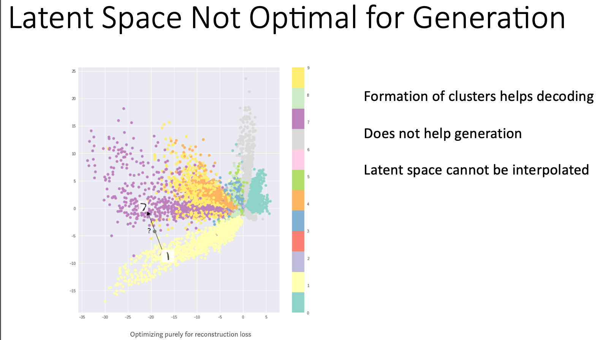
This is the founding idea of the Variational Autoencoder, which makes two modifications to make interpolation within the latent space more meaningful. The first modification is the strangest: instead of encoding points in a latent space, the encoder creates a gaussian probability distribution around the encoded point, with a mean and squared variance unique to each point. The decoder is then passed a random sample from this distribution. This encourages similar points in the latent space to correspond to similar outputs, since the decoder only gets to choose a point close to the encoded original.
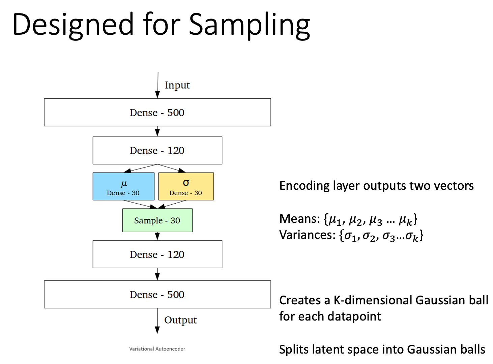
If the first of these regularizations encourages similar latent representations within clusters, the second enforces proximity between clusters. This is achieved with the Kullback Leibler (KL) divergence, which tabulates the dissimilarity of the previously generated gaussian with a standard normal distribution; measuring, in effect, how much the varaince and mean differ from a variance of one and mean of zero. This prevents any class of embeddings from drifting too far away from the others. The KL divergence between two normal distributions is given by:
\(D_{KL}[N(\mu,\sigma)||N(0,1)] = (1/2)\sum{1 + log\sigma^2-\mu^2-\sigma^2}\)
where the sum is taken over each dimension in the latent space.
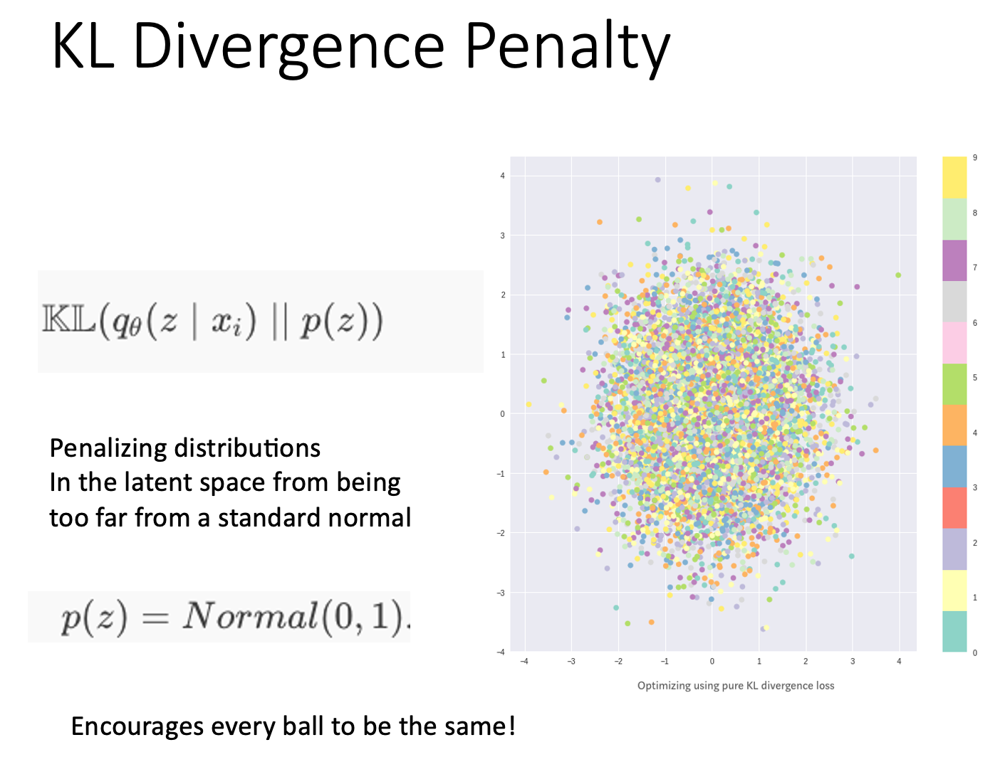 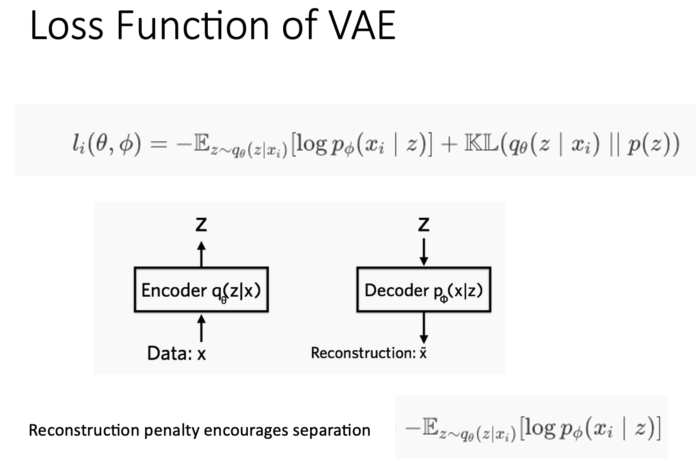 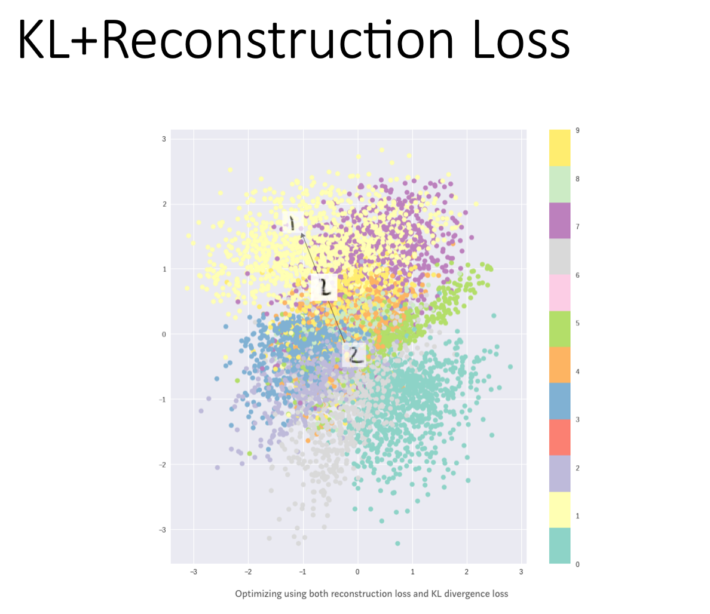
An excellent and highly entertaining introduction to Variational Autoencoders may be found in David Foster’s book, “Generative Deep Learning”. Additionally, the mathematically inclined may enjoy Kingma and Welling’s 2013 paper “Auto-encoding Variational Bayes” (https://arxiv.org/pdf/1312.6114) which first presented the theoretical foundations for the Variational Autoencoder.
[21]:
# Loading the dataset and create dataloaders
mnist_train = datasets.MNIST(root = 'data', train=True, download=True, transform = transforms.ToTensor())
mnist_test = datasets.MNIST(root = 'data', train=False, download=True, transform = transforms.ToTensor())
batch_size = 128
test_loader = torch.utils.data.DataLoader(mnist_test,
batch_size=batch_size,
shuffle=False)
train_loader = torch.utils.data.DataLoader(mnist_train,
batch_size=batch_size,
shuffle=True)
[22]:
'''
Ref: https://github.com/pytorch/examples/blob/master/vae/main.py
'''
import argparse
import torch
import os
import torch.utils.data
from torch import nn, optim
from torch.nn import functional as F
from torchvision import datasets, transforms
from torchvision.utils import save_image
path_to_save = './plots_VAE'
if not os.path.exists(path_to_save):
os.makedirs(path_to_save)
class Args:
batch_size = 128
epochs = 50
seed = 1
no_cuda=False
log_interval=100
args=Args()
args.cuda = not args.no_cuda and torch.cuda.is_available()
torch.manual_seed(args.seed)
device = torch.device("cuda" if args.cuda else "cpu") # Use NVIDIA CUDA GPU if available
kwargs = {'num_workers': 1, 'pin_memory': True} if args.cuda else {}
class VAE(nn.Module):
def __init__(self):
super(VAE, self).__init__()
self.fc1 = nn.Linear(784, 400)
self.fc21 = nn.Linear(400, 20)
self.fc22 = nn.Linear(400, 20)
self.fc3 = nn.Linear(20, 400)
self.fc4 = nn.Linear(400, 784)
def encode(self, x):
h1 = F.relu(self.fc1(x))
return self.fc21(h1), self.fc22(h1)
def reparameterize(self, mu, logvar):
std = torch.exp(0.5*logvar)
eps = torch.randn_like(std)
return mu + eps*std
def decode(self, z):
h3 = F.relu(self.fc3(z))
return torch.sigmoid(self.fc4(h3))
def forward(self, x):
mu, logvar = self.encode(x.view(-1, 784))
z = self.reparameterize(mu, logvar)
return self.decode(z), mu, logvar
model = VAE().to(device)
optimizer = optim.Adam(model.parameters(), lr=1e-4)
# loss_MSE = nn.MSELoss().to(device)
def VAE_loss_function(recon_x, x, mu, logvar):
recon_loss = F.binary_cross_entropy(recon_x, x.view(-1,784), reduction='sum')
# Compute the KLD
KLD = -0.5 * torch.sum(1 + logvar - mu.pow(2) - logvar.exp())
return recon_loss, KLD
def train(epoch):
model.train()
train_loss = 0
train_KLD=0
train_recon_loss=0
for batch_idx, (data, _) in enumerate(train_loader):
data = data.to(device)
optimizer.zero_grad()
recon_batch, mu, logvar = model(data)
recon_loss, KLD = VAE_loss_function(recon_batch, data, mu, logvar)
loss = recon_loss + KLD
loss.backward()
train_loss += loss.item()
train_KLD += KLD.item()
train_recon_loss += recon_loss.item()
optimizer.step()
if batch_idx % args.log_interval == 0:
print('Train Epoch: {} [{}/{} ({:.0f}%)]\tLoss: {:.6f}'.format(
epoch, batch_idx * len(data), len(train_loader.dataset),
100. * batch_idx / len(train_loader),
loss.item() / len(data)))
# recon_loss.item() / len(data),
# KLD.item() / len(data)))
print('====> Epoch: {} Average loss: {:.6f} (Loss_recon: {:.6f}, Loss_KLD: {:.6f})'.format(
epoch, train_loss / len(train_loader.dataset), train_recon_loss/ len(train_loader.dataset),
train_KLD / len(train_loader.dataset)))
def test(epoch):
model.eval()
test_loss = 0
test_KLD=0
test_recon_loss=0
with torch.no_grad():
for i, (data, _) in enumerate(test_loader):
data = data.to(device)
recon_batch, mu, logvar = model(data)
# test_loss += VAE_loss_function(recon_batch, data, mu, logvar).item()
recon_loss, KLD = VAE_loss_function(recon_batch, data, mu, logvar)
loss = recon_loss + KLD
test_recon_loss += recon_loss.item()
test_KLD += KLD.item()
test_loss += loss.item()
if i == 0:
n = min(data.size(0), 8)
comparison = torch.cat([data[:n],
recon_batch.view(args.batch_size, 1, 28, 28)[:n]])
save_image(comparison.cpu(), './plots_VAE/reconstruction_' + str(epoch) + '.png', nrow=n)
test_loss /= len(test_loader.dataset)
print('====> Test set loss: {:.6f} (Loss_recon: {:.6f}, Loss_KLD: {:.6f})\n'.format(test_loss, test_recon_loss/ len(test_loader.dataset),
test_KLD / len(test_loader.dataset)))
[24]:
if __name__ == "__main__":
for epoch in range(1, args.epochs + 1):
train(epoch)
test(epoch)
with torch.no_grad():
sample = torch.randn(64, 20).to(device)
sample = model.decode(sample).cpu()
save_image(sample.view(64, 1, 28, 28),
'./plots_VAE/sample_' + str(epoch) + '.png')
[17]:
# # Save the model
# torch.save(model.state_dict(), './models/model_VAE.pt')
[25]:
# Load the model
model_VAE = VAE().to(device)
model_VAE.load_state_dict(torch.load('./models/model_VAE.pt',map_location=torch.device('cpu')))
[25]:
<All keys matched successfully>
[27]:
# Load some of the images
from PIL import Image
fig,ax = plt.subplots(2,2,figsize=(15,20),facecolor='w')
ax = ax.ravel()
img0 = np.array(Image.open('./plots_VAE/sample_1.png'))
img10 = np.array(Image.open('./plots_VAE/sample_10.png'))
img25 = np.array(Image.open('./plots_VAE/sample_25.png'))
img50 = np.array(Image.open('./plots_VAE/sample_50.png'))
# img100 = np.array(Image.open('./plots_VAE/sample_40.png'))
# img250 = np.array(Image.open('./plots_VAE/gen_img250.png'))
# img500 = np.array(Image.open('./plots_VAE/gen_img500.png'))
# img750 = np.array(Image.open('./plots_VAE/gen_img750.png'))
# img800 = np.array(Image.open('./plots_VAE/gen_img800.png'))
ax[0].imshow(img0, cmap='gray'); #set colormap as 'gray'
ax[0].set_title("sample_1", fontsize=20);
ax[0].grid(False), ax[0].set_xticks([]), ax[0].set_yticks([])
ax[1].imshow(img10, cmap='gray'); #set colormap as 'gray'
ax[1].set_title("sample_10", fontsize=20);
ax[1].grid(False), ax[1].set_xticks([]), ax[1].set_yticks([])
ax[2].imshow(img25, cmap='gray'); #set colormap as 'gray'
ax[2].set_title("sample_25", fontsize=20);
ax[2].grid(False), ax[2].set_xticks([]), ax[2].set_yticks([])
ax[3].imshow(img50, cmap='gray'); #set colormap as 'gray'
ax[3].set_title("sample_50", fontsize=20);
ax[3].grid(False), ax[3].set_xticks([]), ax[3].set_yticks([]);
[28]:
# Visualize the 2D space
# Should we use PCA to embeded the 20D to 2D?
import matplotlib
from sklearn.decomposition import PCA
matplotlib.style.use('default')
large_batch = torch.utils.data.DataLoader(mnist_test,
batch_size=60000,
shuffle=False)
with torch.no_grad():
model_VAE.eval()
data, targets = next(iter(large_batch))
targets = targets.numpy()
data = data.to(device)
recon_batch, mu, logvar = model_VAE(data)
#Reduce dimensions to 2D
pca = PCA(n_components=2)
latentVar = pca.fit_transform(mu.cpu().numpy())
fig,ax = plt.subplots(1,1,figsize=(10,10))
plt.scatter(latentVar[:,0],latentVar[:,1],c=targets[:], alpha=0.5)
print('targets[:20]: {}'.format(targets[:20]))
print('latentVar[:20]: {}'.format(latentVar[:20]))
plt.colorbar(ticks=range(26))
n_points=100
for x,y,i in zip(latentVar[:n_points,0],latentVar[:n_points,1],range(n_points)):
label = targets[i]
plt.annotate(label, # this is the text
(x,y), # this is the point to label
textcoords="offset points", # how to position the text
c='r',
xytext=(0,0), # distance from text to points (x,y)
ha='center') # horizontal alignment can be left, right or center
# Get the first two points of latentVar
x0,y0 = latentVar[0,0],latentVar[0,1]
x1,y1 = latentVar[1,0],latentVar[1,1]
xvals = np.array(np.linspace(x0, x1, 10))
yvals = np.array(np.linspace(y0, y1, 10))
print('x0,y0: {},{}'.format(x0,y0))
print('x1,y1: {},{}'.format(x1,y1))
print('xvals: {}'.format(xvals))
print('yvals: {}'.format(yvals))
plt.plot(xvals[:],yvals[:],c='r',marker='*')
targets[:20]: [7 2 1 0 4 1 4 9 5 9 0 6 9 0 1 5 9 7 3 4]
latentVar[:20]: [[ 0.26706883 -1.9736019 ]
[-1.8611817 1.8440641 ]
[-2.5281484 -1.0331651 ]
[ 1.4196528 1.3110398 ]
[ 1.4876976 0.21686505]
[-2.5829864 -1.5002542 ]
[ 0.29228047 -0.887662 ]
[ 0.30350858 -0.6865011 ]
[ 1.3719988 0.20367995]
[ 1.4738213 -1.3410944 ]
[ 0.83528453 2.032341 ]
[ 0.15110765 0.95467454]
[ 2.0726109 -2.5019965 ]
[ 1.7359124 1.2086135 ]
[-2.1024263 -0.9454553 ]
[-0.84691584 1.5131922 ]
[ 1.9012048 -0.801138 ]
[ 0.5894465 -1.1062578 ]
[-0.8419465 0.6534402 ]
[ 0.93832934 -1.0562824 ]]
x0,y0: 0.2670688331127167,-1.9736019372940063
x1,y1: -1.8611817359924316,1.8440641164779663
xvals: [ 0.26706883 0.03059655 -0.20587574 -0.44234802 -0.67882031 -0.91529259
-1.15176488 -1.38823717 -1.62470945 -1.86118174]
yvals: [-1.97360194 -1.54941682 -1.1252317 -0.70104659 -0.27686147 0.14732365
0.57150877 0.99569388 1.419879 1.84406412]
[29]:
# ## Visualizing the embedding using different algorithms
# # reducer = phate.PHATE(n_components=2, random_state=1, knn=5, t=2)#, n_neighbors=8)
# reducer = umap.UMAP(n_components=2)
# # reducer = PCA(n_components=2,random_state=np.random.RandomState(42))
# with torch.no_grad():
# model_VAE.eval()
# data, targets = next(iter(large_batch))
# targets = targets.numpy()
# data = data.to(device)
# recon_batch, mu, logvar = model_VAE(data)
# #Reduce dimensions to 2D
# latentVar = reducer.fit_transform(mu.cpu().numpy())
# fig,ax = plt.subplots(1,1,figsize=(10,10))
# plt.scatter(latentVar[:,0],latentVar[:,1],c=targets[:], alpha=0.5)
# print('targets[:20]: {}'.format(targets[:20]))
# print('latentVar[:20]: {}'.format(latentVar[:20]))
# plt.colorbar(ticks=range(26))
# n_points=100
# for x,y,i in zip(latentVar[:n_points,0],latentVar[:n_points,1],range(n_points)):
# label = targets[i]
# plt.annotate(label, # this is the text
# (x,y), # this is the point to label
# textcoords="offset points", # how to position the text
# c='r',
# xytext=(0,0), # distance from text to points (x,y)
# ha='center') # horizontal alignment can be left, right or center
# # Get the first two points of latentVar
# x0,y0 = latentVar[0,0],latentVar[0,1]
# x1,y1 = latentVar[1,0],latentVar[1,1]
# xvals = np.array(np.linspace(x0, x1, 10))
# yvals = np.array(np.linspace(y0, y1, 10))
# print('x0,y0: {},{}'.format(x0,y0))
# print('x1,y1: {},{}'.format(x1,y1))
# print('xvals: {}'.format(xvals))
# print('yvals: {}'.format(yvals))
# plt.plot(xvals[:],yvals[:],c='r',marker='*')
[30]:
print(logvar.max())
print(logvar.mean())
print(logvar.min())
print(logvar.shape)
print(mu.shape)
tensor(-0.4241)
tensor(-2.4555)
tensor(-4.5016)
torch.Size([10000, 20])
torch.Size([10000, 20])
[31]:
class VAE_decoder(nn.Module):
def __init__(self):
super(VAE_decoder, self).__init__()
self.fc1 = model_VAE.fc1
self.fc21 = model_VAE.fc21
self.fc22 = model_VAE.fc22
self.fc3 = model_VAE.fc3
self.fc4 = model_VAE.fc4
def reparameterize(self, mu, logvar):
std = torch.exp(0.5*logvar)
eps = torch.randn_like(std)
return mu + eps*std
def decode(self, z):
h3 = F.relu(self.fc3(z))
return torch.sigmoid(self.fc4(h3))
def forward(self, mu):
# mu, logvar = self.encode(x.view(-1, 784))
logvar=torch.ones_like(mu) * -2.5
z = self.reparameterize(mu, logvar)
print('z.shape: {}'.format(z.shape))
return self.decode(z)
[32]:
with torch.no_grad():
model = VAE_decoder()
fig,ax = plt.subplots(1,10,figsize=(20,3))
ax = ax.ravel()
count=0
for (x,y) in zip(xvals,yvals):
model_input = np.array([x,y])
model_input = pca.inverse_transform(model_input) #Take it back to 20D
model_input = torch.from_numpy(model_input).float()
# print('model_input: {}'.format(model_input))
out = model(model_input.to(device))
out = out.cpu().numpy()
ax[count].imshow(out.reshape(28,28))
ax[count].set_xticks([])
ax[count].set_yticks([])
count+=1
fig.tight_layout()
z.shape: torch.Size([20])
z.shape: torch.Size([20])
z.shape: torch.Size([20])
z.shape: torch.Size([20])
z.shape: torch.Size([20])
z.shape: torch.Size([20])
z.shape: torch.Size([20])
z.shape: torch.Size([20])
z.shape: torch.Size([20])
z.shape: torch.Size([20])
[33]:
# Redo for digits in the same class
with torch.no_grad():
model_VAE.eval()
data, targets = next(iter(large_batch))
targets = targets.numpy()
idx_ = np.where(targets==1)[0] # Get two '6'.
print(idx_[:2])
data = data.to(device)
recon_batch, mu, logvar = model_VAE(data)
#Reduce dimensions to 2D
pca = PCA(n_components=2)
latentVar = pca.fit_transform(mu.cpu().numpy())
fig,ax = plt.subplots(1,1,figsize=(10,10))
plt.scatter(latentVar[:,0],latentVar[:,1],c=targets[:], alpha=0.5)
print('targets[:20]: {}'.format(targets[:20]))
print('latentVar[:20]: {}'.format(latentVar[:20]))
plt.colorbar(ticks=range(26))
n_points=100
for x,y,i in zip(latentVar[:n_points,0],latentVar[:n_points,1],range(n_points)):
label = targets[i]
plt.annotate(label, # this is the text
(x,y), # this is the point to label
textcoords="offset points", # how to position the text
c='r',
xytext=(0,0), # distance from text to points (x,y)
ha='center') # horizontal alignment can be left, right or center
# Get the first two points of latentVar
x0,y0 = latentVar[idx_[0],0],latentVar[idx_[0],1]
x1,y1 = latentVar[idx_[1],0],latentVar[idx_[1],1]
xvals = np.array(np.linspace(x0, x1, 10))
yvals = np.array(np.linspace(y0, y1, 10))
print('x0,y0: {},{}'.format(x0,y0))
print('x1,y1: {},{}'.format(x1,y1))
print('xvals: {}'.format(xvals))
print('yvals: {}'.format(yvals))
plt.plot(xvals[:],yvals[:],c='r',marker='*')
model = VAE_decoder()
fig,ax = plt.subplots(1,10,figsize=(20,3))
ax = ax.ravel()
count=0
for (x,y) in zip(xvals,yvals):
model_input = np.array([x,y])
model_input = pca.inverse_transform(model_input) #Take it back to 20D
model_input = torch.from_numpy(model_input).float()
# print('model_input: {}'.format(model_input))
out = model(model_input.to(device))
out = out.cpu().numpy()
ax[count].imshow(out.reshape(28,28))
ax[count].set_xticks([])
ax[count].set_yticks([])
count+=1
ax[0].set_title('Digit: 8')
ax[9].set_title('Digit: 1')
fig.tight_layout()
[2 5]
targets[:20]: [7 2 1 0 4 1 4 9 5 9 0 6 9 0 1 5 9 7 3 4]
latentVar[:20]: [[ 0.4045419 -2.033641 ]
[-1.7656242 1.7947903 ]
[-2.4364967 -1.1195807 ]
[ 1.4608481 1.354135 ]
[ 1.4224052 0.25367513]
[-2.459871 -1.6010041 ]
[ 0.2546648 -0.7847284 ]
[ 0.20147283 -0.7330895 ]
[ 1.6117115 0.11941535]
[ 1.6162555 -1.352225 ]
[ 0.727913 2.0899346 ]
[ 0.0062574 1.0858725 ]
[ 2.0874546 -2.4241602 ]
[ 1.6282545 1.2073023 ]
[-2.029297 -0.9550152 ]
[-1.0435832 1.5274566 ]
[ 1.8745112 -0.7466577 ]
[ 0.6685767 -1.2008247 ]
[-0.81140006 0.52554303]
[ 0.83150834 -0.9141133 ]]
x0,y0: -2.4364967346191406,-1.1195807456970215
x1,y1: -2.4598710536956787,-1.6010041236877441
xvals: [-2.43649673 -2.43909388 -2.44169103 -2.44428817 -2.44688532 -2.44948247
-2.45207961 -2.45467676 -2.45727391 -2.45987105]
yvals: [-1.11958075 -1.17307223 -1.22656372 -1.28005521 -1.33354669 -1.38703818
-1.44052966 -1.49402115 -1.54751264 -1.60100412]
z.shape: torch.Size([20])
z.shape: torch.Size([20])
z.shape: torch.Size([20])
z.shape: torch.Size([20])
z.shape: torch.Size([20])
z.shape: torch.Size([20])
z.shape: torch.Size([20])
z.shape: torch.Size([20])
z.shape: torch.Size([20])
z.shape: torch.Size([20])
Question 3.1.1.¶
How does the VAE’s latent space compare to the latent space of your previous autoencoder? Do the generated images have more clarity? Is this most noticeable between or within classes?
Question 3.1.2.¶
In what situations would a VAE be more useful than a vanilla autoencoder, and when would you prefer a vanilla autoencoder to a VAE?
Question 3.1.3.¶
The distance between embeddings in your first autoencoder provided some measure of the similarity between digits. To what extent is this preserved, or improved, by the VAE?
Section 3.2 - GANS¶
Whereas the VAE was tweaked to allow small perturbations in the latent space to produce reasonable decodings, the Generative Adversarial Network was designed to generate novel samples. A GAN is really two networks in one: the generator network produces fake images, while the discriminator guesses if they are fake. Initially, both networks perform horribly, but with time (and luck) they force each other to improve until the generator’s images are indistinguishable from the real thing. In this part, you’ll build your own GAN in PyTorch, and test it on the MNIST dataset.
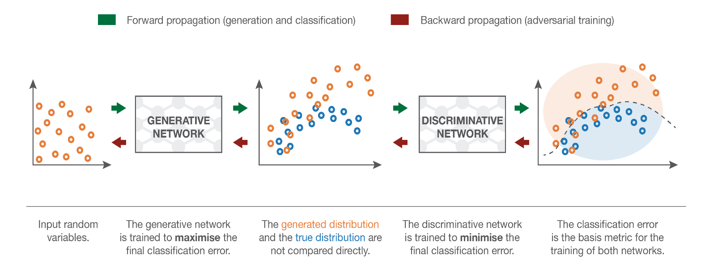 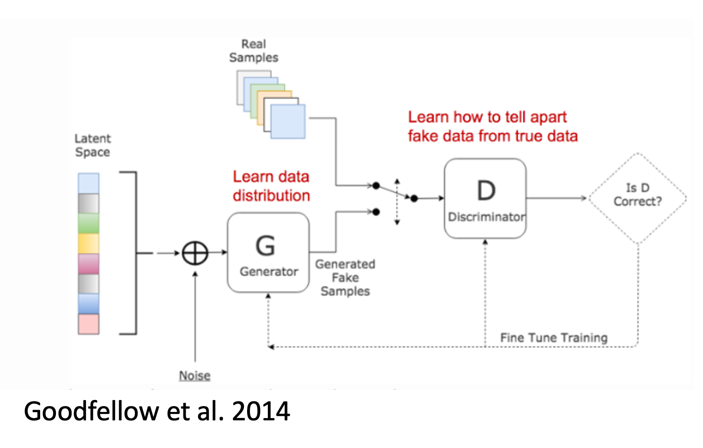 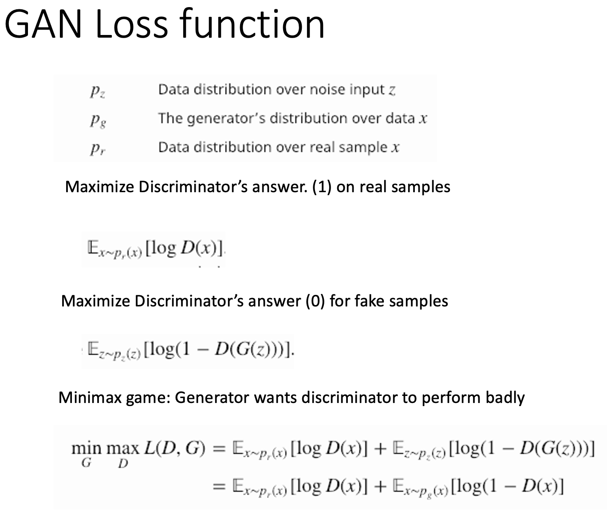
[42]:
import torch
import torch.nn as nn
import torchvision.transforms as transforms
import torch.optim as optim
import torchvision.datasets as datasets
import imageio
import numpy as np
import matplotlib
from torchvision.utils import make_grid, save_image
from torch.utils.data import DataLoader
from matplotlib import pyplot as plt
from tqdm import tqdm
from torch.autograd import Variable
matplotlib.style.use('default')
import time
class Generator(nn.Module):
def __init__(self, nz):
super(Generator, self).__init__()
self.nz = nz # the dimension of the random noise used to seed the Generator
self.main = nn.Sequential( # nn.sequential is a handy way of combining multiple layers.
nn.Linear(self.nz, 256),
nn.LeakyReLU(0.2),
nn.Linear(256, 512),
nn.LeakyReLU(0.2),
nn.Linear(512, 1024),
nn.LeakyReLU(0.2),
nn.Linear(1024, 784),
nn.Tanh(), # Original: Tanh. Use a sigmoid
)
def forward(self, x):
return self.main(x).view(-1, 1, 28, 28)
class Discriminator(nn.Module):
def __init__(self):
super(Discriminator, self).__init__()
self.n_input = 784
self.main = nn.Sequential(
nn.Linear(self.n_input, 1024),
nn.LeakyReLU(0.2),
nn.Dropout(0.3),
nn.Linear(1024, 512),
nn.LeakyReLU(0.2),
nn.Dropout(0.3),
nn.Linear(512, 256),
nn.LeakyReLU(0.2),
nn.Dropout(0.3),
nn.Linear(256, 1),
nn.Sigmoid(),
)
def forward(self, x):
x = x.view(-1, 784)
return self.main(x)
def train_discriminator(optimizer, real_data, fake_data):
"""
Train the discriminator on a minibatch of data.
INPUTS
:param optimizer: the optimizer used for training
:param real_data: the batch of training data
:param fake_data: the data generated by the generator from random noise
The discriminator will incur two losses: one from trying to classify the real data, and another from classifying the fake data.
TODO: Fill in this function.
It should
1. Run the discriminator on the real_data and the fake_data
2. Compute and sum the respective loss terms (described in the assignment)
3. Backpropogate the loss (e.g. loss.backward()), and perform optimization (e.g. optimizer.step()).
"""
optimizer.zero_grad()
# 1.1 Train on Real Data
prediction_real = discriminator(real_data)
y_real = Variable(torch.ones(prediction_real.shape[0], 1))
D_real_loss = criterion(prediction_real, y_real.to(device))
# 1.2 Train on Fake Data
prediction_fake = discriminator(fake_data)
y_fake = Variable(torch.zeros(prediction_fake.shape[0], 1))
D_fake_loss = criterion(prediction_fake, y_fake.to(device))
D_loss = (D_real_loss + D_fake_loss)/2
D_loss.backward()
optimizer.step()
# we'll return the loss for book-keeping purposes. (E.g. if you want to make plots of the loss.)
return D_loss
def train_generator(optimizer, fake_data):
"""
Performs a single training step on the generator.
:param optimizer: the optimizer
:param fake_data: forgeries, created by the generator from random noise. (Done before calling this function.)
:return: the generator's loss
TODO: Fill in this function
It should
1. Run the discriminator on the fake_data
2. compute the resultant loss for the generator (as described in the assignment)
3. Backpropagate the loss, and perform optimization
"""
optimizer.zero_grad()
prediction = discriminator(fake_data)
y = Variable(torch.ones(prediction.shape[0], 1))
G_loss = criterion(prediction, y.to(device))
G_loss.backward()
optimizer.step()
return G_loss/2
[36]:
path_to_save = './plots_GANs'
if not os.path.exists(path_to_save):
os.makedirs(path_to_save)
num_epochs = 1000
nz = 100# dimension of random noise
generator = Generator(nz).to(device)
discriminator = Discriminator().to(device)
criterion = nn.BCELoss().to(device)
# Optimizers (notice the use of 'discriminator'<-Object class)
d_optimizer = optim.Adam(discriminator.parameters(), lr=0.0002)
g_optimizer = optim.Adam(generator.parameters(), lr=0.0002) # 1: 3e-4; 2: 1e-5
[45]:
# For each epoch, you'll
# 1. Loop through the training data. For each batch, feed random noise into the generator to generate fake_data of the corresponding size.
# 2. Feed the fake data and real data into the train_discriminator and train_generator functions
# At the end of each epoch, use the below functions to save a grid of generated images.
for epoch in range(num_epochs):
train_loss = 0
train_d_error = 0
train_g_error = 0
for batch_idx, (data, _) in enumerate(train_loader):
# 1. Train Discriminator
real_data = Variable(data).to(device)
# Generate fake data
z = Variable(torch.FloatTensor(np.random.normal(0, 1, (data.shape[0], nz)))).to(device)
fake_data = generator(z).detach() # Because we don't want the generator being trained while the discriminator is being trained
# Train D
d_error = train_discriminator(d_optimizer, real_data, fake_data).item()#, discriminator, criterion)
# 2. Train Generator
# Generate fake data
z = Variable(torch.FloatTensor(np.random.normal(0, 1, (data.shape[0], nz)))).to(device)
generated_img = generator(z)
# Train G
g_error = train_generator(g_optimizer, generated_img).item()
train_loss += d_error + g_error
train_d_error += d_error
train_g_error += g_error
print('====> Epoch: {} Average loss: {:.6f} (D_error: {:.6f}, G_error: {:.6f})'.format(
epoch, train_loss / len(train_loader.dataset), train_d_error/ len(train_loader.dataset),
train_g_error / len(train_loader.dataset)))
# if epoch == 100:
# torch.save(generator.state_dict(), './models/generator_100epochs.pt')
# torch.save(discriminator.state_dict(), './models/discriminator_100epochs.pt')
# reshape the image tensors into a grid
generated_img = make_grid(generated_img)
# save the generated torch tensor images
save_image(generated_img, f"./plots_GANs/gen_img{epoch}.png")
====> Epoch: 0 Average loss: 0.009112 (D_error: 0.005233, G_error: 0.003878)
====> Epoch: 1 Average loss: 0.011252 (D_error: 0.004452, G_error: 0.006800)
====> Epoch: 2 Average loss: 0.016729 (D_error: 0.004336, G_error: 0.012393)
====> Epoch: 3 Average loss: 0.013045 (D_error: 0.003964, G_error: 0.009081)
====> Epoch: 4 Average loss: 0.012556 (D_error: 0.003082, G_error: 0.009474)
====> Epoch: 5 Average loss: 0.012022 (D_error: 0.002859, G_error: 0.009164)
====> Epoch: 6 Average loss: 0.011667 (D_error: 0.002569, G_error: 0.009097)
====> Epoch: 7 Average loss: 0.012540 (D_error: 0.003023, G_error: 0.009517)
====> Epoch: 8 Average loss: 0.011756 (D_error: 0.002783, G_error: 0.008973)
====> Epoch: 9 Average loss: 0.011427 (D_error: 0.002824, G_error: 0.008603)
====> Epoch: 10 Average loss: 0.011226 (D_error: 0.002858, G_error: 0.008368)
====> Epoch: 11 Average loss: 0.011279 (D_error: 0.002739, G_error: 0.008540)
====> Epoch: 12 Average loss: 0.011694 (D_error: 0.002860, G_error: 0.008834)
====> Epoch: 13 Average loss: 0.012288 (D_error: 0.002805, G_error: 0.009483)
====> Epoch: 14 Average loss: 0.012043 (D_error: 0.002977, G_error: 0.009066)
====> Epoch: 15 Average loss: 0.011299 (D_error: 0.002731, G_error: 0.008568)
====> Epoch: 16 Average loss: 0.010944 (D_error: 0.002850, G_error: 0.008095)
====> Epoch: 17 Average loss: 0.010834 (D_error: 0.002759, G_error: 0.008074)
====> Epoch: 18 Average loss: 0.010840 (D_error: 0.002983, G_error: 0.007857)
====> Epoch: 19 Average loss: 0.011458 (D_error: 0.002909, G_error: 0.008549)
====> Epoch: 20 Average loss: 0.012937 (D_error: 0.003202, G_error: 0.009735)
====> Epoch: 21 Average loss: 0.011743 (D_error: 0.002804, G_error: 0.008939)
====> Epoch: 22 Average loss: 0.011122 (D_error: 0.002759, G_error: 0.008364)
====> Epoch: 23 Average loss: 0.010848 (D_error: 0.002680, G_error: 0.008168)
====> Epoch: 24 Average loss: 0.011261 (D_error: 0.002618, G_error: 0.008642)
====> Epoch: 25 Average loss: 0.011152 (D_error: 0.002671, G_error: 0.008482)
====> Epoch: 26 Average loss: 0.010925 (D_error: 0.002673, G_error: 0.008252)
====> Epoch: 27 Average loss: 0.011445 (D_error: 0.002541, G_error: 0.008903)
====> Epoch: 28 Average loss: 0.012191 (D_error: 0.002650, G_error: 0.009541)
====> Epoch: 29 Average loss: 0.012264 (D_error: 0.002669, G_error: 0.009595)
====> Epoch: 30 Average loss: 0.012541 (D_error: 0.002559, G_error: 0.009982)
====> Epoch: 31 Average loss: 0.011871 (D_error: 0.002520, G_error: 0.009351)
====> Epoch: 32 Average loss: 0.011711 (D_error: 0.002538, G_error: 0.009173)
====> Epoch: 33 Average loss: 0.011661 (D_error: 0.002421, G_error: 0.009240)
====> Epoch: 34 Average loss: 0.011732 (D_error: 0.002540, G_error: 0.009192)
====> Epoch: 35 Average loss: 0.011645 (D_error: 0.002627, G_error: 0.009018)
====> Epoch: 36 Average loss: 0.011363 (D_error: 0.002604, G_error: 0.008759)
====> Epoch: 37 Average loss: 0.011924 (D_error: 0.002564, G_error: 0.009360)
====> Epoch: 38 Average loss: 0.011954 (D_error: 0.002563, G_error: 0.009392)
====> Epoch: 39 Average loss: 0.011776 (D_error: 0.002527, G_error: 0.009248)
====> Epoch: 40 Average loss: 0.011560 (D_error: 0.002481, G_error: 0.009079)
====> Epoch: 41 Average loss: 0.011478 (D_error: 0.002448, G_error: 0.009030)
====> Epoch: 42 Average loss: 0.011517 (D_error: 0.002457, G_error: 0.009060)
====> Epoch: 43 Average loss: 0.012042 (D_error: 0.002379, G_error: 0.009663)
====> Epoch: 44 Average loss: 0.012851 (D_error: 0.002175, G_error: 0.010675)
====> Epoch: 45 Average loss: 0.012954 (D_error: 0.002152, G_error: 0.010802)
====> Epoch: 46 Average loss: 0.012342 (D_error: 0.002193, G_error: 0.010149)
====> Epoch: 47 Average loss: 0.012484 (D_error: 0.002040, G_error: 0.010444)
====> Epoch: 48 Average loss: 0.013092 (D_error: 0.002028, G_error: 0.011064)
====> Epoch: 49 Average loss: 0.013174 (D_error: 0.001903, G_error: 0.011270)
====> Epoch: 50 Average loss: 0.013456 (D_error: 0.001871, G_error: 0.011586)
====> Epoch: 51 Average loss: 0.013044 (D_error: 0.001979, G_error: 0.011065)
====> Epoch: 52 Average loss: 0.013525 (D_error: 0.001852, G_error: 0.011672)
====> Epoch: 53 Average loss: 0.013525 (D_error: 0.001875, G_error: 0.011650)
====> Epoch: 54 Average loss: 0.013212 (D_error: 0.001817, G_error: 0.011395)
====> Epoch: 55 Average loss: 0.013245 (D_error: 0.001821, G_error: 0.011425)
====> Epoch: 56 Average loss: 0.013492 (D_error: 0.001801, G_error: 0.011691)
====> Epoch: 57 Average loss: 0.013587 (D_error: 0.001761, G_error: 0.011826)
====> Epoch: 58 Average loss: 0.013946 (D_error: 0.001675, G_error: 0.012272)
====> Epoch: 59 Average loss: 0.014265 (D_error: 0.001521, G_error: 0.012744)
====> Epoch: 60 Average loss: 0.014652 (D_error: 0.001627, G_error: 0.013025)
====> Epoch: 61 Average loss: 0.014539 (D_error: 0.001506, G_error: 0.013033)
====> Epoch: 62 Average loss: 0.014445 (D_error: 0.001540, G_error: 0.012905)
====> Epoch: 63 Average loss: 0.014385 (D_error: 0.001506, G_error: 0.012879)
====> Epoch: 64 Average loss: 0.014808 (D_error: 0.001486, G_error: 0.013322)
====> Epoch: 65 Average loss: 0.014533 (D_error: 0.001507, G_error: 0.013026)
====> Epoch: 66 Average loss: 0.014668 (D_error: 0.001443, G_error: 0.013226)
====> Epoch: 67 Average loss: 0.014753 (D_error: 0.001462, G_error: 0.013291)
====> Epoch: 68 Average loss: 0.014728 (D_error: 0.001522, G_error: 0.013206)
====> Epoch: 69 Average loss: 0.015186 (D_error: 0.001461, G_error: 0.013725)
====> Epoch: 70 Average loss: 0.014812 (D_error: 0.001473, G_error: 0.013340)
====> Epoch: 71 Average loss: 0.015048 (D_error: 0.001436, G_error: 0.013612)
====> Epoch: 72 Average loss: 0.015458 (D_error: 0.001345, G_error: 0.014113)
====> Epoch: 73 Average loss: 0.015654 (D_error: 0.001328, G_error: 0.014327)
====> Epoch: 74 Average loss: 0.015795 (D_error: 0.001309, G_error: 0.014486)
====> Epoch: 75 Average loss: 0.015665 (D_error: 0.001308, G_error: 0.014357)
====> Epoch: 76 Average loss: 0.015843 (D_error: 0.001342, G_error: 0.014500)
====> Epoch: 77 Average loss: 0.015952 (D_error: 0.001293, G_error: 0.014660)
====> Epoch: 78 Average loss: 0.015914 (D_error: 0.001269, G_error: 0.014644)
====> Epoch: 79 Average loss: 0.016237 (D_error: 0.001226, G_error: 0.015011)
====> Epoch: 80 Average loss: 0.016566 (D_error: 0.001248, G_error: 0.015318)
====> Epoch: 81 Average loss: 0.016607 (D_error: 0.001260, G_error: 0.015347)
====> Epoch: 82 Average loss: 0.016465 (D_error: 0.001172, G_error: 0.015293)
====> Epoch: 83 Average loss: 0.016949 (D_error: 0.001194, G_error: 0.015755)
====> Epoch: 84 Average loss: 0.016940 (D_error: 0.001156, G_error: 0.015784)
====> Epoch: 85 Average loss: 0.016884 (D_error: 0.001140, G_error: 0.015743)
====> Epoch: 86 Average loss: 0.017056 (D_error: 0.001098, G_error: 0.015959)
====> Epoch: 87 Average loss: 0.017155 (D_error: 0.001112, G_error: 0.016043)
====> Epoch: 88 Average loss: 0.017173 (D_error: 0.001101, G_error: 0.016071)
====> Epoch: 89 Average loss: 0.017179 (D_error: 0.001102, G_error: 0.016077)
====> Epoch: 90 Average loss: 0.016958 (D_error: 0.001089, G_error: 0.015869)
====> Epoch: 91 Average loss: 0.017053 (D_error: 0.001102, G_error: 0.015952)
====> Epoch: 92 Average loss: 0.017441 (D_error: 0.001068, G_error: 0.016373)
====> Epoch: 93 Average loss: 0.017577 (D_error: 0.001114, G_error: 0.016463)
====> Epoch: 94 Average loss: 0.017384 (D_error: 0.001056, G_error: 0.016328)
====> Epoch: 95 Average loss: 0.017796 (D_error: 0.001058, G_error: 0.016738)
====> Epoch: 96 Average loss: 0.017723 (D_error: 0.001064, G_error: 0.016659)
====> Epoch: 97 Average loss: 0.017897 (D_error: 0.001017, G_error: 0.016880)
====> Epoch: 98 Average loss: 0.017764 (D_error: 0.001019, G_error: 0.016745)
====> Epoch: 99 Average loss: 0.017495 (D_error: 0.001073, G_error: 0.016422)
====> Epoch: 100 Average loss: 0.017784 (D_error: 0.001026, G_error: 0.016758)
====> Epoch: 101 Average loss: 0.018088 (D_error: 0.001039, G_error: 0.017049)
====> Epoch: 102 Average loss: 0.017699 (D_error: 0.001063, G_error: 0.016637)
====> Epoch: 103 Average loss: 0.017511 (D_error: 0.001040, G_error: 0.016472)
====> Epoch: 104 Average loss: 0.018074 (D_error: 0.001026, G_error: 0.017048)
====> Epoch: 105 Average loss: 0.017617 (D_error: 0.001044, G_error: 0.016573)
====> Epoch: 106 Average loss: 0.018061 (D_error: 0.001004, G_error: 0.017057)
====> Epoch: 107 Average loss: 0.017484 (D_error: 0.001044, G_error: 0.016440)
====> Epoch: 108 Average loss: 0.018194 (D_error: 0.001112, G_error: 0.017082)
====> Epoch: 109 Average loss: 0.017651 (D_error: 0.001020, G_error: 0.016631)
====> Epoch: 110 Average loss: 0.018023 (D_error: 0.001002, G_error: 0.017021)
====> Epoch: 111 Average loss: 0.018217 (D_error: 0.000966, G_error: 0.017252)
====> Epoch: 112 Average loss: 0.018138 (D_error: 0.000990, G_error: 0.017148)
====> Epoch: 113 Average loss: 0.017834 (D_error: 0.001016, G_error: 0.016818)
====> Epoch: 114 Average loss: 0.017741 (D_error: 0.001058, G_error: 0.016683)
====> Epoch: 115 Average loss: 0.017715 (D_error: 0.001004, G_error: 0.016711)
====> Epoch: 116 Average loss: 0.018108 (D_error: 0.001013, G_error: 0.017095)
====> Epoch: 117 Average loss: 0.018262 (D_error: 0.001062, G_error: 0.017200)
====> Epoch: 118 Average loss: 0.018157 (D_error: 0.001024, G_error: 0.017133)
====> Epoch: 119 Average loss: 0.018061 (D_error: 0.001019, G_error: 0.017042)
====> Epoch: 120 Average loss: 0.017999 (D_error: 0.000985, G_error: 0.017014)
====> Epoch: 121 Average loss: 0.018171 (D_error: 0.000986, G_error: 0.017185)
====> Epoch: 122 Average loss: 0.018332 (D_error: 0.001029, G_error: 0.017302)
====> Epoch: 123 Average loss: 0.017983 (D_error: 0.001024, G_error: 0.016959)
====> Epoch: 124 Average loss: 0.018170 (D_error: 0.001000, G_error: 0.017170)
====> Epoch: 125 Average loss: 0.018097 (D_error: 0.000997, G_error: 0.017100)
====> Epoch: 126 Average loss: 0.018026 (D_error: 0.001057, G_error: 0.016969)
====> Epoch: 127 Average loss: 0.018347 (D_error: 0.001038, G_error: 0.017309)
====> Epoch: 128 Average loss: 0.018174 (D_error: 0.001000, G_error: 0.017174)
====> Epoch: 129 Average loss: 0.017822 (D_error: 0.000997, G_error: 0.016826)
====> Epoch: 130 Average loss: 0.017821 (D_error: 0.000979, G_error: 0.016842)
====> Epoch: 131 Average loss: 0.018226 (D_error: 0.001065, G_error: 0.017160)
====> Epoch: 132 Average loss: 0.017687 (D_error: 0.001032, G_error: 0.016655)
====> Epoch: 133 Average loss: 0.017993 (D_error: 0.000984, G_error: 0.017008)
====> Epoch: 134 Average loss: 0.018018 (D_error: 0.001004, G_error: 0.017013)
====> Epoch: 135 Average loss: 0.018900 (D_error: 0.000971, G_error: 0.017929)
====> Epoch: 136 Average loss: 0.018362 (D_error: 0.000984, G_error: 0.017378)
====> Epoch: 137 Average loss: 0.018550 (D_error: 0.000976, G_error: 0.017574)
====> Epoch: 138 Average loss: 0.018233 (D_error: 0.000991, G_error: 0.017242)
====> Epoch: 139 Average loss: 0.018189 (D_error: 0.000951, G_error: 0.017238)
====> Epoch: 140 Average loss: 0.017951 (D_error: 0.000990, G_error: 0.016961)
====> Epoch: 141 Average loss: 0.018234 (D_error: 0.001059, G_error: 0.017174)
====> Epoch: 142 Average loss: 0.018046 (D_error: 0.001062, G_error: 0.016983)
====> Epoch: 143 Average loss: 0.017858 (D_error: 0.000990, G_error: 0.016868)
====> Epoch: 144 Average loss: 0.017907 (D_error: 0.001038, G_error: 0.016869)
====> Epoch: 145 Average loss: 0.018020 (D_error: 0.001020, G_error: 0.017000)
====> Epoch: 146 Average loss: 0.018373 (D_error: 0.000989, G_error: 0.017383)
====> Epoch: 147 Average loss: 0.017580 (D_error: 0.000995, G_error: 0.016585)
====> Epoch: 148 Average loss: 0.018428 (D_error: 0.001060, G_error: 0.017369)
====> Epoch: 149 Average loss: 0.017944 (D_error: 0.000997, G_error: 0.016948)
====> Epoch: 150 Average loss: 0.018333 (D_error: 0.000998, G_error: 0.017335)
====> Epoch: 151 Average loss: 0.018717 (D_error: 0.001053, G_error: 0.017665)
====> Epoch: 152 Average loss: 0.017669 (D_error: 0.001059, G_error: 0.016610)
====> Epoch: 153 Average loss: 0.017882 (D_error: 0.001045, G_error: 0.016837)
====> Epoch: 154 Average loss: 0.017780 (D_error: 0.001012, G_error: 0.016767)
====> Epoch: 155 Average loss: 0.018159 (D_error: 0.000991, G_error: 0.017169)
====> Epoch: 156 Average loss: 0.018246 (D_error: 0.000998, G_error: 0.017248)
====> Epoch: 157 Average loss: 0.018200 (D_error: 0.001069, G_error: 0.017131)
====> Epoch: 158 Average loss: 0.018493 (D_error: 0.001030, G_error: 0.017464)
====> Epoch: 159 Average loss: 0.018440 (D_error: 0.001029, G_error: 0.017411)
====> Epoch: 160 Average loss: 0.018309 (D_error: 0.001022, G_error: 0.017288)
====> Epoch: 161 Average loss: 0.017720 (D_error: 0.000995, G_error: 0.016725)
====> Epoch: 162 Average loss: 0.018151 (D_error: 0.001003, G_error: 0.017148)
====> Epoch: 163 Average loss: 0.017964 (D_error: 0.001059, G_error: 0.016905)
====> Epoch: 164 Average loss: 0.017532 (D_error: 0.001039, G_error: 0.016493)
====> Epoch: 165 Average loss: 0.017897 (D_error: 0.001079, G_error: 0.016819)
====> Epoch: 166 Average loss: 0.017851 (D_error: 0.001018, G_error: 0.016833)
====> Epoch: 167 Average loss: 0.017842 (D_error: 0.001033, G_error: 0.016809)
====> Epoch: 168 Average loss: 0.018644 (D_error: 0.001032, G_error: 0.017612)
====> Epoch: 169 Average loss: 0.018260 (D_error: 0.000983, G_error: 0.017277)
====> Epoch: 170 Average loss: 0.017722 (D_error: 0.001107, G_error: 0.016615)
====> Epoch: 171 Average loss: 0.018053 (D_error: 0.001041, G_error: 0.017011)
====> Epoch: 172 Average loss: 0.017790 (D_error: 0.001013, G_error: 0.016777)
====> Epoch: 173 Average loss: 0.018498 (D_error: 0.000984, G_error: 0.017514)
====> Epoch: 174 Average loss: 0.018073 (D_error: 0.001057, G_error: 0.017016)
====> Epoch: 175 Average loss: 0.017807 (D_error: 0.001027, G_error: 0.016779)
====> Epoch: 176 Average loss: 0.017806 (D_error: 0.001072, G_error: 0.016734)
====> Epoch: 177 Average loss: 0.018517 (D_error: 0.000970, G_error: 0.017547)
====> Epoch: 178 Average loss: 0.018171 (D_error: 0.000997, G_error: 0.017175)
====> Epoch: 179 Average loss: 0.017929 (D_error: 0.001048, G_error: 0.016881)
====> Epoch: 180 Average loss: 0.017955 (D_error: 0.001097, G_error: 0.016858)
====> Epoch: 181 Average loss: 0.018304 (D_error: 0.001061, G_error: 0.017243)
====> Epoch: 182 Average loss: 0.017778 (D_error: 0.001041, G_error: 0.016737)
====> Epoch: 183 Average loss: 0.017688 (D_error: 0.001036, G_error: 0.016652)
====> Epoch: 184 Average loss: 0.017846 (D_error: 0.001065, G_error: 0.016781)
====> Epoch: 185 Average loss: 0.017920 (D_error: 0.001108, G_error: 0.016812)
====> Epoch: 186 Average loss: 0.018004 (D_error: 0.001048, G_error: 0.016957)
====> Epoch: 187 Average loss: 0.017944 (D_error: 0.001073, G_error: 0.016871)
====> Epoch: 188 Average loss: 0.017355 (D_error: 0.001093, G_error: 0.016262)
====> Epoch: 189 Average loss: 0.017901 (D_error: 0.001086, G_error: 0.016815)
====> Epoch: 190 Average loss: 0.017511 (D_error: 0.001059, G_error: 0.016452)
====> Epoch: 191 Average loss: 0.017985 (D_error: 0.001154, G_error: 0.016831)
====> Epoch: 192 Average loss: 0.017780 (D_error: 0.001048, G_error: 0.016732)
====> Epoch: 193 Average loss: 0.017622 (D_error: 0.001070, G_error: 0.016552)
====> Epoch: 194 Average loss: 0.017696 (D_error: 0.001064, G_error: 0.016632)
====> Epoch: 195 Average loss: 0.017417 (D_error: 0.001067, G_error: 0.016351)
====> Epoch: 196 Average loss: 0.017242 (D_error: 0.001111, G_error: 0.016131)
====> Epoch: 197 Average loss: 0.017231 (D_error: 0.001124, G_error: 0.016107)
====> Epoch: 198 Average loss: 0.017553 (D_error: 0.001063, G_error: 0.016490)
====> Epoch: 199 Average loss: 0.017563 (D_error: 0.001060, G_error: 0.016503)
====> Epoch: 200 Average loss: 0.017822 (D_error: 0.001096, G_error: 0.016726)
====> Epoch: 201 Average loss: 0.017558 (D_error: 0.001161, G_error: 0.016397)
====> Epoch: 202 Average loss: 0.017061 (D_error: 0.001184, G_error: 0.015877)
====> Epoch: 203 Average loss: 0.017147 (D_error: 0.001083, G_error: 0.016064)
====> Epoch: 204 Average loss: 0.017509 (D_error: 0.001176, G_error: 0.016333)
====> Epoch: 205 Average loss: 0.017155 (D_error: 0.001233, G_error: 0.015922)
====> Epoch: 206 Average loss: 0.016801 (D_error: 0.001159, G_error: 0.015642)
====> Epoch: 207 Average loss: 0.016895 (D_error: 0.001097, G_error: 0.015799)
====> Epoch: 208 Average loss: 0.016882 (D_error: 0.001155, G_error: 0.015726)
====> Epoch: 209 Average loss: 0.017318 (D_error: 0.001147, G_error: 0.016172)
====> Epoch: 210 Average loss: 0.016862 (D_error: 0.001137, G_error: 0.015724)
====> Epoch: 211 Average loss: 0.017346 (D_error: 0.001077, G_error: 0.016269)
====> Epoch: 212 Average loss: 0.017130 (D_error: 0.001149, G_error: 0.015981)
====> Epoch: 213 Average loss: 0.016911 (D_error: 0.001188, G_error: 0.015723)
====> Epoch: 214 Average loss: 0.017228 (D_error: 0.001162, G_error: 0.016065)
====> Epoch: 215 Average loss: 0.017178 (D_error: 0.001199, G_error: 0.015979)
====> Epoch: 216 Average loss: 0.016764 (D_error: 0.001163, G_error: 0.015601)
====> Epoch: 217 Average loss: 0.016852 (D_error: 0.001116, G_error: 0.015736)
====> Epoch: 218 Average loss: 0.017045 (D_error: 0.001155, G_error: 0.015890)
====> Epoch: 219 Average loss: 0.016768 (D_error: 0.001199, G_error: 0.015569)
====> Epoch: 220 Average loss: 0.016737 (D_error: 0.001214, G_error: 0.015524)
====> Epoch: 221 Average loss: 0.016350 (D_error: 0.001173, G_error: 0.015177)
====> Epoch: 222 Average loss: 0.017150 (D_error: 0.001188, G_error: 0.015962)
====> Epoch: 223 Average loss: 0.017012 (D_error: 0.001174, G_error: 0.015838)
====> Epoch: 224 Average loss: 0.016598 (D_error: 0.001194, G_error: 0.015405)
====> Epoch: 225 Average loss: 0.016938 (D_error: 0.001188, G_error: 0.015750)
====> Epoch: 226 Average loss: 0.016965 (D_error: 0.001151, G_error: 0.015814)
====> Epoch: 227 Average loss: 0.016500 (D_error: 0.001196, G_error: 0.015304)
====> Epoch: 228 Average loss: 0.016640 (D_error: 0.001176, G_error: 0.015465)
====> Epoch: 229 Average loss: 0.016735 (D_error: 0.001165, G_error: 0.015570)
====> Epoch: 230 Average loss: 0.016396 (D_error: 0.001177, G_error: 0.015219)
====> Epoch: 231 Average loss: 0.016588 (D_error: 0.001199, G_error: 0.015389)
====> Epoch: 232 Average loss: 0.016171 (D_error: 0.001178, G_error: 0.014993)
====> Epoch: 233 Average loss: 0.016857 (D_error: 0.001184, G_error: 0.015673)
====> Epoch: 234 Average loss: 0.016385 (D_error: 0.001223, G_error: 0.015162)
====> Epoch: 235 Average loss: 0.016281 (D_error: 0.001203, G_error: 0.015078)
====> Epoch: 236 Average loss: 0.016657 (D_error: 0.001229, G_error: 0.015428)
====> Epoch: 237 Average loss: 0.016402 (D_error: 0.001183, G_error: 0.015219)
====> Epoch: 238 Average loss: 0.016270 (D_error: 0.001184, G_error: 0.015087)
====> Epoch: 239 Average loss: 0.016581 (D_error: 0.001357, G_error: 0.015224)
====> Epoch: 240 Average loss: 0.016483 (D_error: 0.001215, G_error: 0.015268)
====> Epoch: 241 Average loss: 0.016505 (D_error: 0.001177, G_error: 0.015328)
====> Epoch: 242 Average loss: 0.016770 (D_error: 0.001177, G_error: 0.015593)
====> Epoch: 243 Average loss: 0.016541 (D_error: 0.001218, G_error: 0.015324)
====> Epoch: 244 Average loss: 0.016170 (D_error: 0.001218, G_error: 0.014953)
====> Epoch: 245 Average loss: 0.016386 (D_error: 0.001240, G_error: 0.015147)
====> Epoch: 246 Average loss: 0.016368 (D_error: 0.001256, G_error: 0.015112)
====> Epoch: 247 Average loss: 0.016179 (D_error: 0.001239, G_error: 0.014940)
====> Epoch: 248 Average loss: 0.016053 (D_error: 0.001268, G_error: 0.014785)
====> Epoch: 249 Average loss: 0.016328 (D_error: 0.001238, G_error: 0.015090)
====> Epoch: 250 Average loss: 0.016136 (D_error: 0.001186, G_error: 0.014950)
====> Epoch: 251 Average loss: 0.015947 (D_error: 0.001270, G_error: 0.014677)
====> Epoch: 252 Average loss: 0.016476 (D_error: 0.001263, G_error: 0.015213)
====> Epoch: 253 Average loss: 0.015914 (D_error: 0.001263, G_error: 0.014651)
====> Epoch: 254 Average loss: 0.016209 (D_error: 0.001244, G_error: 0.014965)
====> Epoch: 255 Average loss: 0.016175 (D_error: 0.001171, G_error: 0.015004)
====> Epoch: 256 Average loss: 0.016128 (D_error: 0.001235, G_error: 0.014893)
====> Epoch: 257 Average loss: 0.016194 (D_error: 0.001287, G_error: 0.014908)
====> Epoch: 258 Average loss: 0.015860 (D_error: 0.001353, G_error: 0.014506)
====> Epoch: 259 Average loss: 0.016071 (D_error: 0.001307, G_error: 0.014764)
====> Epoch: 260 Average loss: 0.015988 (D_error: 0.001271, G_error: 0.014717)
====> Epoch: 261 Average loss: 0.015868 (D_error: 0.001264, G_error: 0.014604)
====> Epoch: 262 Average loss: 0.016019 (D_error: 0.001310, G_error: 0.014710)
====> Epoch: 263 Average loss: 0.016025 (D_error: 0.001268, G_error: 0.014757)
====> Epoch: 264 Average loss: 0.015705 (D_error: 0.001244, G_error: 0.014461)
====> Epoch: 265 Average loss: 0.016080 (D_error: 0.001312, G_error: 0.014768)
====> Epoch: 266 Average loss: 0.015585 (D_error: 0.001289, G_error: 0.014296)
====> Epoch: 267 Average loss: 0.015792 (D_error: 0.001350, G_error: 0.014441)
====> Epoch: 268 Average loss: 0.015391 (D_error: 0.001279, G_error: 0.014112)
====> Epoch: 269 Average loss: 0.015868 (D_error: 0.001375, G_error: 0.014493)
====> Epoch: 270 Average loss: 0.016020 (D_error: 0.001372, G_error: 0.014648)
====> Epoch: 271 Average loss: 0.015958 (D_error: 0.001264, G_error: 0.014693)
====> Epoch: 272 Average loss: 0.016112 (D_error: 0.001304, G_error: 0.014808)
====> Epoch: 273 Average loss: 0.015959 (D_error: 0.001315, G_error: 0.014644)
====> Epoch: 274 Average loss: 0.015679 (D_error: 0.001366, G_error: 0.014314)
====> Epoch: 275 Average loss: 0.015810 (D_error: 0.001424, G_error: 0.014386)
====> Epoch: 276 Average loss: 0.015403 (D_error: 0.001333, G_error: 0.014070)
====> Epoch: 277 Average loss: 0.015598 (D_error: 0.001320, G_error: 0.014277)
====> Epoch: 278 Average loss: 0.015462 (D_error: 0.001289, G_error: 0.014172)
====> Epoch: 279 Average loss: 0.015748 (D_error: 0.001338, G_error: 0.014410)
====> Epoch: 280 Average loss: 0.015447 (D_error: 0.001395, G_error: 0.014052)
====> Epoch: 281 Average loss: 0.015357 (D_error: 0.001344, G_error: 0.014012)
====> Epoch: 282 Average loss: 0.015365 (D_error: 0.001393, G_error: 0.013972)
====> Epoch: 283 Average loss: 0.015927 (D_error: 0.001402, G_error: 0.014525)
====> Epoch: 284 Average loss: 0.015367 (D_error: 0.001389, G_error: 0.013978)
====> Epoch: 285 Average loss: 0.015229 (D_error: 0.001419, G_error: 0.013810)
====> Epoch: 286 Average loss: 0.015224 (D_error: 0.001409, G_error: 0.013816)
====> Epoch: 287 Average loss: 0.015178 (D_error: 0.001403, G_error: 0.013775)
====> Epoch: 288 Average loss: 0.015372 (D_error: 0.001360, G_error: 0.014012)
====> Epoch: 289 Average loss: 0.015191 (D_error: 0.001384, G_error: 0.013807)
====> Epoch: 290 Average loss: 0.015517 (D_error: 0.001336, G_error: 0.014181)
====> Epoch: 291 Average loss: 0.015122 (D_error: 0.001433, G_error: 0.013689)
====> Epoch: 292 Average loss: 0.015545 (D_error: 0.001395, G_error: 0.014150)
====> Epoch: 293 Average loss: 0.015370 (D_error: 0.001383, G_error: 0.013987)
====> Epoch: 294 Average loss: 0.015584 (D_error: 0.001380, G_error: 0.014204)
====> Epoch: 295 Average loss: 0.015309 (D_error: 0.001356, G_error: 0.013953)
====> Epoch: 296 Average loss: 0.015436 (D_error: 0.001451, G_error: 0.013985)
====> Epoch: 297 Average loss: 0.015418 (D_error: 0.001401, G_error: 0.014017)
====> Epoch: 298 Average loss: 0.015201 (D_error: 0.001447, G_error: 0.013754)
====> Epoch: 299 Average loss: 0.014956 (D_error: 0.001412, G_error: 0.013544)
====> Epoch: 300 Average loss: 0.015159 (D_error: 0.001457, G_error: 0.013702)
====> Epoch: 301 Average loss: 0.015092 (D_error: 0.001473, G_error: 0.013619)
====> Epoch: 302 Average loss: 0.015128 (D_error: 0.001479, G_error: 0.013649)
====> Epoch: 303 Average loss: 0.015223 (D_error: 0.001493, G_error: 0.013730)
====> Epoch: 304 Average loss: 0.015166 (D_error: 0.001415, G_error: 0.013751)
====> Epoch: 305 Average loss: 0.015243 (D_error: 0.001493, G_error: 0.013750)
====> Epoch: 306 Average loss: 0.014879 (D_error: 0.001448, G_error: 0.013431)
====> Epoch: 307 Average loss: 0.014668 (D_error: 0.001417, G_error: 0.013251)
====> Epoch: 308 Average loss: 0.014855 (D_error: 0.001423, G_error: 0.013432)
====> Epoch: 309 Average loss: 0.015383 (D_error: 0.001408, G_error: 0.013974)
====> Epoch: 310 Average loss: 0.015006 (D_error: 0.001357, G_error: 0.013649)
====> Epoch: 311 Average loss: 0.015426 (D_error: 0.001411, G_error: 0.014016)
====> Epoch: 312 Average loss: 0.015688 (D_error: 0.001383, G_error: 0.014306)
====> Epoch: 313 Average loss: 0.014836 (D_error: 0.001448, G_error: 0.013388)
====> Epoch: 314 Average loss: 0.014978 (D_error: 0.001423, G_error: 0.013555)
====> Epoch: 315 Average loss: 0.014942 (D_error: 0.001465, G_error: 0.013478)
====> Epoch: 316 Average loss: 0.015017 (D_error: 0.001480, G_error: 0.013537)
====> Epoch: 317 Average loss: 0.014991 (D_error: 0.001418, G_error: 0.013573)
====> Epoch: 318 Average loss: 0.015105 (D_error: 0.001436, G_error: 0.013669)
====> Epoch: 319 Average loss: 0.014994 (D_error: 0.001417, G_error: 0.013577)
====> Epoch: 320 Average loss: 0.015052 (D_error: 0.001487, G_error: 0.013565)
====> Epoch: 321 Average loss: 0.014928 (D_error: 0.001435, G_error: 0.013492)
====> Epoch: 322 Average loss: 0.014828 (D_error: 0.001418, G_error: 0.013410)
====> Epoch: 323 Average loss: 0.014982 (D_error: 0.001380, G_error: 0.013602)
====> Epoch: 324 Average loss: 0.015062 (D_error: 0.001507, G_error: 0.013556)
====> Epoch: 325 Average loss: 0.014901 (D_error: 0.001509, G_error: 0.013392)
====> Epoch: 326 Average loss: 0.014984 (D_error: 0.001428, G_error: 0.013556)
====> Epoch: 327 Average loss: 0.015089 (D_error: 0.001503, G_error: 0.013587)
====> Epoch: 328 Average loss: 0.014990 (D_error: 0.001411, G_error: 0.013579)
====> Epoch: 329 Average loss: 0.014750 (D_error: 0.001426, G_error: 0.013324)
====> Epoch: 330 Average loss: 0.014836 (D_error: 0.001417, G_error: 0.013419)
====> Epoch: 331 Average loss: 0.015190 (D_error: 0.001452, G_error: 0.013738)
====> Epoch: 332 Average loss: 0.014941 (D_error: 0.001504, G_error: 0.013438)
====> Epoch: 333 Average loss: 0.014728 (D_error: 0.001460, G_error: 0.013268)
====> Epoch: 334 Average loss: 0.015295 (D_error: 0.001499, G_error: 0.013796)
====> Epoch: 335 Average loss: 0.014584 (D_error: 0.001515, G_error: 0.013069)
====> Epoch: 336 Average loss: 0.014439 (D_error: 0.001533, G_error: 0.012905)
====> Epoch: 337 Average loss: 0.014579 (D_error: 0.001510, G_error: 0.013069)
====> Epoch: 338 Average loss: 0.014695 (D_error: 0.001536, G_error: 0.013159)
====> Epoch: 339 Average loss: 0.014522 (D_error: 0.001516, G_error: 0.013006)
====> Epoch: 340 Average loss: 0.014517 (D_error: 0.001499, G_error: 0.013018)
====> Epoch: 341 Average loss: 0.014375 (D_error: 0.001467, G_error: 0.012909)
====> Epoch: 342 Average loss: 0.014443 (D_error: 0.001541, G_error: 0.012902)
====> Epoch: 343 Average loss: 0.014374 (D_error: 0.001564, G_error: 0.012810)
====> Epoch: 344 Average loss: 0.014628 (D_error: 0.001611, G_error: 0.013017)
====> Epoch: 345 Average loss: 0.014329 (D_error: 0.001514, G_error: 0.012815)
====> Epoch: 346 Average loss: 0.014761 (D_error: 0.001496, G_error: 0.013264)
====> Epoch: 347 Average loss: 0.014423 (D_error: 0.001582, G_error: 0.012841)
====> Epoch: 348 Average loss: 0.014474 (D_error: 0.001624, G_error: 0.012850)
====> Epoch: 349 Average loss: 0.014240 (D_error: 0.001524, G_error: 0.012716)
====> Epoch: 350 Average loss: 0.014535 (D_error: 0.001544, G_error: 0.012990)
====> Epoch: 351 Average loss: 0.014521 (D_error: 0.001549, G_error: 0.012972)
====> Epoch: 352 Average loss: 0.014344 (D_error: 0.001592, G_error: 0.012752)
====> Epoch: 353 Average loss: 0.014387 (D_error: 0.001545, G_error: 0.012842)
====> Epoch: 354 Average loss: 0.014202 (D_error: 0.001493, G_error: 0.012708)
====> Epoch: 355 Average loss: 0.014562 (D_error: 0.001534, G_error: 0.013029)
====> Epoch: 356 Average loss: 0.014602 (D_error: 0.001616, G_error: 0.012986)
====> Epoch: 357 Average loss: 0.014454 (D_error: 0.001541, G_error: 0.012913)
====> Epoch: 358 Average loss: 0.014258 (D_error: 0.001549, G_error: 0.012709)
====> Epoch: 359 Average loss: 0.014409 (D_error: 0.001511, G_error: 0.012898)
====> Epoch: 360 Average loss: 0.014557 (D_error: 0.001529, G_error: 0.013029)
====> Epoch: 361 Average loss: 0.014501 (D_error: 0.001598, G_error: 0.012902)
====> Epoch: 362 Average loss: 0.014388 (D_error: 0.001546, G_error: 0.012842)
====> Epoch: 363 Average loss: 0.014590 (D_error: 0.001586, G_error: 0.013004)
====> Epoch: 364 Average loss: 0.014447 (D_error: 0.001545, G_error: 0.012902)
====> Epoch: 365 Average loss: 0.014197 (D_error: 0.001530, G_error: 0.012667)
====> Epoch: 366 Average loss: 0.014313 (D_error: 0.001527, G_error: 0.012787)
====> Epoch: 367 Average loss: 0.014332 (D_error: 0.001579, G_error: 0.012754)
====> Epoch: 368 Average loss: 0.014527 (D_error: 0.001533, G_error: 0.012994)
====> Epoch: 369 Average loss: 0.014434 (D_error: 0.001608, G_error: 0.012826)
====> Epoch: 370 Average loss: 0.014244 (D_error: 0.001568, G_error: 0.012676)
====> Epoch: 371 Average loss: 0.014258 (D_error: 0.001595, G_error: 0.012663)
====> Epoch: 372 Average loss: 0.014149 (D_error: 0.001563, G_error: 0.012587)
====> Epoch: 373 Average loss: 0.014575 (D_error: 0.001645, G_error: 0.012930)
====> Epoch: 374 Average loss: 0.013924 (D_error: 0.001614, G_error: 0.012310)
====> Epoch: 375 Average loss: 0.014026 (D_error: 0.001602, G_error: 0.012424)
====> Epoch: 376 Average loss: 0.014480 (D_error: 0.001564, G_error: 0.012916)
====> Epoch: 377 Average loss: 0.014509 (D_error: 0.001601, G_error: 0.012908)
====> Epoch: 378 Average loss: 0.014110 (D_error: 0.001549, G_error: 0.012560)
====> Epoch: 379 Average loss: 0.014406 (D_error: 0.001603, G_error: 0.012804)
====> Epoch: 380 Average loss: 0.014465 (D_error: 0.001547, G_error: 0.012917)
====> Epoch: 381 Average loss: 0.014178 (D_error: 0.001558, G_error: 0.012620)
====> Epoch: 382 Average loss: 0.014526 (D_error: 0.001520, G_error: 0.013005)
====> Epoch: 383 Average loss: 0.014409 (D_error: 0.001558, G_error: 0.012851)
====> Epoch: 384 Average loss: 0.014226 (D_error: 0.001657, G_error: 0.012569)
====> Epoch: 385 Average loss: 0.014230 (D_error: 0.001590, G_error: 0.012640)
====> Epoch: 386 Average loss: 0.014101 (D_error: 0.001555, G_error: 0.012546)
====> Epoch: 387 Average loss: 0.014285 (D_error: 0.001624, G_error: 0.012661)
====> Epoch: 388 Average loss: 0.014216 (D_error: 0.001589, G_error: 0.012628)
====> Epoch: 389 Average loss: 0.014078 (D_error: 0.001646, G_error: 0.012432)
====> Epoch: 390 Average loss: 0.014209 (D_error: 0.001612, G_error: 0.012597)
====> Epoch: 391 Average loss: 0.014223 (D_error: 0.001546, G_error: 0.012677)
====> Epoch: 392 Average loss: 0.014129 (D_error: 0.001601, G_error: 0.012529)
====> Epoch: 393 Average loss: 0.014173 (D_error: 0.001602, G_error: 0.012571)
====> Epoch: 394 Average loss: 0.014058 (D_error: 0.001660, G_error: 0.012398)
====> Epoch: 395 Average loss: 0.014296 (D_error: 0.001647, G_error: 0.012650)
====> Epoch: 396 Average loss: 0.014177 (D_error: 0.001732, G_error: 0.012446)
====> Epoch: 397 Average loss: 0.013838 (D_error: 0.001646, G_error: 0.012192)
====> Epoch: 398 Average loss: 0.014210 (D_error: 0.001644, G_error: 0.012566)
====> Epoch: 399 Average loss: 0.014097 (D_error: 0.001610, G_error: 0.012487)
====> Epoch: 400 Average loss: 0.014241 (D_error: 0.001632, G_error: 0.012609)
====> Epoch: 401 Average loss: 0.014015 (D_error: 0.001646, G_error: 0.012369)
====> Epoch: 402 Average loss: 0.014387 (D_error: 0.001570, G_error: 0.012817)
====> Epoch: 403 Average loss: 0.014274 (D_error: 0.001607, G_error: 0.012667)
====> Epoch: 404 Average loss: 0.013935 (D_error: 0.001537, G_error: 0.012398)
====> Epoch: 405 Average loss: 0.014065 (D_error: 0.001597, G_error: 0.012468)
====> Epoch: 406 Average loss: 0.014022 (D_error: 0.001703, G_error: 0.012319)
====> Epoch: 407 Average loss: 0.013988 (D_error: 0.001639, G_error: 0.012349)
====> Epoch: 408 Average loss: 0.014017 (D_error: 0.001587, G_error: 0.012429)
====> Epoch: 409 Average loss: 0.014066 (D_error: 0.001616, G_error: 0.012450)
====> Epoch: 410 Average loss: 0.013996 (D_error: 0.001685, G_error: 0.012311)
====> Epoch: 411 Average loss: 0.014050 (D_error: 0.001670, G_error: 0.012380)
====> Epoch: 412 Average loss: 0.013808 (D_error: 0.001638, G_error: 0.012169)
====> Epoch: 413 Average loss: 0.013839 (D_error: 0.001656, G_error: 0.012183)
====> Epoch: 414 Average loss: 0.013976 (D_error: 0.001582, G_error: 0.012394)
====> Epoch: 415 Average loss: 0.013994 (D_error: 0.001665, G_error: 0.012329)
====> Epoch: 416 Average loss: 0.014012 (D_error: 0.001644, G_error: 0.012369)
====> Epoch: 417 Average loss: 0.014007 (D_error: 0.001640, G_error: 0.012367)
====> Epoch: 418 Average loss: 0.014129 (D_error: 0.001676, G_error: 0.012453)
====> Epoch: 419 Average loss: 0.013578 (D_error: 0.001643, G_error: 0.011935)
====> Epoch: 420 Average loss: 0.013978 (D_error: 0.001625, G_error: 0.012353)
====> Epoch: 421 Average loss: 0.013923 (D_error: 0.001605, G_error: 0.012318)
====> Epoch: 422 Average loss: 0.013856 (D_error: 0.001599, G_error: 0.012257)
====> Epoch: 423 Average loss: 0.013854 (D_error: 0.001658, G_error: 0.012196)
====> Epoch: 424 Average loss: 0.013854 (D_error: 0.001606, G_error: 0.012248)
====> Epoch: 425 Average loss: 0.013801 (D_error: 0.001653, G_error: 0.012148)
====> Epoch: 426 Average loss: 0.013836 (D_error: 0.001614, G_error: 0.012222)
====> Epoch: 427 Average loss: 0.013948 (D_error: 0.001604, G_error: 0.012344)
====> Epoch: 428 Average loss: 0.014152 (D_error: 0.001633, G_error: 0.012519)
====> Epoch: 429 Average loss: 0.014050 (D_error: 0.001620, G_error: 0.012430)
====> Epoch: 430 Average loss: 0.013888 (D_error: 0.001638, G_error: 0.012249)
====> Epoch: 431 Average loss: 0.013855 (D_error: 0.001584, G_error: 0.012271)
====> Epoch: 432 Average loss: 0.013797 (D_error: 0.001696, G_error: 0.012102)
====> Epoch: 433 Average loss: 0.013956 (D_error: 0.001640, G_error: 0.012316)
====> Epoch: 434 Average loss: 0.013690 (D_error: 0.001622, G_error: 0.012068)
====> Epoch: 435 Average loss: 0.013930 (D_error: 0.001603, G_error: 0.012327)
====> Epoch: 436 Average loss: 0.013798 (D_error: 0.001607, G_error: 0.012191)
====> Epoch: 437 Average loss: 0.014027 (D_error: 0.001670, G_error: 0.012357)
====> Epoch: 438 Average loss: 0.013797 (D_error: 0.001600, G_error: 0.012197)
====> Epoch: 439 Average loss: 0.013830 (D_error: 0.001630, G_error: 0.012200)
====> Epoch: 440 Average loss: 0.013873 (D_error: 0.001650, G_error: 0.012224)
====> Epoch: 441 Average loss: 0.013973 (D_error: 0.001636, G_error: 0.012337)
====> Epoch: 442 Average loss: 0.013823 (D_error: 0.001668, G_error: 0.012156)
====> Epoch: 443 Average loss: 0.013736 (D_error: 0.001628, G_error: 0.012108)
====> Epoch: 444 Average loss: 0.013915 (D_error: 0.001590, G_error: 0.012325)
====> Epoch: 445 Average loss: 0.013827 (D_error: 0.001645, G_error: 0.012182)
====> Epoch: 446 Average loss: 0.013795 (D_error: 0.001619, G_error: 0.012176)
====> Epoch: 447 Average loss: 0.013879 (D_error: 0.001663, G_error: 0.012216)
====> Epoch: 448 Average loss: 0.013891 (D_error: 0.001733, G_error: 0.012158)
====> Epoch: 449 Average loss: 0.013862 (D_error: 0.001665, G_error: 0.012197)
====> Epoch: 450 Average loss: 0.013562 (D_error: 0.001656, G_error: 0.011906)
====> Epoch: 451 Average loss: 0.013881 (D_error: 0.001623, G_error: 0.012258)
====> Epoch: 452 Average loss: 0.013728 (D_error: 0.001621, G_error: 0.012107)
====> Epoch: 453 Average loss: 0.013858 (D_error: 0.001703, G_error: 0.012155)
====> Epoch: 454 Average loss: 0.013732 (D_error: 0.001646, G_error: 0.012086)
====> Epoch: 455 Average loss: 0.013796 (D_error: 0.001645, G_error: 0.012151)
====> Epoch: 456 Average loss: 0.013638 (D_error: 0.001598, G_error: 0.012040)
====> Epoch: 457 Average loss: 0.013717 (D_error: 0.001671, G_error: 0.012046)
====> Epoch: 458 Average loss: 0.013785 (D_error: 0.001632, G_error: 0.012153)
====> Epoch: 459 Average loss: 0.013601 (D_error: 0.001648, G_error: 0.011953)
====> Epoch: 460 Average loss: 0.013746 (D_error: 0.001650, G_error: 0.012096)
====> Epoch: 461 Average loss: 0.013733 (D_error: 0.001606, G_error: 0.012127)
====> Epoch: 462 Average loss: 0.013782 (D_error: 0.001668, G_error: 0.012113)
====> Epoch: 463 Average loss: 0.013782 (D_error: 0.001617, G_error: 0.012165)
====> Epoch: 464 Average loss: 0.013820 (D_error: 0.001630, G_error: 0.012190)
====> Epoch: 465 Average loss: 0.013920 (D_error: 0.001666, G_error: 0.012254)
====> Epoch: 466 Average loss: 0.013713 (D_error: 0.001661, G_error: 0.012052)
====> Epoch: 467 Average loss: 0.013631 (D_error: 0.001709, G_error: 0.011922)
====> Epoch: 468 Average loss: 0.013788 (D_error: 0.001671, G_error: 0.012117)
====> Epoch: 469 Average loss: 0.013529 (D_error: 0.001687, G_error: 0.011842)
====> Epoch: 470 Average loss: 0.013756 (D_error: 0.001626, G_error: 0.012130)
====> Epoch: 471 Average loss: 0.014106 (D_error: 0.001698, G_error: 0.012408)
====> Epoch: 472 Average loss: 0.013695 (D_error: 0.001659, G_error: 0.012036)
====> Epoch: 473 Average loss: 0.013840 (D_error: 0.001612, G_error: 0.012229)
====> Epoch: 474 Average loss: 0.013716 (D_error: 0.001676, G_error: 0.012041)
====> Epoch: 475 Average loss: 0.013523 (D_error: 0.001648, G_error: 0.011875)
====> Epoch: 476 Average loss: 0.013715 (D_error: 0.001661, G_error: 0.012054)
====> Epoch: 477 Average loss: 0.013583 (D_error: 0.001719, G_error: 0.011864)
====> Epoch: 478 Average loss: 0.013650 (D_error: 0.001657, G_error: 0.011992)
====> Epoch: 479 Average loss: 0.013698 (D_error: 0.001663, G_error: 0.012035)
====> Epoch: 480 Average loss: 0.013530 (D_error: 0.001661, G_error: 0.011869)
====> Epoch: 481 Average loss: 0.013920 (D_error: 0.001723, G_error: 0.012196)
====> Epoch: 482 Average loss: 0.013565 (D_error: 0.001701, G_error: 0.011864)
====> Epoch: 483 Average loss: 0.013689 (D_error: 0.001653, G_error: 0.012037)
====> Epoch: 484 Average loss: 0.013661 (D_error: 0.001712, G_error: 0.011949)
====> Epoch: 485 Average loss: 0.013557 (D_error: 0.001680, G_error: 0.011877)
====> Epoch: 486 Average loss: 0.013780 (D_error: 0.001608, G_error: 0.012172)
====> Epoch: 487 Average loss: 0.013752 (D_error: 0.001715, G_error: 0.012036)
====> Epoch: 488 Average loss: 0.013755 (D_error: 0.001712, G_error: 0.012043)
====> Epoch: 489 Average loss: 0.013765 (D_error: 0.001689, G_error: 0.012076)
====> Epoch: 490 Average loss: 0.013540 (D_error: 0.001635, G_error: 0.011905)
====> Epoch: 491 Average loss: 0.013563 (D_error: 0.001626, G_error: 0.011937)
====> Epoch: 492 Average loss: 0.013565 (D_error: 0.001675, G_error: 0.011890)
====> Epoch: 493 Average loss: 0.013520 (D_error: 0.001695, G_error: 0.011825)
====> Epoch: 494 Average loss: 0.013668 (D_error: 0.001692, G_error: 0.011976)
====> Epoch: 495 Average loss: 0.013609 (D_error: 0.001693, G_error: 0.011916)
====> Epoch: 496 Average loss: 0.013689 (D_error: 0.001714, G_error: 0.011975)
====> Epoch: 497 Average loss: 0.013565 (D_error: 0.001682, G_error: 0.011883)
====> Epoch: 498 Average loss: 0.013632 (D_error: 0.001696, G_error: 0.011936)
====> Epoch: 499 Average loss: 0.013600 (D_error: 0.001650, G_error: 0.011950)
====> Epoch: 500 Average loss: 0.013482 (D_error: 0.001688, G_error: 0.011794)
====> Epoch: 501 Average loss: 0.013612 (D_error: 0.001676, G_error: 0.011937)
====> Epoch: 502 Average loss: 0.013633 (D_error: 0.001668, G_error: 0.011965)
====> Epoch: 503 Average loss: 0.013634 (D_error: 0.001674, G_error: 0.011960)
====> Epoch: 504 Average loss: 0.013638 (D_error: 0.001667, G_error: 0.011971)
====> Epoch: 505 Average loss: 0.013429 (D_error: 0.001661, G_error: 0.011768)
====> Epoch: 506 Average loss: 0.013602 (D_error: 0.001728, G_error: 0.011874)
====> Epoch: 507 Average loss: 0.013445 (D_error: 0.001673, G_error: 0.011772)
====> Epoch: 508 Average loss: 0.013440 (D_error: 0.001728, G_error: 0.011713)
====> Epoch: 509 Average loss: 0.013543 (D_error: 0.001679, G_error: 0.011864)
====> Epoch: 510 Average loss: 0.013521 (D_error: 0.001713, G_error: 0.011808)
====> Epoch: 511 Average loss: 0.013368 (D_error: 0.001661, G_error: 0.011707)
====> Epoch: 512 Average loss: 0.013628 (D_error: 0.001763, G_error: 0.011865)
====> Epoch: 513 Average loss: 0.013586 (D_error: 0.001663, G_error: 0.011923)
====> Epoch: 514 Average loss: 0.013650 (D_error: 0.001709, G_error: 0.011942)
====> Epoch: 515 Average loss: 0.013591 (D_error: 0.001644, G_error: 0.011947)
====> Epoch: 516 Average loss: 0.013187 (D_error: 0.001708, G_error: 0.011479)
====> Epoch: 517 Average loss: 0.013277 (D_error: 0.001704, G_error: 0.011573)
====> Epoch: 518 Average loss: 0.013403 (D_error: 0.001654, G_error: 0.011749)
====> Epoch: 519 Average loss: 0.013734 (D_error: 0.001705, G_error: 0.012028)
====> Epoch: 520 Average loss: 0.013533 (D_error: 0.001703, G_error: 0.011830)
====> Epoch: 521 Average loss: 0.013453 (D_error: 0.001717, G_error: 0.011736)
====> Epoch: 522 Average loss: 0.013606 (D_error: 0.001674, G_error: 0.011932)
====> Epoch: 523 Average loss: 0.013598 (D_error: 0.001662, G_error: 0.011936)
====> Epoch: 524 Average loss: 0.013622 (D_error: 0.001686, G_error: 0.011936)
====> Epoch: 525 Average loss: 0.013336 (D_error: 0.001662, G_error: 0.011673)
====> Epoch: 526 Average loss: 0.013422 (D_error: 0.001692, G_error: 0.011730)
====> Epoch: 527 Average loss: 0.013542 (D_error: 0.001730, G_error: 0.011812)
====> Epoch: 528 Average loss: 0.013355 (D_error: 0.001690, G_error: 0.011665)
====> Epoch: 529 Average loss: 0.013467 (D_error: 0.001751, G_error: 0.011716)
====> Epoch: 530 Average loss: 0.013426 (D_error: 0.001681, G_error: 0.011745)
====> Epoch: 531 Average loss: 0.013438 (D_error: 0.001665, G_error: 0.011773)
====> Epoch: 532 Average loss: 0.013554 (D_error: 0.001719, G_error: 0.011835)
====> Epoch: 533 Average loss: 0.013472 (D_error: 0.001716, G_error: 0.011756)
====> Epoch: 534 Average loss: 0.013447 (D_error: 0.001705, G_error: 0.011743)
====> Epoch: 535 Average loss: 0.013238 (D_error: 0.001674, G_error: 0.011564)
====> Epoch: 536 Average loss: 0.013529 (D_error: 0.001744, G_error: 0.011784)
====> Epoch: 537 Average loss: 0.013578 (D_error: 0.001671, G_error: 0.011907)
====> Epoch: 538 Average loss: 0.013473 (D_error: 0.001759, G_error: 0.011714)
====> Epoch: 539 Average loss: 0.013471 (D_error: 0.001726, G_error: 0.011746)
====> Epoch: 540 Average loss: 0.013452 (D_error: 0.001675, G_error: 0.011778)
====> Epoch: 541 Average loss: 0.013306 (D_error: 0.001699, G_error: 0.011607)
====> Epoch: 542 Average loss: 0.013439 (D_error: 0.001704, G_error: 0.011735)
====> Epoch: 543 Average loss: 0.013351 (D_error: 0.001731, G_error: 0.011620)
====> Epoch: 544 Average loss: 0.013415 (D_error: 0.001714, G_error: 0.011701)
====> Epoch: 545 Average loss: 0.013364 (D_error: 0.001732, G_error: 0.011633)
====> Epoch: 546 Average loss: 0.013385 (D_error: 0.001725, G_error: 0.011660)
====> Epoch: 547 Average loss: 0.013357 (D_error: 0.001667, G_error: 0.011690)
====> Epoch: 548 Average loss: 0.013420 (D_error: 0.001739, G_error: 0.011682)
====> Epoch: 549 Average loss: 0.013522 (D_error: 0.001732, G_error: 0.011790)
====> Epoch: 550 Average loss: 0.013482 (D_error: 0.001703, G_error: 0.011779)
====> Epoch: 551 Average loss: 0.013559 (D_error: 0.001721, G_error: 0.011838)
====> Epoch: 552 Average loss: 0.013305 (D_error: 0.001670, G_error: 0.011635)
====> Epoch: 553 Average loss: 0.013604 (D_error: 0.001687, G_error: 0.011917)
====> Epoch: 554 Average loss: 0.013652 (D_error: 0.001711, G_error: 0.011941)
====> Epoch: 555 Average loss: 0.013271 (D_error: 0.001650, G_error: 0.011621)
====> Epoch: 556 Average loss: 0.013538 (D_error: 0.001679, G_error: 0.011858)
====> Epoch: 557 Average loss: 0.013520 (D_error: 0.001691, G_error: 0.011829)
====> Epoch: 558 Average loss: 0.013243 (D_error: 0.001702, G_error: 0.011541)
====> Epoch: 559 Average loss: 0.013447 (D_error: 0.001669, G_error: 0.011778)
====> Epoch: 560 Average loss: 0.013294 (D_error: 0.001701, G_error: 0.011593)
====> Epoch: 561 Average loss: 0.013444 (D_error: 0.001733, G_error: 0.011710)
====> Epoch: 562 Average loss: 0.013419 (D_error: 0.001692, G_error: 0.011728)
====> Epoch: 563 Average loss: 0.013380 (D_error: 0.001686, G_error: 0.011694)
====> Epoch: 564 Average loss: 0.013535 (D_error: 0.001669, G_error: 0.011865)
====> Epoch: 565 Average loss: 0.013367 (D_error: 0.001751, G_error: 0.011616)
====> Epoch: 566 Average loss: 0.013283 (D_error: 0.001669, G_error: 0.011614)
====> Epoch: 567 Average loss: 0.013540 (D_error: 0.001712, G_error: 0.011828)
====> Epoch: 568 Average loss: 0.013230 (D_error: 0.001738, G_error: 0.011492)
====> Epoch: 569 Average loss: 0.013371 (D_error: 0.001655, G_error: 0.011716)
====> Epoch: 570 Average loss: 0.013608 (D_error: 0.001730, G_error: 0.011878)
====> Epoch: 571 Average loss: 0.013442 (D_error: 0.001720, G_error: 0.011722)
====> Epoch: 572 Average loss: 0.013358 (D_error: 0.001701, G_error: 0.011657)
====> Epoch: 573 Average loss: 0.013210 (D_error: 0.001778, G_error: 0.011432)
====> Epoch: 574 Average loss: 0.013414 (D_error: 0.001727, G_error: 0.011687)
====> Epoch: 575 Average loss: 0.013144 (D_error: 0.001763, G_error: 0.011381)
====> Epoch: 576 Average loss: 0.013243 (D_error: 0.001728, G_error: 0.011514)
====> Epoch: 577 Average loss: 0.013425 (D_error: 0.001693, G_error: 0.011732)
====> Epoch: 578 Average loss: 0.013412 (D_error: 0.001735, G_error: 0.011678)
====> Epoch: 579 Average loss: 0.013367 (D_error: 0.001708, G_error: 0.011659)
====> Epoch: 580 Average loss: 0.013370 (D_error: 0.001728, G_error: 0.011642)
====> Epoch: 581 Average loss: 0.013265 (D_error: 0.001723, G_error: 0.011542)
====> Epoch: 582 Average loss: 0.013338 (D_error: 0.001706, G_error: 0.011631)
====> Epoch: 583 Average loss: 0.013178 (D_error: 0.001714, G_error: 0.011464)
====> Epoch: 584 Average loss: 0.013383 (D_error: 0.001725, G_error: 0.011658)
====> Epoch: 585 Average loss: 0.013475 (D_error: 0.001669, G_error: 0.011806)
====> Epoch: 586 Average loss: 0.013252 (D_error: 0.001693, G_error: 0.011559)
====> Epoch: 587 Average loss: 0.013290 (D_error: 0.001714, G_error: 0.011576)
====> Epoch: 588 Average loss: 0.013657 (D_error: 0.001671, G_error: 0.011986)
====> Epoch: 589 Average loss: 0.013250 (D_error: 0.001727, G_error: 0.011523)
====> Epoch: 590 Average loss: 0.013395 (D_error: 0.001699, G_error: 0.011696)
====> Epoch: 591 Average loss: 0.013517 (D_error: 0.001681, G_error: 0.011836)
====> Epoch: 592 Average loss: 0.013280 (D_error: 0.001707, G_error: 0.011574)
====> Epoch: 593 Average loss: 0.013280 (D_error: 0.001753, G_error: 0.011527)
====> Epoch: 594 Average loss: 0.013132 (D_error: 0.001704, G_error: 0.011428)
====> Epoch: 595 Average loss: 0.013450 (D_error: 0.001685, G_error: 0.011765)
====> Epoch: 596 Average loss: 0.013438 (D_error: 0.001719, G_error: 0.011720)
====> Epoch: 597 Average loss: 0.013404 (D_error: 0.001705, G_error: 0.011699)
====> Epoch: 598 Average loss: 0.013185 (D_error: 0.001724, G_error: 0.011461)
====> Epoch: 599 Average loss: 0.013518 (D_error: 0.001756, G_error: 0.011762)
====> Epoch: 600 Average loss: 0.013311 (D_error: 0.001719, G_error: 0.011593)
====> Epoch: 601 Average loss: 0.013359 (D_error: 0.001710, G_error: 0.011649)
====> Epoch: 602 Average loss: 0.013390 (D_error: 0.001695, G_error: 0.011695)
====> Epoch: 603 Average loss: 0.013242 (D_error: 0.001675, G_error: 0.011567)
====> Epoch: 604 Average loss: 0.013363 (D_error: 0.001697, G_error: 0.011666)
====> Epoch: 605 Average loss: 0.013200 (D_error: 0.001719, G_error: 0.011481)
====> Epoch: 606 Average loss: 0.013475 (D_error: 0.001719, G_error: 0.011757)
====> Epoch: 607 Average loss: 0.013204 (D_error: 0.001705, G_error: 0.011500)
====> Epoch: 608 Average loss: 0.013203 (D_error: 0.001678, G_error: 0.011525)
====> Epoch: 609 Average loss: 0.013351 (D_error: 0.001740, G_error: 0.011611)
====> Epoch: 610 Average loss: 0.013353 (D_error: 0.001753, G_error: 0.011600)
====> Epoch: 611 Average loss: 0.013240 (D_error: 0.001663, G_error: 0.011577)
====> Epoch: 612 Average loss: 0.013509 (D_error: 0.001688, G_error: 0.011822)
====> Epoch: 613 Average loss: 0.013301 (D_error: 0.001726, G_error: 0.011575)
====> Epoch: 614 Average loss: 0.013296 (D_error: 0.001697, G_error: 0.011599)
====> Epoch: 615 Average loss: 0.013328 (D_error: 0.001720, G_error: 0.011608)
====> Epoch: 616 Average loss: 0.013242 (D_error: 0.001725, G_error: 0.011517)
====> Epoch: 617 Average loss: 0.013162 (D_error: 0.001714, G_error: 0.011448)
====> Epoch: 618 Average loss: 0.013525 (D_error: 0.001693, G_error: 0.011832)
====> Epoch: 619 Average loss: 0.013356 (D_error: 0.001695, G_error: 0.011661)
====> Epoch: 620 Average loss: 0.013360 (D_error: 0.001688, G_error: 0.011672)
====> Epoch: 621 Average loss: 0.013326 (D_error: 0.001647, G_error: 0.011679)
====> Epoch: 622 Average loss: 0.013248 (D_error: 0.001696, G_error: 0.011552)
====> Epoch: 623 Average loss: 0.013318 (D_error: 0.001671, G_error: 0.011647)
====> Epoch: 624 Average loss: 0.013492 (D_error: 0.001737, G_error: 0.011755)
====> Epoch: 625 Average loss: 0.013423 (D_error: 0.001692, G_error: 0.011732)
====> Epoch: 626 Average loss: 0.013281 (D_error: 0.001698, G_error: 0.011583)
====> Epoch: 627 Average loss: 0.013325 (D_error: 0.001713, G_error: 0.011612)
====> Epoch: 628 Average loss: 0.013262 (D_error: 0.001689, G_error: 0.011573)
====> Epoch: 629 Average loss: 0.013139 (D_error: 0.001674, G_error: 0.011465)
====> Epoch: 630 Average loss: 0.013384 (D_error: 0.001676, G_error: 0.011708)
====> Epoch: 631 Average loss: 0.013430 (D_error: 0.001636, G_error: 0.011794)
====> Epoch: 632 Average loss: 0.013355 (D_error: 0.001730, G_error: 0.011625)
====> Epoch: 633 Average loss: 0.013394 (D_error: 0.001661, G_error: 0.011733)
====> Epoch: 634 Average loss: 0.013381 (D_error: 0.001665, G_error: 0.011716)
====> Epoch: 635 Average loss: 0.013445 (D_error: 0.001703, G_error: 0.011743)
====> Epoch: 636 Average loss: 0.013374 (D_error: 0.001696, G_error: 0.011678)
====> Epoch: 637 Average loss: 0.013519 (D_error: 0.001651, G_error: 0.011868)
====> Epoch: 638 Average loss: 0.013385 (D_error: 0.001663, G_error: 0.011722)
====> Epoch: 639 Average loss: 0.013368 (D_error: 0.001624, G_error: 0.011743)
====> Epoch: 640 Average loss: 0.013265 (D_error: 0.001728, G_error: 0.011537)
====> Epoch: 641 Average loss: 0.013366 (D_error: 0.001679, G_error: 0.011687)
====> Epoch: 642 Average loss: 0.013424 (D_error: 0.001621, G_error: 0.011803)
====> Epoch: 643 Average loss: 0.013419 (D_error: 0.001697, G_error: 0.011722)
====> Epoch: 644 Average loss: 0.013435 (D_error: 0.001681, G_error: 0.011754)
====> Epoch: 645 Average loss: 0.013402 (D_error: 0.001688, G_error: 0.011714)
====> Epoch: 646 Average loss: 0.013487 (D_error: 0.001632, G_error: 0.011855)
====> Epoch: 647 Average loss: 0.013617 (D_error: 0.001645, G_error: 0.011972)
====> Epoch: 648 Average loss: 0.013466 (D_error: 0.001663, G_error: 0.011803)
====> Epoch: 649 Average loss: 0.013365 (D_error: 0.001625, G_error: 0.011740)
====> Epoch: 650 Average loss: 0.013409 (D_error: 0.001635, G_error: 0.011774)
====> Epoch: 651 Average loss: 0.013515 (D_error: 0.001618, G_error: 0.011897)
====> Epoch: 652 Average loss: 0.013717 (D_error: 0.001670, G_error: 0.012047)
====> Epoch: 653 Average loss: 0.013469 (D_error: 0.001617, G_error: 0.011852)
====> Epoch: 654 Average loss: 0.013504 (D_error: 0.001673, G_error: 0.011831)
====> Epoch: 655 Average loss: 0.013522 (D_error: 0.001614, G_error: 0.011908)
====> Epoch: 656 Average loss: 0.013514 (D_error: 0.001628, G_error: 0.011886)
====> Epoch: 657 Average loss: 0.013596 (D_error: 0.001643, G_error: 0.011953)
====> Epoch: 658 Average loss: 0.013569 (D_error: 0.001595, G_error: 0.011974)
====> Epoch: 659 Average loss: 0.013442 (D_error: 0.001621, G_error: 0.011820)
====> Epoch: 660 Average loss: 0.013509 (D_error: 0.001628, G_error: 0.011881)
====> Epoch: 661 Average loss: 0.013289 (D_error: 0.001585, G_error: 0.011704)
====> Epoch: 662 Average loss: 0.013677 (D_error: 0.001649, G_error: 0.012028)
====> Epoch: 663 Average loss: 0.013589 (D_error: 0.001604, G_error: 0.011985)
====> Epoch: 664 Average loss: 0.013490 (D_error: 0.001602, G_error: 0.011888)
====> Epoch: 665 Average loss: 0.013557 (D_error: 0.001584, G_error: 0.011974)
====> Epoch: 666 Average loss: 0.013571 (D_error: 0.001595, G_error: 0.011976)
====> Epoch: 667 Average loss: 0.013801 (D_error: 0.001559, G_error: 0.012242)
====> Epoch: 668 Average loss: 0.013703 (D_error: 0.001598, G_error: 0.012104)
====> Epoch: 669 Average loss: 0.013708 (D_error: 0.001605, G_error: 0.012103)
====> Epoch: 670 Average loss: 0.013523 (D_error: 0.001584, G_error: 0.011939)
====> Epoch: 671 Average loss: 0.013702 (D_error: 0.001597, G_error: 0.012106)
====> Epoch: 672 Average loss: 0.013747 (D_error: 0.001572, G_error: 0.012175)
====> Epoch: 673 Average loss: 0.013533 (D_error: 0.001550, G_error: 0.011984)
====> Epoch: 674 Average loss: 0.013707 (D_error: 0.001582, G_error: 0.012125)
====> Epoch: 675 Average loss: 0.013882 (D_error: 0.001596, G_error: 0.012286)
====> Epoch: 676 Average loss: 0.013763 (D_error: 0.001576, G_error: 0.012187)
====> Epoch: 677 Average loss: 0.013808 (D_error: 0.001546, G_error: 0.012262)
====> Epoch: 678 Average loss: 0.013840 (D_error: 0.001583, G_error: 0.012257)
====> Epoch: 679 Average loss: 0.013682 (D_error: 0.001541, G_error: 0.012142)
====> Epoch: 680 Average loss: 0.013788 (D_error: 0.001553, G_error: 0.012235)
====> Epoch: 681 Average loss: 0.013749 (D_error: 0.001510, G_error: 0.012239)
====> Epoch: 682 Average loss: 0.013939 (D_error: 0.001522, G_error: 0.012417)
====> Epoch: 683 Average loss: 0.013843 (D_error: 0.001553, G_error: 0.012290)
====> Epoch: 684 Average loss: 0.013812 (D_error: 0.001519, G_error: 0.012293)
====> Epoch: 685 Average loss: 0.013880 (D_error: 0.001523, G_error: 0.012357)
====> Epoch: 686 Average loss: 0.014072 (D_error: 0.001514, G_error: 0.012558)
====> Epoch: 687 Average loss: 0.013866 (D_error: 0.001523, G_error: 0.012342)
====> Epoch: 688 Average loss: 0.013808 (D_error: 0.001506, G_error: 0.012302)
====> Epoch: 689 Average loss: 0.013857 (D_error: 0.001508, G_error: 0.012349)
====> Epoch: 690 Average loss: 0.014058 (D_error: 0.001502, G_error: 0.012557)
====> Epoch: 691 Average loss: 0.013750 (D_error: 0.001536, G_error: 0.012215)
====> Epoch: 692 Average loss: 0.013974 (D_error: 0.001504, G_error: 0.012470)
====> Epoch: 693 Average loss: 0.013898 (D_error: 0.001504, G_error: 0.012394)
====> Epoch: 694 Average loss: 0.013857 (D_error: 0.001519, G_error: 0.012337)
====> Epoch: 695 Average loss: 0.013942 (D_error: 0.001483, G_error: 0.012459)
====> Epoch: 696 Average loss: 0.014011 (D_error: 0.001488, G_error: 0.012524)
====> Epoch: 697 Average loss: 0.013937 (D_error: 0.001497, G_error: 0.012440)
====> Epoch: 698 Average loss: 0.013865 (D_error: 0.001526, G_error: 0.012339)
====> Epoch: 699 Average loss: 0.013891 (D_error: 0.001453, G_error: 0.012438)
====> Epoch: 700 Average loss: 0.014199 (D_error: 0.001451, G_error: 0.012748)
====> Epoch: 701 Average loss: 0.014089 (D_error: 0.001472, G_error: 0.012617)
====> Epoch: 702 Average loss: 0.014220 (D_error: 0.001450, G_error: 0.012770)
====> Epoch: 703 Average loss: 0.014080 (D_error: 0.001474, G_error: 0.012605)
====> Epoch: 704 Average loss: 0.014179 (D_error: 0.001441, G_error: 0.012738)
====> Epoch: 705 Average loss: 0.014287 (D_error: 0.001416, G_error: 0.012871)
====> Epoch: 706 Average loss: 0.014290 (D_error: 0.001429, G_error: 0.012861)
====> Epoch: 707 Average loss: 0.014085 (D_error: 0.001454, G_error: 0.012630)
====> Epoch: 708 Average loss: 0.014298 (D_error: 0.001433, G_error: 0.012865)
====> Epoch: 709 Average loss: 0.014353 (D_error: 0.001440, G_error: 0.012913)
====> Epoch: 710 Average loss: 0.014177 (D_error: 0.001415, G_error: 0.012762)
====> Epoch: 711 Average loss: 0.014209 (D_error: 0.001455, G_error: 0.012755)
====> Epoch: 712 Average loss: 0.014204 (D_error: 0.001434, G_error: 0.012770)
====> Epoch: 713 Average loss: 0.014392 (D_error: 0.001405, G_error: 0.012988)
====> Epoch: 714 Average loss: 0.014396 (D_error: 0.001405, G_error: 0.012991)
====> Epoch: 715 Average loss: 0.014436 (D_error: 0.001416, G_error: 0.013020)
====> Epoch: 716 Average loss: 0.014416 (D_error: 0.001387, G_error: 0.013029)
====> Epoch: 717 Average loss: 0.014447 (D_error: 0.001399, G_error: 0.013048)
====> Epoch: 718 Average loss: 0.014485 (D_error: 0.001394, G_error: 0.013091)
====> Epoch: 719 Average loss: 0.014473 (D_error: 0.001365, G_error: 0.013108)
====> Epoch: 720 Average loss: 0.014690 (D_error: 0.001360, G_error: 0.013330)
====> Epoch: 721 Average loss: 0.014643 (D_error: 0.001368, G_error: 0.013275)
====> Epoch: 722 Average loss: 0.014388 (D_error: 0.001399, G_error: 0.012989)
====> Epoch: 723 Average loss: 0.014497 (D_error: 0.001400, G_error: 0.013097)
====> Epoch: 724 Average loss: 0.014574 (D_error: 0.001350, G_error: 0.013224)
====> Epoch: 725 Average loss: 0.014448 (D_error: 0.001393, G_error: 0.013055)
====> Epoch: 726 Average loss: 0.014553 (D_error: 0.001358, G_error: 0.013195)
====> Epoch: 727 Average loss: 0.014523 (D_error: 0.001376, G_error: 0.013147)
====> Epoch: 728 Average loss: 0.014590 (D_error: 0.001383, G_error: 0.013207)
====> Epoch: 729 Average loss: 0.014556 (D_error: 0.001350, G_error: 0.013206)
====> Epoch: 730 Average loss: 0.014765 (D_error: 0.001330, G_error: 0.013435)
====> Epoch: 731 Average loss: 0.014749 (D_error: 0.001339, G_error: 0.013410)
====> Epoch: 732 Average loss: 0.014796 (D_error: 0.001338, G_error: 0.013458)
====> Epoch: 733 Average loss: 0.014697 (D_error: 0.001340, G_error: 0.013357)
====> Epoch: 734 Average loss: 0.014638 (D_error: 0.001351, G_error: 0.013287)
====> Epoch: 735 Average loss: 0.014850 (D_error: 0.001331, G_error: 0.013518)
====> Epoch: 736 Average loss: 0.014852 (D_error: 0.001330, G_error: 0.013521)
====> Epoch: 737 Average loss: 0.014876 (D_error: 0.001307, G_error: 0.013569)
====> Epoch: 738 Average loss: 0.014879 (D_error: 0.001317, G_error: 0.013562)
====> Epoch: 739 Average loss: 0.015139 (D_error: 0.001282, G_error: 0.013857)
====> Epoch: 740 Average loss: 0.014895 (D_error: 0.001327, G_error: 0.013568)
====> Epoch: 741 Average loss: 0.014995 (D_error: 0.001299, G_error: 0.013696)
====> Epoch: 742 Average loss: 0.014841 (D_error: 0.001316, G_error: 0.013525)
====> Epoch: 743 Average loss: 0.015200 (D_error: 0.001275, G_error: 0.013925)
====> Epoch: 744 Average loss: 0.015199 (D_error: 0.001285, G_error: 0.013915)
====> Epoch: 745 Average loss: 0.015198 (D_error: 0.001271, G_error: 0.013927)
====> Epoch: 746 Average loss: 0.014930 (D_error: 0.001289, G_error: 0.013642)
====> Epoch: 747 Average loss: 0.015105 (D_error: 0.001273, G_error: 0.013832)
====> Epoch: 748 Average loss: 0.015055 (D_error: 0.001294, G_error: 0.013762)
====> Epoch: 749 Average loss: 0.015075 (D_error: 0.001294, G_error: 0.013781)
====> Epoch: 750 Average loss: 0.015312 (D_error: 0.001263, G_error: 0.014049)
====> Epoch: 751 Average loss: 0.015407 (D_error: 0.001249, G_error: 0.014158)
====> Epoch: 752 Average loss: 0.015486 (D_error: 0.001233, G_error: 0.014253)
====> Epoch: 753 Average loss: 0.015895 (D_error: 0.001203, G_error: 0.014692)
====> Epoch: 754 Average loss: 0.015332 (D_error: 0.001254, G_error: 0.014078)
====> Epoch: 755 Average loss: 0.015254 (D_error: 0.001243, G_error: 0.014011)
====> Epoch: 756 Average loss: 0.015404 (D_error: 0.001244, G_error: 0.014160)
====> Epoch: 757 Average loss: 0.015602 (D_error: 0.001209, G_error: 0.014393)
====> Epoch: 758 Average loss: 0.015407 (D_error: 0.001240, G_error: 0.014166)
====> Epoch: 759 Average loss: 0.015421 (D_error: 0.001235, G_error: 0.014185)
====> Epoch: 760 Average loss: 0.015651 (D_error: 0.001224, G_error: 0.014427)
====> Epoch: 761 Average loss: 0.015658 (D_error: 0.001215, G_error: 0.014443)
====> Epoch: 762 Average loss: 0.015679 (D_error: 0.001209, G_error: 0.014470)
====> Epoch: 763 Average loss: 0.015333 (D_error: 0.001244, G_error: 0.014089)
====> Epoch: 764 Average loss: 0.015789 (D_error: 0.001219, G_error: 0.014570)
====> Epoch: 765 Average loss: 0.015636 (D_error: 0.001212, G_error: 0.014424)
====> Epoch: 766 Average loss: 0.015594 (D_error: 0.001237, G_error: 0.014357)
====> Epoch: 767 Average loss: 0.015680 (D_error: 0.001217, G_error: 0.014463)
====> Epoch: 768 Average loss: 0.015805 (D_error: 0.001187, G_error: 0.014617)
====> Epoch: 769 Average loss: 0.015955 (D_error: 0.001178, G_error: 0.014777)
====> Epoch: 770 Average loss: 0.015906 (D_error: 0.001189, G_error: 0.014718)
====> Epoch: 771 Average loss: 0.015778 (D_error: 0.001182, G_error: 0.014596)
====> Epoch: 772 Average loss: 0.015872 (D_error: 0.001180, G_error: 0.014692)
====> Epoch: 773 Average loss: 0.016202 (D_error: 0.001142, G_error: 0.015061)
====> Epoch: 774 Average loss: 0.016031 (D_error: 0.001188, G_error: 0.014843)
====> Epoch: 775 Average loss: 0.016045 (D_error: 0.001166, G_error: 0.014879)
====> Epoch: 776 Average loss: 0.015848 (D_error: 0.001176, G_error: 0.014673)
====> Epoch: 777 Average loss: 0.015637 (D_error: 0.001197, G_error: 0.014439)
====> Epoch: 778 Average loss: 0.015905 (D_error: 0.001172, G_error: 0.014733)
====> Epoch: 779 Average loss: 0.016018 (D_error: 0.001151, G_error: 0.014867)
====> Epoch: 780 Average loss: 0.016412 (D_error: 0.001130, G_error: 0.015282)
====> Epoch: 781 Average loss: 0.016134 (D_error: 0.001148, G_error: 0.014986)
====> Epoch: 782 Average loss: 0.016164 (D_error: 0.001139, G_error: 0.015025)
====> Epoch: 783 Average loss: 0.016369 (D_error: 0.001129, G_error: 0.015239)
====> Epoch: 784 Average loss: 0.016364 (D_error: 0.001119, G_error: 0.015245)
====> Epoch: 785 Average loss: 0.016257 (D_error: 0.001141, G_error: 0.015116)
====> Epoch: 786 Average loss: 0.016758 (D_error: 0.001078, G_error: 0.015680)
====> Epoch: 787 Average loss: 0.016103 (D_error: 0.001149, G_error: 0.014954)
====> Epoch: 788 Average loss: 0.016461 (D_error: 0.001123, G_error: 0.015337)
====> Epoch: 789 Average loss: 0.016193 (D_error: 0.001107, G_error: 0.015086)
====> Epoch: 790 Average loss: 0.016474 (D_error: 0.001108, G_error: 0.015366)
====> Epoch: 791 Average loss: 0.016513 (D_error: 0.001108, G_error: 0.015405)
====> Epoch: 792 Average loss: 0.016725 (D_error: 0.001069, G_error: 0.015656)
====> Epoch: 793 Average loss: 0.016381 (D_error: 0.001117, G_error: 0.015264)
====> Epoch: 794 Average loss: 0.016495 (D_error: 0.001093, G_error: 0.015402)
====> Epoch: 795 Average loss: 0.016381 (D_error: 0.001103, G_error: 0.015278)
====> Epoch: 796 Average loss: 0.016782 (D_error: 0.001076, G_error: 0.015706)
====> Epoch: 797 Average loss: 0.016743 (D_error: 0.001087, G_error: 0.015656)
====> Epoch: 798 Average loss: 0.016343 (D_error: 0.001123, G_error: 0.015220)
====> Epoch: 799 Average loss: 0.016686 (D_error: 0.001070, G_error: 0.015616)
====> Epoch: 800 Average loss: 0.016511 (D_error: 0.001083, G_error: 0.015428)
====> Epoch: 801 Average loss: 0.016853 (D_error: 0.001074, G_error: 0.015779)
====> Epoch: 802 Average loss: 0.017017 (D_error: 0.001047, G_error: 0.015970)
====> Epoch: 803 Average loss: 0.016908 (D_error: 0.001064, G_error: 0.015844)
====> Epoch: 804 Average loss: 0.016797 (D_error: 0.001056, G_error: 0.015741)
====> Epoch: 805 Average loss: 0.017032 (D_error: 0.001056, G_error: 0.015975)
====> Epoch: 806 Average loss: 0.016978 (D_error: 0.001065, G_error: 0.015913)
====> Epoch: 807 Average loss: 0.016789 (D_error: 0.001066, G_error: 0.015723)
====> Epoch: 808 Average loss: 0.016825 (D_error: 0.001054, G_error: 0.015771)
====> Epoch: 809 Average loss: 0.016908 (D_error: 0.001049, G_error: 0.015859)
====> Epoch: 810 Average loss: 0.017095 (D_error: 0.001044, G_error: 0.016051)
====> Epoch: 811 Average loss: 0.016765 (D_error: 0.001060, G_error: 0.015704)
====> Epoch: 812 Average loss: 0.016862 (D_error: 0.001054, G_error: 0.015808)
====> Epoch: 813 Average loss: 0.017178 (D_error: 0.001010, G_error: 0.016168)
====> Epoch: 814 Average loss: 0.017496 (D_error: 0.001032, G_error: 0.016464)
====> Epoch: 815 Average loss: 0.017207 (D_error: 0.001013, G_error: 0.016194)
====> Epoch: 816 Average loss: 0.017506 (D_error: 0.001010, G_error: 0.016495)
====> Epoch: 817 Average loss: 0.017318 (D_error: 0.001016, G_error: 0.016302)
====> Epoch: 818 Average loss: 0.016957 (D_error: 0.001035, G_error: 0.015922)
====> Epoch: 819 Average loss: 0.017379 (D_error: 0.001015, G_error: 0.016364)
====> Epoch: 820 Average loss: 0.017353 (D_error: 0.001014, G_error: 0.016340)
====> Epoch: 821 Average loss: 0.017207 (D_error: 0.001012, G_error: 0.016195)
====> Epoch: 822 Average loss: 0.017210 (D_error: 0.001020, G_error: 0.016190)
====> Epoch: 823 Average loss: 0.017428 (D_error: 0.001014, G_error: 0.016414)
====> Epoch: 824 Average loss: 0.017569 (D_error: 0.001000, G_error: 0.016569)
====> Epoch: 825 Average loss: 0.017374 (D_error: 0.000999, G_error: 0.016376)
====> Epoch: 826 Average loss: 0.017331 (D_error: 0.000999, G_error: 0.016332)
====> Epoch: 827 Average loss: 0.017332 (D_error: 0.000995, G_error: 0.016336)
====> Epoch: 828 Average loss: 0.017729 (D_error: 0.000987, G_error: 0.016742)
====> Epoch: 829 Average loss: 0.017286 (D_error: 0.000998, G_error: 0.016288)
====> Epoch: 830 Average loss: 0.017629 (D_error: 0.000977, G_error: 0.016652)
====> Epoch: 831 Average loss: 0.017286 (D_error: 0.001000, G_error: 0.016286)
====> Epoch: 832 Average loss: 0.017273 (D_error: 0.000985, G_error: 0.016288)
====> Epoch: 833 Average loss: 0.017813 (D_error: 0.000942, G_error: 0.016870)
====> Epoch: 834 Average loss: 0.017563 (D_error: 0.000985, G_error: 0.016578)
====> Epoch: 835 Average loss: 0.017146 (D_error: 0.001000, G_error: 0.016146)
====> Epoch: 836 Average loss: 0.018046 (D_error: 0.000938, G_error: 0.017108)
====> Epoch: 837 Average loss: 0.017831 (D_error: 0.000950, G_error: 0.016880)
====> Epoch: 838 Average loss: 0.017451 (D_error: 0.000989, G_error: 0.016462)
====> Epoch: 839 Average loss: 0.017577 (D_error: 0.000967, G_error: 0.016610)
====> Epoch: 840 Average loss: 0.017918 (D_error: 0.000933, G_error: 0.016985)
====> Epoch: 841 Average loss: 0.018356 (D_error: 0.000923, G_error: 0.017433)
====> Epoch: 842 Average loss: 0.018065 (D_error: 0.000945, G_error: 0.017120)
====> Epoch: 843 Average loss: 0.018186 (D_error: 0.000916, G_error: 0.017270)
====> Epoch: 844 Average loss: 0.017746 (D_error: 0.000961, G_error: 0.016785)
====> Epoch: 845 Average loss: 0.017779 (D_error: 0.000959, G_error: 0.016820)
====> Epoch: 846 Average loss: 0.017581 (D_error: 0.000956, G_error: 0.016626)
====> Epoch: 847 Average loss: 0.017678 (D_error: 0.000948, G_error: 0.016730)
====> Epoch: 848 Average loss: 0.017710 (D_error: 0.000944, G_error: 0.016766)
====> Epoch: 849 Average loss: 0.017966 (D_error: 0.000926, G_error: 0.017041)
====> Epoch: 850 Average loss: 0.017944 (D_error: 0.000924, G_error: 0.017021)
====> Epoch: 851 Average loss: 0.018316 (D_error: 0.000922, G_error: 0.017394)
====> Epoch: 852 Average loss: 0.018293 (D_error: 0.000897, G_error: 0.017396)
====> Epoch: 853 Average loss: 0.018304 (D_error: 0.000897, G_error: 0.017407)
====> Epoch: 854 Average loss: 0.018467 (D_error: 0.000890, G_error: 0.017576)
====> Epoch: 855 Average loss: 0.017864 (D_error: 0.000935, G_error: 0.016929)
====> Epoch: 856 Average loss: 0.018485 (D_error: 0.000886, G_error: 0.017598)
====> Epoch: 857 Average loss: 0.018245 (D_error: 0.000891, G_error: 0.017354)
====> Epoch: 858 Average loss: 0.018199 (D_error: 0.000898, G_error: 0.017301)
====> Epoch: 859 Average loss: 0.018080 (D_error: 0.000917, G_error: 0.017163)
====> Epoch: 860 Average loss: 0.018515 (D_error: 0.000889, G_error: 0.017626)
====> Epoch: 861 Average loss: 0.017898 (D_error: 0.000909, G_error: 0.016989)
====> Epoch: 862 Average loss: 0.018490 (D_error: 0.000885, G_error: 0.017605)
====> Epoch: 863 Average loss: 0.018039 (D_error: 0.000900, G_error: 0.017139)
====> Epoch: 864 Average loss: 0.018305 (D_error: 0.000891, G_error: 0.017414)
====> Epoch: 865 Average loss: 0.018655 (D_error: 0.000861, G_error: 0.017794)
====> Epoch: 866 Average loss: 0.018577 (D_error: 0.000888, G_error: 0.017689)
====> Epoch: 867 Average loss: 0.019088 (D_error: 0.000839, G_error: 0.018249)
====> Epoch: 868 Average loss: 0.018363 (D_error: 0.000883, G_error: 0.017480)
====> Epoch: 869 Average loss: 0.018296 (D_error: 0.000877, G_error: 0.017419)
====> Epoch: 870 Average loss: 0.018432 (D_error: 0.000872, G_error: 0.017560)
====> Epoch: 871 Average loss: 0.018077 (D_error: 0.000893, G_error: 0.017184)
====> Epoch: 872 Average loss: 0.018355 (D_error: 0.000866, G_error: 0.017488)
====> Epoch: 873 Average loss: 0.019297 (D_error: 0.000813, G_error: 0.018484)
====> Epoch: 874 Average loss: 0.019041 (D_error: 0.000853, G_error: 0.018189)
====> Epoch: 875 Average loss: 0.018716 (D_error: 0.000839, G_error: 0.017877)
====> Epoch: 876 Average loss: 0.019059 (D_error: 0.000822, G_error: 0.018237)
====> Epoch: 877 Average loss: 0.019406 (D_error: 0.000817, G_error: 0.018589)
====> Epoch: 878 Average loss: 0.018307 (D_error: 0.000877, G_error: 0.017431)
====> Epoch: 879 Average loss: 0.018734 (D_error: 0.000848, G_error: 0.017886)
====> Epoch: 880 Average loss: 0.018598 (D_error: 0.000864, G_error: 0.017734)
====> Epoch: 881 Average loss: 0.018625 (D_error: 0.000830, G_error: 0.017794)
====> Epoch: 882 Average loss: 0.019158 (D_error: 0.000826, G_error: 0.018332)
====> Epoch: 883 Average loss: 0.018358 (D_error: 0.000860, G_error: 0.017498)
====> Epoch: 884 Average loss: 0.018641 (D_error: 0.000833, G_error: 0.017808)
====> Epoch: 885 Average loss: 0.019314 (D_error: 0.000824, G_error: 0.018490)
====> Epoch: 886 Average loss: 0.018699 (D_error: 0.000843, G_error: 0.017856)
====> Epoch: 887 Average loss: 0.019177 (D_error: 0.000809, G_error: 0.018368)
====> Epoch: 888 Average loss: 0.018828 (D_error: 0.000833, G_error: 0.017995)
====> Epoch: 889 Average loss: 0.019337 (D_error: 0.000795, G_error: 0.018541)
====> Epoch: 890 Average loss: 0.019331 (D_error: 0.000801, G_error: 0.018530)
====> Epoch: 891 Average loss: 0.018881 (D_error: 0.000830, G_error: 0.018051)
====> Epoch: 892 Average loss: 0.018503 (D_error: 0.000845, G_error: 0.017658)
====> Epoch: 893 Average loss: 0.019009 (D_error: 0.000814, G_error: 0.018194)
====> Epoch: 894 Average loss: 0.018869 (D_error: 0.000823, G_error: 0.018046)
====> Epoch: 895 Average loss: 0.018865 (D_error: 0.000820, G_error: 0.018045)
====> Epoch: 896 Average loss: 0.019237 (D_error: 0.000801, G_error: 0.018436)
====> Epoch: 897 Average loss: 0.018795 (D_error: 0.000816, G_error: 0.017980)
====> Epoch: 898 Average loss: 0.019276 (D_error: 0.000796, G_error: 0.018479)
====> Epoch: 899 Average loss: 0.018862 (D_error: 0.000816, G_error: 0.018046)
====> Epoch: 900 Average loss: 0.019257 (D_error: 0.000792, G_error: 0.018465)
====> Epoch: 901 Average loss: 0.019100 (D_error: 0.000818, G_error: 0.018282)
====> Epoch: 902 Average loss: 0.019576 (D_error: 0.000781, G_error: 0.018795)
====> Epoch: 903 Average loss: 0.019156 (D_error: 0.000806, G_error: 0.018351)
====> Epoch: 904 Average loss: 0.019025 (D_error: 0.000788, G_error: 0.018237)
====> Epoch: 905 Average loss: 0.019332 (D_error: 0.000799, G_error: 0.018532)
====> Epoch: 906 Average loss: 0.019896 (D_error: 0.000756, G_error: 0.019141)
====> Epoch: 907 Average loss: 0.019750 (D_error: 0.000768, G_error: 0.018982)
====> Epoch: 908 Average loss: 0.019488 (D_error: 0.000778, G_error: 0.018710)
====> Epoch: 909 Average loss: 0.019550 (D_error: 0.000768, G_error: 0.018783)
====> Epoch: 910 Average loss: 0.019202 (D_error: 0.000788, G_error: 0.018415)
====> Epoch: 911 Average loss: 0.019547 (D_error: 0.000775, G_error: 0.018772)
====> Epoch: 912 Average loss: 0.019405 (D_error: 0.000762, G_error: 0.018642)
====> Epoch: 913 Average loss: 0.019493 (D_error: 0.000787, G_error: 0.018707)
====> Epoch: 914 Average loss: 0.019494 (D_error: 0.000760, G_error: 0.018734)
====> Epoch: 915 Average loss: 0.019380 (D_error: 0.000767, G_error: 0.018612)
====> Epoch: 916 Average loss: 0.019736 (D_error: 0.000736, G_error: 0.019000)
====> Epoch: 917 Average loss: 0.019186 (D_error: 0.000786, G_error: 0.018400)
====> Epoch: 918 Average loss: 0.019954 (D_error: 0.000734, G_error: 0.019221)
====> Epoch: 919 Average loss: 0.019747 (D_error: 0.000746, G_error: 0.019001)
====> Epoch: 920 Average loss: 0.019515 (D_error: 0.000757, G_error: 0.018758)
====> Epoch: 921 Average loss: 0.019451 (D_error: 0.000765, G_error: 0.018686)
====> Epoch: 922 Average loss: 0.019706 (D_error: 0.000737, G_error: 0.018969)
====> Epoch: 923 Average loss: 0.019887 (D_error: 0.000744, G_error: 0.019143)
====> Epoch: 924 Average loss: 0.019677 (D_error: 0.000738, G_error: 0.018939)
====> Epoch: 925 Average loss: 0.019066 (D_error: 0.000765, G_error: 0.018301)
====> Epoch: 926 Average loss: 0.019576 (D_error: 0.000738, G_error: 0.018838)
====> Epoch: 927 Average loss: 0.019340 (D_error: 0.000769, G_error: 0.018571)
====> Epoch: 928 Average loss: 0.019075 (D_error: 0.000752, G_error: 0.018323)
====> Epoch: 929 Average loss: 0.019497 (D_error: 0.000753, G_error: 0.018744)
====> Epoch: 930 Average loss: 0.019240 (D_error: 0.000761, G_error: 0.018478)
====> Epoch: 931 Average loss: 0.019187 (D_error: 0.000756, G_error: 0.018431)
====> Epoch: 932 Average loss: 0.019931 (D_error: 0.000709, G_error: 0.019221)
====> Epoch: 933 Average loss: 0.019703 (D_error: 0.000725, G_error: 0.018979)
====> Epoch: 934 Average loss: 0.019070 (D_error: 0.000749, G_error: 0.018321)
====> Epoch: 935 Average loss: 0.020179 (D_error: 0.000698, G_error: 0.019481)
====> Epoch: 936 Average loss: 0.019413 (D_error: 0.000746, G_error: 0.018667)
====> Epoch: 937 Average loss: 0.019848 (D_error: 0.000705, G_error: 0.019143)
====> Epoch: 938 Average loss: 0.020090 (D_error: 0.000689, G_error: 0.019401)
====> Epoch: 939 Average loss: 0.019908 (D_error: 0.000699, G_error: 0.019208)
====> Epoch: 940 Average loss: 0.019440 (D_error: 0.000746, G_error: 0.018693)
====> Epoch: 941 Average loss: 0.019857 (D_error: 0.000705, G_error: 0.019152)
====> Epoch: 942 Average loss: 0.020073 (D_error: 0.000711, G_error: 0.019362)
====> Epoch: 943 Average loss: 0.019334 (D_error: 0.000742, G_error: 0.018592)
====> Epoch: 944 Average loss: 0.019147 (D_error: 0.000736, G_error: 0.018411)
====> Epoch: 945 Average loss: 0.019512 (D_error: 0.000727, G_error: 0.018785)
====> Epoch: 946 Average loss: 0.020130 (D_error: 0.000686, G_error: 0.019443)
====> Epoch: 947 Average loss: 0.020006 (D_error: 0.000686, G_error: 0.019321)
====> Epoch: 948 Average loss: 0.020159 (D_error: 0.000695, G_error: 0.019464)
====> Epoch: 949 Average loss: 0.019694 (D_error: 0.000693, G_error: 0.019001)
====> Epoch: 950 Average loss: 0.019898 (D_error: 0.000700, G_error: 0.019198)
====> Epoch: 951 Average loss: 0.019665 (D_error: 0.000694, G_error: 0.018971)
====> Epoch: 952 Average loss: 0.020068 (D_error: 0.000698, G_error: 0.019370)
====> Epoch: 953 Average loss: 0.019377 (D_error: 0.000714, G_error: 0.018663)
====> Epoch: 954 Average loss: 0.019853 (D_error: 0.000688, G_error: 0.019166)
====> Epoch: 955 Average loss: 0.020183 (D_error: 0.000684, G_error: 0.019499)
====> Epoch: 956 Average loss: 0.019622 (D_error: 0.000695, G_error: 0.018927)
====> Epoch: 957 Average loss: 0.020230 (D_error: 0.000680, G_error: 0.019550)
====> Epoch: 958 Average loss: 0.020961 (D_error: 0.000634, G_error: 0.020327)
====> Epoch: 959 Average loss: 0.019568 (D_error: 0.000714, G_error: 0.018854)
====> Epoch: 960 Average loss: 0.019764 (D_error: 0.000685, G_error: 0.019079)
====> Epoch: 961 Average loss: 0.019346 (D_error: 0.000720, G_error: 0.018627)
====> Epoch: 962 Average loss: 0.020074 (D_error: 0.000671, G_error: 0.019403)
====> Epoch: 963 Average loss: 0.019425 (D_error: 0.000707, G_error: 0.018718)
====> Epoch: 964 Average loss: 0.019740 (D_error: 0.000689, G_error: 0.019050)
====> Epoch: 965 Average loss: 0.019695 (D_error: 0.000700, G_error: 0.018996)
====> Epoch: 966 Average loss: 0.020212 (D_error: 0.000668, G_error: 0.019544)
====> Epoch: 967 Average loss: 0.019705 (D_error: 0.000677, G_error: 0.019029)
====> Epoch: 968 Average loss: 0.020234 (D_error: 0.000667, G_error: 0.019566)
====> Epoch: 969 Average loss: 0.020022 (D_error: 0.000679, G_error: 0.019343)
====> Epoch: 970 Average loss: 0.020326 (D_error: 0.000652, G_error: 0.019674)
====> Epoch: 971 Average loss: 0.019696 (D_error: 0.000677, G_error: 0.019019)
====> Epoch: 972 Average loss: 0.019912 (D_error: 0.000677, G_error: 0.019235)
====> Epoch: 973 Average loss: 0.020276 (D_error: 0.000655, G_error: 0.019622)
====> Epoch: 974 Average loss: 0.019610 (D_error: 0.000675, G_error: 0.018935)
====> Epoch: 975 Average loss: 0.020053 (D_error: 0.000664, G_error: 0.019389)
====> Epoch: 976 Average loss: 0.020027 (D_error: 0.000650, G_error: 0.019377)
====> Epoch: 977 Average loss: 0.020330 (D_error: 0.000642, G_error: 0.019688)
====> Epoch: 978 Average loss: 0.020542 (D_error: 0.000640, G_error: 0.019902)
====> Epoch: 979 Average loss: 0.019661 (D_error: 0.000664, G_error: 0.018997)
====> Epoch: 980 Average loss: 0.019466 (D_error: 0.000677, G_error: 0.018789)
====> Epoch: 981 Average loss: 0.020210 (D_error: 0.000648, G_error: 0.019563)
====> Epoch: 982 Average loss: 0.020386 (D_error: 0.000636, G_error: 0.019750)
====> Epoch: 983 Average loss: 0.020114 (D_error: 0.000652, G_error: 0.019461)
====> Epoch: 984 Average loss: 0.020021 (D_error: 0.000668, G_error: 0.019353)
====> Epoch: 985 Average loss: 0.019793 (D_error: 0.000648, G_error: 0.019144)
====> Epoch: 986 Average loss: 0.020108 (D_error: 0.000642, G_error: 0.019466)
====> Epoch: 987 Average loss: 0.020117 (D_error: 0.000626, G_error: 0.019490)
====> Epoch: 988 Average loss: 0.020841 (D_error: 0.000612, G_error: 0.020229)
====> Epoch: 989 Average loss: 0.020217 (D_error: 0.000644, G_error: 0.019573)
====> Epoch: 990 Average loss: 0.020450 (D_error: 0.000622, G_error: 0.019829)
====> Epoch: 991 Average loss: 0.020369 (D_error: 0.000620, G_error: 0.019750)
====> Epoch: 992 Average loss: 0.020185 (D_error: 0.000633, G_error: 0.019552)
====> Epoch: 993 Average loss: 0.020123 (D_error: 0.000629, G_error: 0.019495)
====> Epoch: 994 Average loss: 0.019911 (D_error: 0.000635, G_error: 0.019276)
====> Epoch: 995 Average loss: 0.020053 (D_error: 0.000629, G_error: 0.019423)
====> Epoch: 996 Average loss: 0.019957 (D_error: 0.000635, G_error: 0.019322)
====> Epoch: 997 Average loss: 0.020462 (D_error: 0.000617, G_error: 0.019844)
====> Epoch: 998 Average loss: 0.019696 (D_error: 0.000645, G_error: 0.019051)
====> Epoch: 999 Average loss: 0.019881 (D_error: 0.000631, G_error: 0.019250)
[46]:
# torch.save(generator.state_dict(), './models/generator.pt')
# torch.save(discriminator.state_dict(), './models/discriminator.pt')
[39]:
# Loading
num_epochs = 1000
nz = 100# dimension of random noise
generator = Generator(nz).to(device)
discriminator = Discriminator().to(device)
criterion = nn.BCELoss().to(device)
generator = Generator(nz).to(device)
discriminator = Discriminator().to(device)
generator.load_state_dict(torch.load('./models/generator_100epochs.pt',map_location=torch.device(device)))
discriminator.load_state_dict(torch.load('./models/discriminator_100epochs.pt',map_location=torch.device(device)))
[39]:
<All keys matched successfully>
[40]:
# Load some of the images
from PIL import Image
plt.close('all')
fig,ax = plt.subplots(3,3,figsize=(15,20))
ax = ax.ravel()
img0 = np.array(Image.open('./plots_GANs/gen_img0.png'))
img10 = np.array(Image.open('./plots_GANs/gen_img10.png'))
img25 = np.array(Image.open('./plots_GANs/gen_img25.png'))
img50 = np.array(Image.open('./plots_GANs/gen_img50.png'))
img100 = np.array(Image.open('./plots_GANs/gen_img100.png'))
img250 = np.array(Image.open('./plots_GANs/gen_img250.png'))
img500 = np.array(Image.open('./plots_GANs/gen_img500.png'))
img750 = np.array(Image.open('./plots_GANs/gen_img750.png'))
img999 = np.array(Image.open('./plots_GANs/gen_img999.png'))
ax[0].imshow(img0, cmap='gray'); #set colormap as 'gray'
ax[0].set_title("img0", fontsize=20)
ax[1].grid(False), ax[0].set_xticks([]), ax[0].set_yticks([])
ax[1].imshow(img10, cmap='gray'); #set colormap as 'gray'
ax[1].set_title("img10", fontsize=20);
ax[1].grid(False), ax[1].set_xticks([]), ax[1].set_yticks([])
ax[2].imshow(img25, cmap='gray'); #set colormap as 'gray'
ax[2].set_title("img25", fontsize=20)
ax[2].grid(False), ax[2].set_xticks([]), ax[2].set_yticks([])
ax[3].imshow(img50, cmap='gray'); #set colormap as 'gray'
ax[3].set_title("img50", fontsize=20)
ax[3].grid(False), ax[3].set_xticks([]), ax[3].set_yticks([])
ax[4].imshow(img100, cmap='gray'); #set colormap as 'gray'
ax[4].set_title("img100", fontsize=20)
ax[4].grid(False), ax[4].set_xticks([]), ax[4].set_yticks([])
ax[5].imshow(img250, cmap='gray'); #set colormap as 'gray'
ax[5].set_title("img250", fontsize=20)
ax[5].grid(False), ax[5].set_xticks([]), ax[5].set_yticks([])
ax[6].imshow(img500, cmap='gray'); #set colormap as 'gray'
ax[6].set_title("img500", fontsize=20)
ax[6].grid(False), ax[6].set_xticks([]), ax[6].set_yticks([])
ax[7].imshow(img750, cmap='gray'); #set colormap as 'gray'
ax[7].set_title("img750", fontsize=20)
ax[7].grid(False), ax[7].set_xticks([]), ax[7].set_yticks([])
ax[8].imshow(img999, cmap='gray'); #set colormap as 'gray'
ax[8].set_title("img999", fontsize=20)
ax[8].grid(False), ax[8].set_xticks([]), ax[8].set_yticks([])
fig.suptitle('After 1000 epochs')
[40]:
Text(0.5, 0.98, 'After 1000 epochs')
[44]:
## Train a FFnet on the MNIST
# ./plots/lr0.001_3FFNet_2ReLU_Drop_momentum0.9_wdecay0.001_dampening0_nesterovFalse_HidDim128.png
# Testing a regular FFnet
class FeedforwardNeuralNetModel(nn.Module):
def __init__(self, input_dim, hidden_dim, output_dim):
super(FeedforwardNeuralNetModel, self).__init__()
# Linear function
self.fc1 = nn.Linear(input_dim, hidden_dim)
self.drop = nn.Dropout(0.2)
# Non-linearity
self.sigmoid = nn.Sigmoid()
# Linear function (readout)
self.fc2 = nn.Linear(hidden_dim, hidden_dim)
self.fc3 = nn.Linear(hidden_dim, output_dim)
def forward(self, x):
# Linear function
out = self.sigmoid(self.fc1(x))
out = self.drop(out)
out = self.sigmoid(self.fc2(out))
out = self.drop(out)
out = self.fc3(out)
return out
# Training and Evaluation routines
def train_FF(model,loss_fn, optimizer, train_loader, test_loader, num_epochs=None, verbose=False):
"""
This is a standard training loop, which leaves some parts to be filled in.
INPUT:
:param model: an untrained pytorch model
:param loss_fn: e.g. Cross Entropy loss of Mean Squared Error.
:param optimizer: the model optimizer, initialized with a learning rate.
:param training_set: The training data, in a dataloader for easy iteration.
:param test_loader: The testing data, in a dataloader for easy iteration.
"""
print('optimizer: {}'.format(optimizer))
if num_epochs is None:
num_epochs = 100 # obviously, this is too many. I don't know what this author was thinking.
print('n. of epochs: {}'.format(num_epochs))
train_loss=[]
val_loss=[]
for epoch in range(num_epochs+1):
# loop through each data point in the training set
all_loss_train=0
for data, targets in train_loader:
start = time.time()
# run the model on the data
model_input = data.view(data.size(0),-1).to(device)# TODO: Turn the 28 by 28 image tensors into a 784 dimensional tensor.
# Clear gradients w.r.t. parameters
optimizer.zero_grad()
out = model(model_input)
# Calculate the loss
targets = targets.to(device) # add an extra dimension to keep CrossEntropy happy.
loss = loss_fn(out,targets)
# Find the gradients of our loss via backpropogation
loss.backward()
# Adjust accordingly with the optimizer
optimizer.step()
all_loss_train += loss.item()
train_loss.append(all_loss_train/len(train_loader))
with torch.no_grad():
all_loss_val=0
for data, targets in test_loader:
# run the model on the data
model_input = data.view(data.size(0),-1).to(device)
out = model(model_input)
targets = targets.to(device) # add an extra dimension to keep CrossEntropy happy.
loss = loss_fn(out,targets)
all_loss_val += loss.item()
val_loss.append(all_loss_val/len(test_loader))
# Give status reports every 100 epochs
if epoch % 10==0:
print(f" EPOCH {epoch}. Progress: {epoch/num_epochs*100}%. ")
print(" Training accuracy: {:.4f}. Test accuracy: {:.4f}. Loss Train: {:.4f}. Loss Val: {:.4f}. Time: {:.4f}".format(evaluate_FF(model,train_loader,verbose),
evaluate_FF(model,test_loader,verbose),
train_loss[-1], val_loss[-1], 10*(time.time() - start))) #TODO: implement the evaluate function to provide performance statistics during training.
# Plot
plt.close('all')
fig,ax = plt.subplots()
ax.plot(np.arange(num_epochs+1),train_loss, label='Training')
ax.plot(np.arange(num_epochs+1),val_loss, label='Test')
ax.set_xlabel('Epochs')
ax.set_ylabel('Loss')
ax.legend()
plt.show()
def evaluate_FF(model, evaluation_set, verbose=False):
"""
Evaluates the given model on the given dataset.
Returns the percentage of correct classifications out of total classifications.
"""
with torch.no_grad(): # this disables backpropogation, which makes the model run much more quickly.
correct = 0
total = 0
for data, targets in evaluation_set:
# run the model on the data
model_input = data.view(data.size(0),-1).to(device)# TODO: Turn the 28 by 28 image tensors into a 784 dimensional tensor.
# if verbose:
# print('model_input.shape: {}'.format(model_input.shape))
# print('targets.shape: {}'.format(targets.shape))
out = model(model_input)
if verbose: print('out[:5]: {}'.format(out[:5]))
_, predicted = torch.max(out, 1)
if verbose:
print('predicted[:5]: {}'.format(predicted[:5]))
print('targets[:5]: {}'.format(targets[:5]))
total+= targets.size(0)
correct+= (predicted == targets.to(device)).sum()
if verbose:
print('total: {}'.format(total))
print('correct: {}'.format(correct))
print('100*float(correct/total): {}'.format(100*float(correct)/float(total)))
accuracy = 100 * float(correct)/float(total)
return accuracy
# Best configuration for longer
lr = 0.001
hid_dim = 128
weight_decay = 0.001
momentum = 0.9
dampening = 0
nesterov = False
print('\nlr: {}, momentum: {}, weight_decay: {}, dampening: {}, nesterov: {} '.format(lr, momentum, weight_decay, dampening, nesterov))
model = FeedforwardNeuralNetModel(input_dim=28*28,hidden_dim=hid_dim, output_dim=10).to(device)
print(model)
ADAM = torch.optim.Adam(model.parameters(), lr = lr) # This is absurdly high.
loss_fn = nn.CrossEntropyLoss().to(device)
config_str = 'lr' + str(lr) + '_3FFNet_2ReLU_Drop_momentum' + str(momentum) + '_wdecay' + str(weight_decay) + '_dampening' + str(dampening) +'_nesterov' + str(nesterov) + '_HidDim' + str(hid_dim)
train_FF(model,loss_fn, ADAM, train_loader, test_loader,num_epochs=50, verbose=False)
torch.save(model.state_dict(), './models/FFnet.pt')
[46]:
# Loading the GAN trained until 100 epochs
## Redo for the best result architecture (likely sigmoid)
class FeedforwardNeuralNetModel(nn.Module):
def __init__(self, input_dim, hidden_dim, output_dim):
super(FeedforwardNeuralNetModel, self).__init__()
# Linear function
self.fc1 = nn.Linear(input_dim, hidden_dim)
self.drop = nn.Dropout(0.2)
# Non-linearity
self.sigmoid = nn.Sigmoid()
# Linear function (readout)
self.fc2 = nn.Linear(hidden_dim, hidden_dim)
self.fc3 = nn.Linear(hidden_dim, output_dim)
def forward(self, x):
# Linear function
out = self.sigmoid(self.fc1(x))
out = self.drop(out)
out = self.sigmoid(self.fc2(out))
out = self.drop(out)
out = self.fc3(out)
return out
hid_dim = 128
num_epochs = 1000
nz = 100# dimension of random noise
generator = Generator(nz).to(device)
discriminator = Discriminator().to(device)
criterion = nn.BCELoss().to(device)
generator = Generator(nz).to(device)
discriminator = Discriminator().to(device)
generator.load_state_dict(torch.load('./models/generator_100epochs.pt',map_location=torch.device(device)))
discriminator.load_state_dict(torch.load('./models/discriminator_100epochs.pt',map_location=torch.device(device)))
model_FF = FeedforwardNeuralNetModel(input_dim=28*28,hidden_dim=hid_dim, output_dim=10).to(device)
model_FF.load_state_dict(torch.load('./models/FFnet.pt',map_location=torch.device(device)))
[46]:
<All keys matched successfully>
[47]:
# Generate 1000 samples: and classify some
path_to_save = './samples_GAN'
if not os.path.exists(path_to_save):
os.makedirs(path_to_save)
from torch.autograd import Variable
fig,ax = plt.subplots(5,5,figsize=(10,10))
ax = ax.ravel()
with torch.no_grad():
generator.eval()
z = Variable(torch.FloatTensor(np.random.normal(0, 1, (1000, nz)))).to(device)
generated_img = generator(z)
print(generated_img.shape)
# save the generated torch tensor images
count=0
for i in range(generated_img.shape[0]):
if i %10 == 0 and count < 25:
save_image(generated_img[i,0,:,:], f"./samples_GAN/sample{i}.png")
print('i: {}, count: {}'.format(i, count))
data = generated_img[i,0,:,:].flatten()
model_input = data.view(-1,data.size(0)).to(device)# TODO: Turn the 28 by 28 image tensors into a 784 dimensional tensor.
out = model_FF(model_input)
out = F.softmax(out)
print('out: {}'.format(out))
_, predicted = torch.max(out, 1)
ax[count].imshow(generated_img[i,0,:,:].cpu())
ax[count].grid(False), ax[count].set_xticks([]), ax[count].set_yticks([])
ax[count].set_title('pred: {}'.format(predicted.cpu().numpy()))
count += 1
torch.Size([1000, 1, 28, 28])
i: 0, count: 0
out: tensor([[3.8307e-08, 2.4883e-05, 1.1849e-07, 7.8436e-06, 4.8853e-01, 4.7663e-01,
3.4533e-02, 2.3481e-07, 2.1284e-04, 6.8091e-05]])
i: 10, count: 1
out: tensor([[8.4217e-05, 4.3701e-05, 6.2595e-04, 4.0492e-08, 9.1073e-01, 7.1391e-05,
8.1844e-02, 8.6675e-06, 6.1034e-03, 4.9043e-04]])
i: 20, count: 2
out: tensor([[5.4235e-05, 1.6426e-04, 1.1601e-01, 5.7772e-01, 5.4051e-07, 5.2946e-04,
8.3468e-03, 1.8427e-09, 2.9717e-01, 3.7604e-10]])
i: 30, count: 3
out: tensor([[2.3284e-05, 3.5149e-05, 5.9822e-05, 2.6800e-02, 9.2633e-01, 1.1026e-05,
2.5887e-07, 2.2036e-02, 1.5869e-04, 2.4547e-02]])
i: 40, count: 4
out: tensor([[9.9983e-01, 5.6842e-09, 1.5825e-04, 6.1666e-10, 2.4821e-08, 2.3318e-09,
2.0921e-09, 2.6669e-09, 6.7770e-07, 9.1370e-06]])
i: 50, count: 5
out: tensor([[8.6453e-10, 4.3818e-07, 2.0774e-08, 1.4254e-03, 5.6368e-11, 9.9856e-01,
8.2051e-07, 4.1332e-13, 1.1845e-05, 7.7518e-07]])
i: 60, count: 6
out: tensor([[2.0459e-05, 1.2781e-05, 7.6266e-02, 7.9050e-05, 2.3218e-08, 6.9513e-07,
1.0992e-08, 1.4570e-04, 9.2289e-01, 5.8222e-04]])
i: 70, count: 7
out: tensor([[8.5822e-05, 1.1369e-04, 2.2185e-01, 7.0287e-01, 3.6165e-05, 1.3564e-02,
2.2428e-03, 1.1616e-07, 5.9242e-02, 7.2552e-08]])
i: 80, count: 8
out: tensor([[5.8402e-05, 1.1920e-07, 1.0286e-06, 2.2805e-05, 3.1820e-07, 9.9978e-01,
4.8329e-05, 4.0834e-11, 5.3351e-05, 3.2488e-05]])
i: 90, count: 9
out: tensor([[8.2471e-05, 4.3312e-05, 9.8849e-01, 1.1554e-03, 3.5335e-06, 3.0138e-04,
6.6847e-05, 8.2654e-07, 9.8022e-03, 5.2289e-05]])
i: 100, count: 10
out: tensor([[1.0974e-06, 1.0474e-04, 9.8015e-01, 1.4693e-02, 9.4726e-09, 7.0491e-06,
1.0825e-07, 3.8160e-08, 5.0316e-03, 1.6776e-05]])
i: 110, count: 11
out: tensor([[8.1653e-02, 7.9923e-07, 1.7779e-05, 3.6303e-08, 1.5599e-03, 2.0199e-07,
9.1676e-01, 4.1076e-09, 2.9205e-06, 3.0228e-06]])
i: 120, count: 12
out: tensor([[4.0521e-05, 8.9474e-06, 1.5224e-02, 9.8162e-01, 6.0438e-10, 1.5773e-06,
2.1270e-10, 2.5879e-03, 4.2212e-04, 9.8624e-05]])
i: 130, count: 13
out: tensor([[1.0570e-05, 8.7047e-05, 1.9966e-04, 1.4879e-07, 7.8656e-03, 1.7110e-06,
2.6118e-07, 9.9631e-04, 9.9068e-01, 1.5670e-04]])
i: 140, count: 14
out: tensor([[9.8572e-01, 1.7017e-09, 4.7857e-03, 1.3438e-04, 7.3496e-08, 4.1876e-04,
6.8921e-03, 4.6677e-10, 2.0427e-03, 5.9049e-06]])
i: 150, count: 15
out: tensor([[7.8059e-07, 1.6210e-10, 1.1144e-06, 5.6455e-13, 6.3012e-07, 5.6354e-08,
1.0000e+00, 2.1855e-12, 1.6438e-10, 3.2938e-14]])
i: 160, count: 16
out: tensor([[9.9883e-15, 1.7545e-08, 8.0940e-15, 5.2639e-06, 1.7966e-10, 9.9999e-01,
4.9566e-10, 4.9939e-13, 2.4430e-09, 5.5325e-07]])
i: 170, count: 17
out: tensor([[2.4508e-04, 1.0844e-05, 3.5294e-05, 1.2993e-02, 2.2842e-04, 5.9308e-04,
2.1213e-03, 1.7227e-07, 9.8377e-01, 1.4154e-07]])
i: 180, count: 18
out: tensor([[9.5745e-01, 1.3716e-06, 4.6490e-05, 2.7003e-05, 8.5338e-04, 1.2380e-03,
4.0038e-02, 4.2094e-08, 1.8079e-04, 1.6002e-04]])
i: 190, count: 19
out: tensor([[7.2766e-06, 4.8480e-08, 9.9867e-01, 1.0360e-03, 5.4199e-11, 1.0092e-07,
5.0450e-09, 1.2755e-06, 2.8561e-04, 2.3180e-06]])
i: 200, count: 20
out: tensor([[9.9992e-01, 8.2528e-09, 7.5582e-05, 3.6717e-09, 9.0718e-11, 2.5288e-08,
1.8842e-06, 3.0394e-09, 1.0774e-07, 9.3868e-07]])
i: 210, count: 21
out: tensor([[1.8106e-12, 3.1673e-08, 6.1448e-12, 9.5901e-06, 3.8083e-09, 9.9998e-01,
7.3814e-09, 1.5449e-11, 1.1298e-07, 9.9353e-06]])
i: 220, count: 22
out: tensor([[3.5635e-08, 2.5547e-04, 7.9672e-01, 7.8141e-02, 2.7043e-11, 9.6663e-05,
1.1649e-07, 8.9303e-06, 1.2478e-01, 4.9184e-09]])
i: 230, count: 23
out: tensor([[1.0820e-13, 5.7320e-10, 2.3945e-13, 8.9121e-06, 4.7155e-13, 9.9999e-01,
1.7172e-09, 3.1953e-13, 6.9937e-08, 2.1932e-07]])
i: 240, count: 24
out: tensor([[2.9469e-05, 2.8193e-07, 1.9379e-05, 6.8732e-03, 2.2126e-09, 9.1837e-01,
6.1194e-06, 6.7368e-07, 7.3783e-02, 9.1940e-04]])
<ipython-input-47-04114edea52e>:23: UserWarning: Implicit dimension choice for softmax has been deprecated. Change the call to include dim=X as an argument.
out = F.softmax(out)
[ ]:
# checking the pixel distributions
fig,ax = plt.subplots(2,1)
# ax=ax.ravel()
data, targets = next(iter(test_loader))
ax[0].hist(data.flatten(),bins=100)
ax[0].set_title("Original MNIST pixel distribution")
ax[1].hist(generated_img[:,0,:,:].cpu().numpy().flatten(),bins=100)
ax[1].set_title("GAN's generated pixel distribution")
plt.tight_layout()
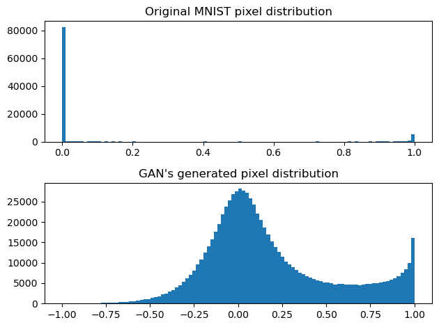
Question 4.2.1.¶
Which generates more realistic images: your GAN, or your VAE? Why do you think this is?
Question 4.2.2.¶
Does your GAN appear to generate all digits in equal number, or has it specialized in a smaller number of digits? If so, why might this be?